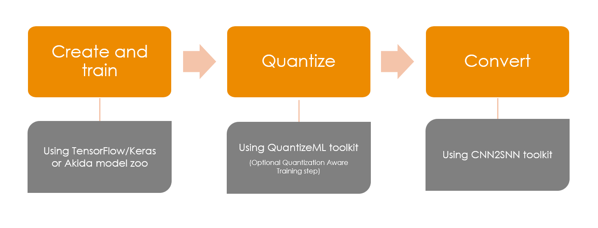

<!DOCTYPE html>
<html class="writer-html5" lang="en" >
<head>
  <meta charset="utf-8" /><meta name="generator" content="Docutils 0.17.1: http://docutils.sourceforge.net/" />

  <meta name="viewport" content="width=device-width, initial-scale=1.0" />
  <title>Global Akida workflow &mdash; Akida Examples  documentation</title>
      <link rel="stylesheet" href="../../_static/pygments.css" type="text/css" />
      <link rel="stylesheet" href="../../_static/css/theme.css" type="text/css" />
      <link rel="stylesheet" href="../../_static/sg_gallery.css" type="text/css" />
      <link rel="stylesheet" href="../../_static/sg_gallery-binder.css" type="text/css" />
      <link rel="stylesheet" href="../../_static/sg_gallery-dataframe.css" type="text/css" />
      <link rel="stylesheet" href="../../_static/sg_gallery-rendered-html.css" type="text/css" />
      <link rel="stylesheet" href="../../_static/design-style.1e8bd061cd6da7fc9cf755528e8ffc24.min.css" type="text/css" />
      <link rel="stylesheet" href="../../_static/custom.css" type="text/css" />
    <link rel="shortcut icon" href="../../_static/favicon.ico"/>
  <!--[if lt IE 9]>
    <script src="../../_static/js/html5shiv.min.js"></script>
  <![endif]-->
  
        <script data-url_root="../../" id="documentation_options" src="../../_static/documentation_options.js"></script>
        <script src="../../_static/jquery.js"></script>
        <script src="../../_static/underscore.js"></script>
        <script src="../../_static/doctools.js"></script>
        <script src="../../_static/design-tabs.js"></script>
    <script src="../../_static/js/theme.js"></script>
    <link rel="index" title="Index" href="../../genindex.html" />
    <link rel="search" title="Search" href="../../search.html" />
    <link rel="next" title="AkidaNet/ImageNet inference" href="plot_1_akidanet_imagenet.html" />
    <link rel="prev" title="Akida examples" href="../index.html" /> 
</head>

<body class="wy-body-for-nav"> 
  <div class="wy-grid-for-nav">
    <nav data-toggle="wy-nav-shift" class="wy-nav-side">
      <div class="wy-side-scroll">
        <div class="wy-side-nav-search"  style="background: #989898" >

          
          
          <a href="../../index.html">
            
              
          </a>
              <div class="version">
                Akida, 2nd Generation
              </div>
<div role="search">
  <form id="rtd-search-form" class="wy-form" action="../../search.html" method="get">
    <input type="text" name="q" placeholder="Search docs" aria-label="Search docs" />
    <input type="hidden" name="check_keywords" value="yes" />
    <input type="hidden" name="area" value="default" />
  </form>
</div>
        </div><div class="wy-menu wy-menu-vertical" data-spy="affix" role="navigation" aria-label="Navigation menu">
              <ul class="current">
<li class="toctree-l1"><a class="reference internal" href="../../index.html">Overview</a></li>
<li class="toctree-l1"><a class="reference internal" href="../../installation.html">Installation</a><ul>
<li class="toctree-l2"><a class="reference internal" href="../../installation.html#supported-configurations">Supported configurations</a></li>
<li class="toctree-l2"><a class="reference internal" href="../../installation.html#quick-installation">Quick installation</a></li>
<li class="toctree-l2"><a class="reference internal" href="../../installation.html#running-examples">Running examples</a></li>
</ul>
</li>
<li class="toctree-l1"><a class="reference internal" href="../../user_guide/user_guide.html">User guide</a><ul>
<li class="toctree-l2"><a class="reference internal" href="../../user_guide/akida.html">Akida user guide</a><ul>
<li class="toctree-l3"><a class="reference internal" href="../../user_guide/akida.html#overview">Overview</a></li>
<li class="toctree-l3"><a class="reference internal" href="../../user_guide/akida.html#programming-interface">Programming interface</a><ul>
<li class="toctree-l4"><a class="reference internal" href="../../user_guide/akida.html#the-akida-model">The Akida Model</a></li>
<li class="toctree-l4"><a class="reference internal" href="../../user_guide/akida.html#akida-layers">Akida layers</a></li>
</ul>
</li>
<li class="toctree-l3"><a class="reference internal" href="../../user_guide/akida.html#model-hardware-mapping">Model Hardware Mapping</a><ul>
<li class="toctree-l4"><a class="reference internal" href="../../user_guide/akida.html#devices">Devices</a></li>
<li class="toctree-l4"><a class="reference internal" href="../../user_guide/akida.html#model-mapping">Model mapping</a></li>
<li class="toctree-l4"><a class="reference internal" href="../../user_guide/akida.html#advanced-mapping-details-and-hardware-devices-usage">Advanced Mapping Details and Hardware Devices Usage</a></li>
<li class="toctree-l4"><a class="reference internal" href="../../user_guide/akida.html#performance-measurement">Performance measurement</a></li>
</ul>
</li>
<li class="toctree-l3"><a class="reference internal" href="../../user_guide/akida.html#using-akida-edge-learning">Using Akida Edge learning</a><ul>
<li class="toctree-l4"><a class="reference internal" href="../../user_guide/akida.html#learning-constraints">Learning constraints</a></li>
<li class="toctree-l4"><a class="reference internal" href="../../user_guide/akida.html#compiling-a-layer">Compiling a layer</a></li>
</ul>
</li>
</ul>
</li>
<li class="toctree-l2"><a class="reference internal" href="../../user_guide/quantizeml.html">QuantizeML toolkit</a><ul>
<li class="toctree-l3"><a class="reference internal" href="../../user_guide/quantizeml.html#overview">Overview</a></li>
<li class="toctree-l3"><a class="reference internal" href="../../user_guide/quantizeml.html#the-fixedpoint-representation">The FixedPoint representation</a></li>
<li class="toctree-l3"><a class="reference internal" href="../../user_guide/quantizeml.html#quantization-flow">Quantization flow</a><ul>
<li class="toctree-l4"><a class="reference internal" href="../../user_guide/quantizeml.html#compatibility-constraints">Compatibility constraints</a></li>
<li class="toctree-l4"><a class="reference internal" href="../../user_guide/quantizeml.html#model-loading">Model loading</a></li>
</ul>
</li>
<li class="toctree-l3"><a class="reference internal" href="../../user_guide/quantizeml.html#command-line-interface">Command line interface</a><ul>
<li class="toctree-l4"><a class="reference internal" href="../../user_guide/quantizeml.html#quantize-cli">quantize CLI</a></li>
<li class="toctree-l4"><a class="reference internal" href="../../user_guide/quantizeml.html#config-cli">config CLI</a></li>
<li class="toctree-l4"><a class="reference internal" href="../../user_guide/quantizeml.html#check-cli">check CLI</a></li>
<li class="toctree-l4"><a class="reference internal" href="../../user_guide/quantizeml.html#insert-rescaling-cli">insert_rescaling CLI</a></li>
</ul>
</li>
<li class="toctree-l3"><a class="reference internal" href="../../user_guide/quantizeml.html#supported-layer-types">Supported layer types</a></li>
</ul>
</li>
<li class="toctree-l2"><a class="reference internal" href="../../user_guide/cnn2snn.html">CNN2SNN toolkit</a><ul>
<li class="toctree-l3"><a class="reference internal" href="../../user_guide/cnn2snn.html#overview">Overview</a></li>
<li class="toctree-l3"><a class="reference internal" href="../../user_guide/cnn2snn.html#conversion-flow">Conversion flow</a><ul>
<li class="toctree-l4"><a class="reference internal" href="../../user_guide/cnn2snn.html#conversion-compatibility">Conversion compatibility</a></li>
<li class="toctree-l4"><a class="reference internal" href="../../user_guide/cnn2snn.html#command-line-interface">Command-line interface</a></li>
</ul>
</li>
<li class="toctree-l3"><a class="reference internal" href="../../user_guide/cnn2snn.html#handling-akida-1-0-and-akida-2-0-specificities">Handling Akida 1.0 and Akida 2.0 specificities</a></li>
<li class="toctree-l3"><a class="reference internal" href="../../user_guide/cnn2snn.html#legacy-quantization-api">Legacy quantization API</a><ul>
<li class="toctree-l4"><a class="reference internal" href="../../user_guide/cnn2snn.html#typical-quantization-scenario">Typical quantization scenario</a></li>
<li class="toctree-l4"><a class="reference internal" href="../../user_guide/cnn2snn.html#design-compatibility-constraints">Design compatibility constraints</a></li>
<li class="toctree-l4"><a class="reference internal" href="../../user_guide/cnn2snn.html#id4">Command-line interface</a></li>
<li class="toctree-l4"><a class="reference internal" href="../../user_guide/cnn2snn.html#layers-considerations">Layers Considerations</a></li>
<li class="toctree-l4"><a class="reference internal" href="../../user_guide/cnn2snn.html#tips-and-tricks">Tips and Tricks</a></li>
</ul>
</li>
</ul>
</li>
<li class="toctree-l2"><a class="reference internal" href="../../user_guide/akida_models.html">Akida models zoo</a><ul>
<li class="toctree-l3"><a class="reference internal" href="../../user_guide/akida_models.html#overview">Overview</a></li>
<li class="toctree-l3"><a class="reference internal" href="../../user_guide/akida_models.html#command-line-interface-for-model-creation">Command-line interface for model creation</a></li>
<li class="toctree-l3"><a class="reference internal" href="../../user_guide/akida_models.html#command-line-interface-for-model-training">Command-line interface for model training</a><ul>
<li class="toctree-l4"><a class="reference internal" href="../../user_guide/akida_models.html#kws-training">KWS training</a></li>
<li class="toctree-l4"><a class="reference internal" href="../../user_guide/akida_models.html#akidanet-training">AkidaNet training</a></li>
</ul>
</li>
<li class="toctree-l3"><a class="reference internal" href="../../user_guide/akida_models.html#command-line-interface-for-model-evaluation">Command-line interface for model evaluation</a></li>
<li class="toctree-l3"><a class="reference internal" href="../../user_guide/akida_models.html#command-line-interface-to-evaluate-model-macs">Command-line interface to evaluate model MACS</a></li>
<li class="toctree-l3"><a class="reference internal" href="../../user_guide/akida_models.html#id1">Layer Blocks</a></li>
<li class="toctree-l3"><a class="reference internal" href="../../user_guide/akida_models.html#handling-akida-1-0-and-akida-2-0-specificities">Handling Akida 1.0 and Akida 2.0 specificities</a></li>
</ul>
</li>
<li class="toctree-l2"><a class="reference internal" href="../../user_guide/1.0_hw_constraints.html">Akida 1.0 Hardware constraints</a></li>
</ul>
</li>
<li class="toctree-l1"><a class="reference internal" href="../../api_reference/api_reference.html">API reference</a><ul>
<li class="toctree-l2"><a class="reference internal" href="../../api_reference/akida_apis.html">Akida runtime</a><ul>
<li class="toctree-l3"><a class="reference internal" href="../../api_reference/akida_apis.html#model">Model</a></li>
<li class="toctree-l3"><a class="reference internal" href="../../api_reference/akida_apis.html#layer">Layer</a><ul>
<li class="toctree-l4"><a class="reference internal" href="../../api_reference/akida_apis.html#id1">Layer</a></li>
<li class="toctree-l4"><a class="reference internal" href="../../api_reference/akida_apis.html#mapping">Mapping</a></li>
</ul>
</li>
<li class="toctree-l3"><a class="reference internal" href="../../api_reference/akida_apis.html#akida-v1-layers">Akida V1 layers</a></li>
<li class="toctree-l3"><a class="reference internal" href="../../api_reference/akida_apis.html#akida-v2-layers">Akida V2 layers</a></li>
<li class="toctree-l3"><a class="reference internal" href="../../api_reference/akida_apis.html#layer-parameters">Layer parameters</a><ul>
<li class="toctree-l4"><a class="reference internal" href="../../api_reference/akida_apis.html#layertype">LayerType</a></li>
<li class="toctree-l4"><a class="reference internal" href="../../api_reference/akida_apis.html#padding">Padding</a></li>
<li class="toctree-l4"><a class="reference internal" href="../../api_reference/akida_apis.html#pooltype">PoolType</a></li>
</ul>
</li>
<li class="toctree-l3"><a class="reference internal" href="../../api_reference/akida_apis.html#optimizers">Optimizers</a></li>
<li class="toctree-l3"><a class="reference internal" href="../../api_reference/akida_apis.html#sequence">Sequence</a><ul>
<li class="toctree-l4"><a class="reference internal" href="../../api_reference/akida_apis.html#id2">Sequence</a></li>
<li class="toctree-l4"><a class="reference internal" href="../../api_reference/akida_apis.html#backendtype">BackendType</a></li>
<li class="toctree-l4"><a class="reference internal" href="../../api_reference/akida_apis.html#pass">Pass</a></li>
</ul>
</li>
<li class="toctree-l3"><a class="reference internal" href="../../api_reference/akida_apis.html#device">Device</a><ul>
<li class="toctree-l4"><a class="reference internal" href="../../api_reference/akida_apis.html#id3">Device</a></li>
<li class="toctree-l4"><a class="reference internal" href="../../api_reference/akida_apis.html#hwversion">HwVersion</a></li>
</ul>
</li>
<li class="toctree-l3"><a class="reference internal" href="../../api_reference/akida_apis.html#hwdevice">HWDevice</a><ul>
<li class="toctree-l4"><a class="reference internal" href="../../api_reference/akida_apis.html#id4">HWDevice</a></li>
<li class="toctree-l4"><a class="reference internal" href="../../api_reference/akida_apis.html#socdriver">SocDriver</a></li>
<li class="toctree-l4"><a class="reference internal" href="../../api_reference/akida_apis.html#clockmode">ClockMode</a></li>
</ul>
</li>
<li class="toctree-l3"><a class="reference internal" href="../../api_reference/akida_apis.html#powermeter">PowerMeter</a></li>
<li class="toctree-l3"><a class="reference internal" href="../../api_reference/akida_apis.html#np">NP</a></li>
<li class="toctree-l3"><a class="reference internal" href="../../api_reference/akida_apis.html#tools">Tools</a><ul>
<li class="toctree-l4"><a class="reference internal" href="../../api_reference/akida_apis.html#sparsity">Sparsity</a></li>
</ul>
</li>
</ul>
</li>
<li class="toctree-l2"><a class="reference internal" href="../../api_reference/cnn2snn_apis.html">CNN2SNN</a><ul>
<li class="toctree-l3"><a class="reference internal" href="../../api_reference/cnn2snn_apis.html#akida-version">Akida version</a></li>
<li class="toctree-l3"><a class="reference internal" href="../../api_reference/cnn2snn_apis.html#conversion">Conversion</a></li>
<li class="toctree-l3"><a class="reference internal" href="../../api_reference/cnn2snn_apis.html#legacy-quantization-api">Legacy quantization API</a><ul>
<li class="toctree-l4"><a class="reference internal" href="../../api_reference/cnn2snn_apis.html#utils">Utils</a></li>
<li class="toctree-l4"><a class="reference internal" href="../../api_reference/cnn2snn_apis.html#calibration">Calibration</a></li>
<li class="toctree-l4"><a class="reference internal" href="../../api_reference/cnn2snn_apis.html#transforms">Transforms</a></li>
<li class="toctree-l4"><a class="reference internal" href="../../api_reference/cnn2snn_apis.html#constraint">Constraint</a></li>
<li class="toctree-l4"><a class="reference internal" href="../../api_reference/cnn2snn_apis.html#quantization">Quantization</a></li>
<li class="toctree-l4"><a class="reference internal" href="../../api_reference/cnn2snn_apis.html#quantizers">Quantizers</a></li>
<li class="toctree-l4"><a class="reference internal" href="../../api_reference/cnn2snn_apis.html#quantized-layers">Quantized layers</a></li>
</ul>
</li>
</ul>
</li>
<li class="toctree-l2"><a class="reference internal" href="../../api_reference/quantizeml_apis.html">QuantizeML</a><ul>
<li class="toctree-l3"><a class="reference internal" href="../../api_reference/quantizeml_apis.html#layers">Layers</a><ul>
<li class="toctree-l4"><a class="reference internal" href="../../api_reference/quantizeml_apis.html#reshaping">Reshaping</a></li>
<li class="toctree-l4"><a class="reference internal" href="../../api_reference/quantizeml_apis.html#activations">Activations</a></li>
<li class="toctree-l4"><a class="reference internal" href="../../api_reference/quantizeml_apis.html#attention">Attention</a></li>
<li class="toctree-l4"><a class="reference internal" href="../../api_reference/quantizeml_apis.html#normalization">Normalization</a></li>
<li class="toctree-l4"><a class="reference internal" href="../../api_reference/quantizeml_apis.html#convolution">Convolution</a></li>
<li class="toctree-l4"><a class="reference internal" href="../../api_reference/quantizeml_apis.html#depthwise-convolution">Depthwise convolution</a></li>
<li class="toctree-l4"><a class="reference internal" href="../../api_reference/quantizeml_apis.html#separable-convolution">Separable convolution</a></li>
<li class="toctree-l4"><a class="reference internal" href="../../api_reference/quantizeml_apis.html#dense">Dense</a></li>
<li class="toctree-l4"><a class="reference internal" href="../../api_reference/quantizeml_apis.html#skip-connection">Skip connection</a></li>
<li class="toctree-l4"><a class="reference internal" href="../../api_reference/quantizeml_apis.html#pooling">Pooling</a></li>
<li class="toctree-l4"><a class="reference internal" href="../../api_reference/quantizeml_apis.html#shiftmax">Shiftmax</a></li>
<li class="toctree-l4"><a class="reference internal" href="../../api_reference/quantizeml_apis.html#transformers">Transformers</a></li>
<li class="toctree-l4"><a class="reference internal" href="../../api_reference/quantizeml_apis.html#rescaling">Rescaling</a></li>
<li class="toctree-l4"><a class="reference internal" href="../../api_reference/quantizeml_apis.html#dropout">Dropout</a></li>
<li class="toctree-l4"><a class="reference internal" href="../../api_reference/quantizeml_apis.html#quantizers">Quantizers</a></li>
<li class="toctree-l4"><a class="reference internal" href="../../api_reference/quantizeml_apis.html#quantization-parameters">Quantization parameters</a></li>
<li class="toctree-l4"><a class="reference internal" href="../../api_reference/quantizeml_apis.html#calibration">Calibration</a></li>
<li class="toctree-l4"><a class="reference internal" href="../../api_reference/quantizeml_apis.html#recording">Recording</a></li>
</ul>
</li>
<li class="toctree-l3"><a class="reference internal" href="../../api_reference/quantizeml_apis.html#models">Models</a><ul>
<li class="toctree-l4"><a class="reference internal" href="../../api_reference/quantizeml_apis.html#transforms">Transforms</a></li>
<li class="toctree-l4"><a class="reference internal" href="../../api_reference/quantizeml_apis.html#quantization">Quantization</a></li>
<li class="toctree-l4"><a class="reference internal" href="../../api_reference/quantizeml_apis.html#id1">Calibration</a></li>
<li class="toctree-l4"><a class="reference internal" href="../../api_reference/quantizeml_apis.html#utils">Utils</a></li>
</ul>
</li>
<li class="toctree-l3"><a class="reference internal" href="../../api_reference/quantizeml_apis.html#tensors">Tensors</a><ul>
<li class="toctree-l4"><a class="reference internal" href="../../api_reference/quantizeml_apis.html#qtensor">QTensor</a></li>
<li class="toctree-l4"><a class="reference internal" href="../../api_reference/quantizeml_apis.html#fixedpoint">FixedPoint</a></li>
<li class="toctree-l4"><a class="reference internal" href="../../api_reference/quantizeml_apis.html#qfloat">QFloat</a></li>
</ul>
</li>
</ul>
</li>
<li class="toctree-l2"><a class="reference internal" href="../../api_reference/akida_models_apis.html">Akida models</a><ul>
<li class="toctree-l3"><a class="reference internal" href="../../api_reference/akida_models_apis.html#layer-blocks">Layer blocks</a><ul>
<li class="toctree-l4"><a class="reference internal" href="../../api_reference/akida_models_apis.html#cnn-blocks">CNN blocks</a></li>
<li class="toctree-l4"><a class="reference internal" href="../../api_reference/akida_models_apis.html#transformers-blocks">Transformers blocks</a></li>
<li class="toctree-l4"><a class="reference internal" href="../../api_reference/akida_models_apis.html#transposed-blocks">Transposed blocks</a></li>
<li class="toctree-l4"><a class="reference internal" href="../../api_reference/akida_models_apis.html#detection-block">Detection block</a></li>
</ul>
</li>
<li class="toctree-l3"><a class="reference internal" href="../../api_reference/akida_models_apis.html#helpers">Helpers</a><ul>
<li class="toctree-l4"><a class="reference internal" href="../../api_reference/akida_models_apis.html#gamma-constraint">Gamma constraint</a></li>
<li class="toctree-l4"><a class="reference internal" href="../../api_reference/akida_models_apis.html#unfusing-separableconvolutional">Unfusing SeparableConvolutional</a></li>
<li class="toctree-l4"><a class="reference internal" href="../../api_reference/akida_models_apis.html#extract-samples">Extract samples</a></li>
</ul>
</li>
<li class="toctree-l3"><a class="reference internal" href="../../api_reference/akida_models_apis.html#knowledge-distillation">Knowledge distillation</a></li>
<li class="toctree-l3"><a class="reference internal" href="../../api_reference/akida_models_apis.html#macs">MACS</a></li>
<li class="toctree-l3"><a class="reference internal" href="../../api_reference/akida_models_apis.html#model-i-o">Model I/O</a></li>
<li class="toctree-l3"><a class="reference internal" href="../../api_reference/akida_models_apis.html#utils">Utils</a></li>
<li class="toctree-l3"><a class="reference internal" href="../../api_reference/akida_models_apis.html#model-zoo">Model zoo</a><ul>
<li class="toctree-l4"><a class="reference internal" href="../../api_reference/akida_models_apis.html#akidanet">AkidaNet</a></li>
<li class="toctree-l4"><a class="reference internal" href="../../api_reference/akida_models_apis.html#mobilenet">Mobilenet</a></li>
<li class="toctree-l4"><a class="reference internal" href="../../api_reference/akida_models_apis.html#ds-cnn">DS-CNN</a></li>
<li class="toctree-l4"><a class="reference internal" href="../../api_reference/akida_models_apis.html#vgg">VGG</a></li>
<li class="toctree-l4"><a class="reference internal" href="../../api_reference/akida_models_apis.html#yolo">YOLO</a></li>
<li class="toctree-l4"><a class="reference internal" href="../../api_reference/akida_models_apis.html#pointnet">PointNet++</a></li>
<li class="toctree-l4"><a class="reference internal" href="../../api_reference/akida_models_apis.html#gxnor">GXNOR</a></li>
<li class="toctree-l4"><a class="reference internal" href="../../api_reference/akida_models_apis.html#centernet">CenterNet</a></li>
<li class="toctree-l4"><a class="reference internal" href="../../api_reference/akida_models_apis.html#akidaunet">AkidaUNet</a></li>
<li class="toctree-l4"><a class="reference internal" href="../../api_reference/akida_models_apis.html#transformers">Transformers</a></li>
</ul>
</li>
</ul>
</li>
</ul>
</li>
<li class="toctree-l1 current"><a class="reference internal" href="../index.html">Examples</a><ul class="current">
<li class="toctree-l2 current"><a class="reference internal" href="../index.html#general-examples">General examples</a><ul class="current">
<li class="toctree-l3 current"><a class="current reference internal" href="#">Global Akida workflow</a><ul>
<li class="toctree-l4"><a class="reference internal" href="#create-and-train">1. Create and train</a></li>
<li class="toctree-l4"><a class="reference internal" href="#quantize">2. Quantize</a></li>
<li class="toctree-l4"><a class="reference internal" href="#convert">3. Convert</a></li>
<li class="toctree-l4"><a class="reference internal" href="#gxnor-mnist">4. GXNOR/MNIST</a></li>
</ul>
</li>
<li class="toctree-l3"><a class="reference internal" href="plot_1_akidanet_imagenet.html">AkidaNet/ImageNet inference</a><ul>
<li class="toctree-l4"><a class="reference internal" href="plot_1_akidanet_imagenet.html#dataset-preparation">1. Dataset preparation</a></li>
<li class="toctree-l4"><a class="reference internal" href="plot_1_akidanet_imagenet.html#pretrained-quantized-model">2. Pretrained quantized model</a></li>
<li class="toctree-l4"><a class="reference internal" href="plot_1_akidanet_imagenet.html#conversion-to-akida">3. Conversion to Akida</a></li>
<li class="toctree-l4"><a class="reference internal" href="plot_1_akidanet_imagenet.html#hardware-mapping-and-performance">4. Hardware mapping and performance</a></li>
</ul>
</li>
<li class="toctree-l3"><a class="reference internal" href="plot_2_ds_cnn_kws.html">DS-CNN/KWS inference</a><ul>
<li class="toctree-l4"><a class="reference internal" href="plot_2_ds_cnn_kws.html#load-the-preprocessed-dataset">1. Load the preprocessed dataset</a></li>
<li class="toctree-l4"><a class="reference internal" href="plot_2_ds_cnn_kws.html#load-a-pre-trained-native-keras-model">2. Load a pre-trained native Keras model</a></li>
<li class="toctree-l4"><a class="reference internal" href="plot_2_ds_cnn_kws.html#load-a-pre-trained-quantized-keras-model">3. Load a pre-trained quantized Keras model</a></li>
<li class="toctree-l4"><a class="reference internal" href="plot_2_ds_cnn_kws.html#conversion-to-akida">4. Conversion to Akida</a></li>
<li class="toctree-l4"><a class="reference internal" href="plot_2_ds_cnn_kws.html#confusion-matrix">5. Confusion matrix</a></li>
</ul>
</li>
<li class="toctree-l3"><a class="reference internal" href="plot_3_regression.html">Age estimation (regression) example</a><ul>
<li class="toctree-l4"><a class="reference internal" href="plot_3_regression.html#load-the-utkface-dataset">1. Load the UTKFace Dataset</a></li>
<li class="toctree-l4"><a class="reference internal" href="plot_3_regression.html#load-a-pre-trained-native-keras-model">2. Load a pre-trained native Keras model</a></li>
<li class="toctree-l4"><a class="reference internal" href="plot_3_regression.html#load-a-pre-trained-quantized-keras-model">3. Load a pre-trained quantized Keras model</a></li>
<li class="toctree-l4"><a class="reference internal" href="plot_3_regression.html#conversion-to-akida">4. Conversion to Akida</a></li>
<li class="toctree-l4"><a class="reference internal" href="plot_3_regression.html#estimate-age-on-a-single-image">5. Estimate age on a single image</a></li>
</ul>
</li>
<li class="toctree-l3"><a class="reference internal" href="plot_4_transfer_learning.html">Transfer learning with AkidaNet for PlantVillage</a><ul>
<li class="toctree-l4"><a class="reference internal" href="plot_4_transfer_learning.html#transfer-learning-process">Transfer learning process</a></li>
<li class="toctree-l4"><a class="reference internal" href="plot_4_transfer_learning.html#dataset-preparation">1. Dataset preparation</a></li>
<li class="toctree-l4"><a class="reference internal" href="plot_4_transfer_learning.html#get-a-trained-akidanet-base-model">2. Get a trained AkidaNet base model</a></li>
<li class="toctree-l4"><a class="reference internal" href="plot_4_transfer_learning.html#add-a-classification-head-to-the-model">3. Add a classification head to the model</a></li>
<li class="toctree-l4"><a class="reference internal" href="plot_4_transfer_learning.html#freeze-the-base-model">4. Freeze the base model</a></li>
<li class="toctree-l4"><a class="reference internal" href="plot_4_transfer_learning.html#train-for-a-few-epochs">5. Train for a few epochs</a></li>
<li class="toctree-l4"><a class="reference internal" href="plot_4_transfer_learning.html#quantize-the-model">6. Quantize the model</a></li>
<li class="toctree-l4"><a class="reference internal" href="plot_4_transfer_learning.html#compute-accuracy">7. Compute accuracy</a></li>
</ul>
</li>
<li class="toctree-l3"><a class="reference internal" href="plot_5_voc_yolo_detection.html">YOLO/PASCAL-VOC detection tutorial</a><ul>
<li class="toctree-l4"><a class="reference internal" href="plot_5_voc_yolo_detection.html#introduction">1. Introduction</a></li>
<li class="toctree-l4"><a class="reference internal" href="plot_5_voc_yolo_detection.html#preprocessing-tools">2. Preprocessing tools</a></li>
<li class="toctree-l4"><a class="reference internal" href="plot_5_voc_yolo_detection.html#model-architecture">3. Model architecture</a></li>
<li class="toctree-l4"><a class="reference internal" href="plot_5_voc_yolo_detection.html#training">4. Training</a></li>
<li class="toctree-l4"><a class="reference internal" href="plot_5_voc_yolo_detection.html#performance">5. Performance</a></li>
<li class="toctree-l4"><a class="reference internal" href="plot_5_voc_yolo_detection.html#conversion-to-akida">6. Conversion to Akida</a></li>
</ul>
</li>
<li class="toctree-l3"><a class="reference internal" href="plot_6_segmentation.html">Segmentation tutorial</a><ul>
<li class="toctree-l4"><a class="reference internal" href="plot_6_segmentation.html#load-the-dataset">1. Load the dataset</a></li>
<li class="toctree-l4"><a class="reference internal" href="plot_6_segmentation.html#load-a-pre-trained-native-keras-model">2. Load a pre-trained native Keras model</a></li>
<li class="toctree-l4"><a class="reference internal" href="plot_6_segmentation.html#load-a-pre-trained-quantized-keras-model">3. Load a pre-trained quantized Keras model</a></li>
<li class="toctree-l4"><a class="reference internal" href="plot_6_segmentation.html#conversion-to-akida">4. Conversion to Akida</a></li>
<li class="toctree-l4"><a class="reference internal" href="plot_6_segmentation.html#segment-a-single-image">5. Segment a single image</a></li>
</ul>
</li>
<li class="toctree-l3"><a class="reference internal" href="plot_7_vision_transformer.html">Build Vision Transformers for Akida</a><ul>
<li class="toctree-l4"><a class="reference internal" href="plot_7_vision_transformer.html#model-selection">1. Model selection</a></li>
<li class="toctree-l4"><a class="reference internal" href="plot_7_vision_transformer.html#model-optimization-for-akida-hardware">2. Model optimization for Akida hardware</a></li>
<li class="toctree-l4"><a class="reference internal" href="plot_7_vision_transformer.html#model-training">3. Model Training</a></li>
<li class="toctree-l4"><a class="reference internal" href="plot_7_vision_transformer.html#model-quantization">4. Model quantization</a></li>
<li class="toctree-l4"><a class="reference internal" href="plot_7_vision_transformer.html#conversion-to-akida">5. Conversion to Akida</a></li>
<li class="toctree-l4"><a class="reference internal" href="plot_7_vision_transformer.html#displaying-results-attention-maps">6. Displaying results Attention Maps</a></li>
</ul>
</li>
</ul>
</li>
<li class="toctree-l2"><a class="reference internal" href="../index.html#quantization">Quantization</a><ul>
<li class="toctree-l3"><a class="reference internal" href="../quantization/plot_0_advanced_quantizeml.html">Advanced QuantizeML tutorial</a><ul>
<li class="toctree-l4"><a class="reference internal" href="../quantization/plot_0_advanced_quantizeml.html#defining-a-quantization-scheme">1. Defining a quantization scheme</a></li>
<li class="toctree-l4"><a class="reference internal" href="../quantization/plot_0_advanced_quantizeml.html#calibration">2. Calibration</a></li>
</ul>
</li>
<li class="toctree-l3"><a class="reference internal" href="../quantization/plot_1_upgrading_to_2.0.html">Upgrading to Akida 2.0</a><ul>
<li class="toctree-l4"><a class="reference internal" href="../quantization/plot_1_upgrading_to_2.0.html#workflow-differences">1. Workflow differences</a></li>
<li class="toctree-l4"><a class="reference internal" href="../quantization/plot_1_upgrading_to_2.0.html#models-architecture-differences">2. Models architecture differences</a></li>
<li class="toctree-l4"><a class="reference internal" href="../quantization/plot_1_upgrading_to_2.0.html#using-akidaversion">3. Using <code class="docutils literal notranslate"><span class="pre">AkidaVersion</span></code></a></li>
</ul>
</li>
</ul>
</li>
<li class="toctree-l2"><a class="reference internal" href="../index.html#edge-examples">Edge examples</a><ul>
<li class="toctree-l3"><a class="reference internal" href="../edge/plot_0_edge_learning_vision.html">Akida vision edge learning</a><ul>
<li class="toctree-l4"><a class="reference internal" href="../edge/plot_0_edge_learning_vision.html#dataset-preparation">1. Dataset preparation</a></li>
<li class="toctree-l4"><a class="reference internal" href="../edge/plot_0_edge_learning_vision.html#prepare-akida-model-for-learning">2. Prepare Akida model for learning</a></li>
<li class="toctree-l4"><a class="reference internal" href="../edge/plot_0_edge_learning_vision.html#edge-learning-with-akida">3. Edge learning with Akida</a></li>
</ul>
</li>
<li class="toctree-l3"><a class="reference internal" href="../edge/plot_1_edge_learning_kws.html">Akida edge learning for keyword spotting</a><ul>
<li class="toctree-l4"><a class="reference internal" href="../edge/plot_1_edge_learning_kws.html#edge-learning-process">1. Edge learning process</a></li>
<li class="toctree-l4"><a class="reference internal" href="../edge/plot_1_edge_learning_kws.html#dataset-preparation">2. Dataset preparation</a></li>
<li class="toctree-l4"><a class="reference internal" href="../edge/plot_1_edge_learning_kws.html#prepare-akida-model-for-learning">3. Prepare Akida model for learning</a></li>
<li class="toctree-l4"><a class="reference internal" href="../edge/plot_1_edge_learning_kws.html#learn-with-akida-using-the-training-set">4. Learn with Akida using the training set</a></li>
<li class="toctree-l4"><a class="reference internal" href="../edge/plot_1_edge_learning_kws.html#edge-learning">5. Edge learning</a></li>
</ul>
</li>
<li class="toctree-l3"><a class="reference internal" href="../edge/plot_2_edge_learning_parameters.html">Tips to set Akida edge learning parameters</a><ul>
<li class="toctree-l4"><a class="reference internal" href="../edge/plot_2_edge_learning_parameters.html#akida-learning-parameters">1. Akida learning parameters</a></li>
<li class="toctree-l4"><a class="reference internal" href="../edge/plot_2_edge_learning_parameters.html#create-akida-model">2. Create Akida model</a></li>
<li class="toctree-l4"><a class="reference internal" href="../edge/plot_2_edge_learning_parameters.html#estimate-the-required-number-of-weights-of-the-trainable-layer">3. Estimate the required number of weights of the trainable layer</a></li>
<li class="toctree-l4"><a class="reference internal" href="../edge/plot_2_edge_learning_parameters.html#estimate-the-number-of-neurons-per-class">4. Estimate the number of neurons per class</a></li>
</ul>
</li>
</ul>
</li>
<li class="toctree-l2"><a class="reference internal" href="../index.html#deprecated-cnn2snn-tutorials">[Deprecated] CNN2SNN tutorials</a><ul>
<li class="toctree-l3"><a class="reference internal" href="../cnn2snn/plot_1_advanced_cnn2snn.html">Advanced CNN2SNN tutorial</a><ul>
<li class="toctree-l4"><a class="reference internal" href="../cnn2snn/plot_1_advanced_cnn2snn.html#design-a-cnn2snn-quantized-model">1. Design a CNN2SNN quantized model</a></li>
<li class="toctree-l4"><a class="reference internal" href="../cnn2snn/plot_1_advanced_cnn2snn.html#weight-quantizer-details">2. Weight Quantizer Details</a></li>
<li class="toctree-l4"><a class="reference internal" href="../cnn2snn/plot_1_advanced_cnn2snn.html#understanding-quantized-activation">3. Understanding quantized activation</a></li>
<li class="toctree-l4"><a class="reference internal" href="../cnn2snn/plot_1_advanced_cnn2snn.html#how-to-deal-with-too-high-scale-factors">4. How to deal with too high scale factors</a></li>
</ul>
</li>
</ul>
</li>
</ul>
</li>
<li class="toctree-l1"><a class="reference internal" href="../../model_zoo_performance.html">Model zoo performance</a><ul>
<li class="toctree-l2"><a class="reference internal" href="../../model_zoo_performance.html#akida-1-0-models">Akida 1.0 models</a><ul>
<li class="toctree-l3"><a class="reference internal" href="../../model_zoo_performance.html#image-icon-ref-image-domain"> Image domain</a><ul>
<li class="toctree-l4"><a class="reference internal" href="../../model_zoo_performance.html#classification">Classification</a></li>
<li class="toctree-l4"><a class="reference internal" href="../../model_zoo_performance.html#object-detection">Object detection</a></li>
<li class="toctree-l4"><a class="reference internal" href="../../model_zoo_performance.html#regression">Regression</a></li>
<li class="toctree-l4"><a class="reference internal" href="../../model_zoo_performance.html#face-recognition">Face recognition</a></li>
</ul>
</li>
<li class="toctree-l3"><a class="reference internal" href="../../model_zoo_performance.html#audio-icon-ref-audio-domain"> Audio domain</a><ul>
<li class="toctree-l4"><a class="reference internal" href="../../model_zoo_performance.html#keyword-spotting">Keyword spotting</a></li>
</ul>
</li>
<li class="toctree-l3"><a class="reference internal" href="../../model_zoo_performance.html#pointcloud-icon-ref-point-cloud"> Point cloud</a><ul>
<li class="toctree-l4"><a class="reference internal" href="../../model_zoo_performance.html#id1">Classification</a></li>
</ul>
</li>
</ul>
</li>
<li class="toctree-l2"><a class="reference internal" href="../../model_zoo_performance.html#akida-2-0-models">Akida 2.0 models</a><ul>
<li class="toctree-l3"><a class="reference internal" href="../../model_zoo_performance.html#id2"> Image domain</a><ul>
<li class="toctree-l4"><a class="reference internal" href="../../model_zoo_performance.html#id3">Classification</a></li>
<li class="toctree-l4"><a class="reference internal" href="../../model_zoo_performance.html#id6">Object detection</a></li>
<li class="toctree-l4"><a class="reference internal" href="../../model_zoo_performance.html#id7">Regression</a></li>
<li class="toctree-l4"><a class="reference internal" href="../../model_zoo_performance.html#id8">Face recognition</a></li>
<li class="toctree-l4"><a class="reference internal" href="../../model_zoo_performance.html#segmentation">Segmentation</a></li>
</ul>
</li>
<li class="toctree-l3"><a class="reference internal" href="../../model_zoo_performance.html#id10"> Audio domain</a><ul>
<li class="toctree-l4"><a class="reference internal" href="../../model_zoo_performance.html#id11">Keyword spotting</a></li>
</ul>
</li>
<li class="toctree-l3"><a class="reference internal" href="../../model_zoo_performance.html#id12"> Point cloud</a><ul>
<li class="toctree-l4"><a class="reference internal" href="../../model_zoo_performance.html#id13">Classification</a></li>
</ul>
</li>
</ul>
</li>
</ul>
</li>
<li class="toctree-l1"><a class="reference internal" href="../../changelog.html">Changelog</a></li>
<li class="toctree-l1"><a class="reference external" href="https://support.brainchip.com/portal/home">Support</a></li>
<li class="toctree-l1"><a class="reference internal" href="../../license.html">License</a></li>
</ul>

        </div>
      </div>
    </nav>

    <section data-toggle="wy-nav-shift" class="wy-nav-content-wrap"><nav class="wy-nav-top" aria-label="Mobile navigation menu"  style="background: #989898" >
          <i data-toggle="wy-nav-top" class="fa fa-bars"></i>
          <a href="../../index.html">Akida Examples</a>
      </nav>

      <div class="wy-nav-content">
        <div class="rst-content">
          <div role="navigation" aria-label="Page navigation">
  <ul class="wy-breadcrumbs">
      <li><a href="../../index.html" class="icon icon-home" aria-label="Home"></a></li>
          <li class="breadcrumb-item"><a href="../index.html">Akida examples</a></li>
      <li class="breadcrumb-item active">Global Akida workflow</li>
      <li class="wy-breadcrumbs-aside">
      </li>
  </ul>
  <hr/>
</div>
          <div role="main" class="document" itemscope="itemscope" itemtype="http://schema.org/Article">
           <div itemprop="articleBody">
             
  <div class="sphx-glr-download-link-note admonition note">
<p class="admonition-title">Note</p>
<p><a class="reference internal" href="#sphx-glr-download-examples-general-plot-0-global-workflow-py"><span class="std std-ref">Go to the end</span></a>
to download the full example code</p>
</div>
<section class="sphx-glr-example-title" id="global-akida-workflow">
<span id="sphx-glr-examples-general-plot-0-global-workflow-py"></span><h1>Global Akida workflow<a class="headerlink" href="#global-akida-workflow" title="Permalink to this headline"></a></h1>
<p>Using the MNIST dataset, this example shows the definition and training of a keras
floating point model, its quantization to 8-bit with the help of calibration,
its quantization to 4-bit using QAT and its conversion to Akida.
Notice that the performance of the original keras floating point model is maintained
throughout the Akida flow.
Please refer to the <a class="reference external" href="../../user_guide/akida.html">Akida user guide</a> for further information.</p>
<div class="admonition note">
<p class="admonition-title">Note</p>
<p>Please refer to the TensorFlow  <a class="reference external" href="https://www.tensorflow.org/api_docs/python/tf/keras/models">tf.keras.models</a>
module for model creation/import details and the <a class="reference external" href="https://www.tensorflow.org/guide">TensorFlow Guide</a> for TensorFlow usage.</p>
<p>The MNIST example below is light enough so that a <a class="reference external" href="https://www.tensorflow.org/install/gpu">GPU</a> is not needed for training.</p>
</div>
<figure class="align-center" id="id2">
<a class="reference external image-reference" href="../../_images/overall_flow.png"></a>
<figcaption>
<p><span class="caption-text">Akida workflow</span><a class="headerlink" href="#id2" title="Permalink to this image"></a></p>
</figcaption>
</figure>
<section id="create-and-train">
<h2>1. Create and train<a class="headerlink" href="#create-and-train" title="Permalink to this headline"></a></h2>
<section id="load-and-reshape-mnist-dataset">
<h3>1.1. Load and reshape MNIST dataset<a class="headerlink" href="#load-and-reshape-mnist-dataset" title="Permalink to this headline"></a></h3>
<div class="highlight-default notranslate"><div class="highlight"><pre><span></span><span class="kn">import</span> <span class="nn">numpy</span> <span class="k">as</span> <span class="nn">np</span>

<span class="kn">import</span> <span class="nn">matplotlib.cm</span> <span class="k">as</span> <span class="nn">cm</span>
<span class="kn">import</span> <span class="nn">matplotlib.pyplot</span> <span class="k">as</span> <span class="nn">plt</span>

<span class="kn">from</span> <span class="nn">keras.datasets</span> <span class="kn">import</span> <span class="n">mnist</span>

<span class="c1"># Load MNIST dataset</span>
<span class="p">(</span><span class="n">x_train</span><span class="p">,</span> <span class="n">y_train</span><span class="p">),</span> <span class="p">(</span><span class="n">x_test</span><span class="p">,</span> <span class="n">y_test</span><span class="p">)</span> <span class="o">=</span> <span class="n">mnist</span><span class="o">.</span><span class="n">load_data</span><span class="p">()</span>

<span class="c1"># Add a channels dimension to the image sets as Akida expects 4-D inputs (corresponding to</span>
<span class="c1"># (num_samples, width, height, channels). Note: MNIST is a grayscale dataset and is unusual</span>
<span class="c1"># in this respect - most image data already includes a channel dimension, and this step will</span>
<span class="c1"># not be necessary.</span>
<span class="n">x_train</span> <span class="o">=</span> <span class="n">np</span><span class="o">.</span><span class="n">expand_dims</span><span class="p">(</span><span class="n">x_train</span><span class="p">,</span> <span class="o">-</span><span class="mi">1</span><span class="p">)</span>
<span class="n">x_test</span> <span class="o">=</span> <span class="n">np</span><span class="o">.</span><span class="n">expand_dims</span><span class="p">(</span><span class="n">x_test</span><span class="p">,</span> <span class="o">-</span><span class="mi">1</span><span class="p">)</span>

<span class="c1"># Display a few images from the test set</span>
<span class="n">f</span><span class="p">,</span> <span class="n">axarr</span> <span class="o">=</span> <span class="n">plt</span><span class="o">.</span><span class="n">subplots</span><span class="p">(</span><span class="mi">1</span><span class="p">,</span> <span class="mi">4</span><span class="p">)</span>
<span class="k">for</span> <span class="n">i</span> <span class="ow">in</span> <span class="nb">range</span><span class="p">(</span><span class="mi">0</span><span class="p">,</span> <span class="mi">4</span><span class="p">):</span>
    <span class="n">axarr</span><span class="p">[</span><span class="n">i</span><span class="p">]</span><span class="o">.</span><span class="n">imshow</span><span class="p">(</span><span class="n">x_test</span><span class="p">[</span><span class="n">i</span><span class="p">]</span><span class="o">.</span><span class="n">reshape</span><span class="p">((</span><span class="mi">28</span><span class="p">,</span> <span class="mi">28</span><span class="p">)),</span> <span class="n">cmap</span><span class="o">=</span><span class="n">cm</span><span class="o">.</span><span class="n">Greys_r</span><span class="p">)</span>
    <span class="n">axarr</span><span class="p">[</span><span class="n">i</span><span class="p">]</span><span class="o">.</span><span class="n">set_title</span><span class="p">(</span><span class="s1">&#39;Class </span><span class="si">%d</span><span class="s1">&#39;</span> <span class="o">%</span> <span class="n">y_test</span><span class="p">[</span><span class="n">i</span><span class="p">])</span>
<span class="n">plt</span><span class="o">.</span><span class="n">show</span><span class="p">()</span>
</pre></div>
</div>
<div class="sphx-glr-script-out highlight-none notranslate"><div class="highlight"><pre><span></span>Downloading data from https://storage.googleapis.com/tensorflow/tf-keras-datasets/mnist.npz

    8192/11490434 [..............................] - ETA: 0s
   49152/11490434 [..............................] - ETA: 26s
   81920/11490434 [..............................] - ETA: 29s
  147456/11490434 [..............................] - ETA: 21s
  212992/11490434 [..............................] - ETA: 17s
  294912/11490434 [..............................] - ETA: 14s
  458752/11490434 [&gt;.............................] - ETA: 10s
  647168/11490434 [&gt;.............................] - ETA: 8s 
  966656/11490434 [=&gt;............................] - ETA: 5s
 1425408/11490434 [==&gt;...........................] - ETA: 4s
 2113536/11490434 [====&gt;.........................] - ETA: 2s
 3121152/11490434 [=======&gt;......................] - ETA: 1s
 4620288/11490434 [===========&gt;..................] - ETA: 1s
 6766592/11490434 [================&gt;.............] - ETA: 0s
 8896512/11490434 [======================&gt;.......] - ETA: 0s
11490434/11490434 [==============================] - 1s 0us/step
</pre></div>
</div>
</section>
<section id="model-definition">
<h3>1.2. Model definition<a class="headerlink" href="#model-definition" title="Permalink to this headline"></a></h3>
<p>Note that at this stage, there is nothing specific to the Akida IP.
The model constructed below, as inspired by <a class="reference external" href="https://www.tensorflow.org/model_optimization/guide/quantization/training_example#train_a_model_for_mnist_without_quantization_aware_training">this example</a>,
is a completely standard <a class="reference external" href="https://www.tensorflow.org/api_docs/python/tf/keras">Keras</a> CNN model.</p>
<div class="highlight-default notranslate"><div class="highlight"><pre><span></span><span class="kn">import</span> <span class="nn">keras</span>

<span class="n">model_keras</span> <span class="o">=</span> <span class="n">keras</span><span class="o">.</span><span class="n">models</span><span class="o">.</span><span class="n">Sequential</span><span class="p">([</span>
    <span class="n">keras</span><span class="o">.</span><span class="n">layers</span><span class="o">.</span><span class="n">Rescaling</span><span class="p">(</span><span class="mf">1.</span> <span class="o">/</span> <span class="mi">255</span><span class="p">,</span> <span class="n">input_shape</span><span class="o">=</span><span class="p">(</span><span class="mi">28</span><span class="p">,</span> <span class="mi">28</span><span class="p">,</span> <span class="mi">1</span><span class="p">)),</span>
    <span class="n">keras</span><span class="o">.</span><span class="n">layers</span><span class="o">.</span><span class="n">Conv2D</span><span class="p">(</span><span class="n">filters</span><span class="o">=</span><span class="mi">32</span><span class="p">,</span> <span class="n">kernel_size</span><span class="o">=</span><span class="mi">3</span><span class="p">,</span> <span class="n">strides</span><span class="o">=</span><span class="mi">2</span><span class="p">),</span>
    <span class="n">keras</span><span class="o">.</span><span class="n">layers</span><span class="o">.</span><span class="n">BatchNormalization</span><span class="p">(),</span>
    <span class="n">keras</span><span class="o">.</span><span class="n">layers</span><span class="o">.</span><span class="n">ReLU</span><span class="p">(),</span>
    <span class="c1"># Separable layer</span>
    <span class="n">keras</span><span class="o">.</span><span class="n">layers</span><span class="o">.</span><span class="n">DepthwiseConv2D</span><span class="p">(</span><span class="n">kernel_size</span><span class="o">=</span><span class="mi">3</span><span class="p">,</span> <span class="n">padding</span><span class="o">=</span><span class="s1">&#39;same&#39;</span><span class="p">,</span> <span class="n">strides</span><span class="o">=</span><span class="mi">2</span><span class="p">),</span>
    <span class="n">keras</span><span class="o">.</span><span class="n">layers</span><span class="o">.</span><span class="n">Conv2D</span><span class="p">(</span><span class="n">filters</span><span class="o">=</span><span class="mi">64</span><span class="p">,</span> <span class="n">kernel_size</span><span class="o">=</span><span class="mi">1</span><span class="p">,</span> <span class="n">padding</span><span class="o">=</span><span class="s1">&#39;same&#39;</span><span class="p">),</span>
    <span class="n">keras</span><span class="o">.</span><span class="n">layers</span><span class="o">.</span><span class="n">BatchNormalization</span><span class="p">(),</span>
    <span class="n">keras</span><span class="o">.</span><span class="n">layers</span><span class="o">.</span><span class="n">ReLU</span><span class="p">(),</span>
    <span class="n">keras</span><span class="o">.</span><span class="n">layers</span><span class="o">.</span><span class="n">Flatten</span><span class="p">(),</span>
    <span class="n">keras</span><span class="o">.</span><span class="n">layers</span><span class="o">.</span><span class="n">Dense</span><span class="p">(</span><span class="mi">10</span><span class="p">)</span>
<span class="p">],</span> <span class="s1">&#39;mnistnet&#39;</span><span class="p">)</span>

<span class="n">model_keras</span><span class="o">.</span><span class="n">summary</span><span class="p">()</span>
</pre></div>
</div>
<div class="sphx-glr-script-out highlight-none notranslate"><div class="highlight"><pre><span></span>Model: &quot;mnistnet&quot;
_________________________________________________________________
 Layer (type)                Output Shape              Param #
=================================================================
 rescaling (Rescaling)       (None, 28, 28, 1)         0

 conv2d (Conv2D)             (None, 13, 13, 32)        320

 batch_normalization (BatchN  (None, 13, 13, 32)       128
 ormalization)

 re_lu (ReLU)                (None, 13, 13, 32)        0

 depthwise_conv2d (Depthwise  (None, 7, 7, 32)         320
 Conv2D)

 conv2d_1 (Conv2D)           (None, 7, 7, 64)          2112

 batch_normalization_1 (Batc  (None, 7, 7, 64)         256
 hNormalization)

 re_lu_1 (ReLU)              (None, 7, 7, 64)          0

 flatten (Flatten)           (None, 3136)              0

 dense (Dense)               (None, 10)                31370

=================================================================
Total params: 34,506
Trainable params: 34,314
Non-trainable params: 192
_________________________________________________________________
</pre></div>
</div>
</section>
<section id="model-training">
<h3>1.3. Model training<a class="headerlink" href="#model-training" title="Permalink to this headline"></a></h3>
<p>Given the model created above, train the model and check its accuracy. The model should achieve
a test accuracy over 98% after 10 epochs.</p>
<div class="highlight-default notranslate"><div class="highlight"><pre><span></span><span class="kn">from</span> <span class="nn">keras.optimizers</span> <span class="kn">import</span> <span class="n">Adam</span>

<span class="n">model_keras</span><span class="o">.</span><span class="n">compile</span><span class="p">(</span>
    <span class="n">loss</span><span class="o">=</span><span class="n">keras</span><span class="o">.</span><span class="n">losses</span><span class="o">.</span><span class="n">SparseCategoricalCrossentropy</span><span class="p">(</span><span class="n">from_logits</span><span class="o">=</span><span class="kc">True</span><span class="p">),</span>
    <span class="n">optimizer</span><span class="o">=</span><span class="n">Adam</span><span class="p">(</span><span class="n">learning_rate</span><span class="o">=</span><span class="mf">1e-3</span><span class="p">),</span>
    <span class="n">metrics</span><span class="o">=</span><span class="p">[</span><span class="s1">&#39;accuracy&#39;</span><span class="p">])</span>

<span class="n">_</span> <span class="o">=</span> <span class="n">model_keras</span><span class="o">.</span><span class="n">fit</span><span class="p">(</span><span class="n">x_train</span><span class="p">,</span> <span class="n">y_train</span><span class="p">,</span> <span class="n">epochs</span><span class="o">=</span><span class="mi">10</span><span class="p">,</span> <span class="n">validation_split</span><span class="o">=</span><span class="mf">0.1</span><span class="p">)</span>
</pre></div>
</div>
<div class="sphx-glr-script-out highlight-none notranslate"><div class="highlight"><pre><span></span>Epoch 1/10

   1/1688 [..............................] - ETA: 27:27 - loss: 2.4613 - accuracy: 0.0938
  24/1688 [..............................] - ETA: 3s - loss: 1.4648 - accuracy: 0.5143   
  49/1688 [..............................] - ETA: 3s - loss: 1.0403 - accuracy: 0.6614
  74/1688 [&gt;.............................] - ETA: 3s - loss: 0.8456 - accuracy: 0.7344
 104/1688 [&gt;.............................] - ETA: 3s - loss: 0.7184 - accuracy: 0.7761
 133/1688 [=&gt;............................] - ETA: 2s - loss: 0.6340 - accuracy: 0.8055
 163/1688 [=&gt;............................] - ETA: 2s - loss: 0.5750 - accuracy: 0.8236
 193/1688 [==&gt;...........................] - ETA: 2s - loss: 0.5226 - accuracy: 0.8416
 222/1688 [==&gt;...........................] - ETA: 2s - loss: 0.4859 - accuracy: 0.8539
 251/1688 [===&gt;..........................] - ETA: 2s - loss: 0.4602 - accuracy: 0.8621
 281/1688 [===&gt;..........................] - ETA: 2s - loss: 0.4348 - accuracy: 0.8697
 311/1688 [====&gt;.........................] - ETA: 2s - loss: 0.4132 - accuracy: 0.8763
 341/1688 [=====&gt;........................] - ETA: 2s - loss: 0.3952 - accuracy: 0.8818
 371/1688 [=====&gt;........................] - ETA: 2s - loss: 0.3768 - accuracy: 0.8874
 401/1688 [======&gt;.......................] - ETA: 2s - loss: 0.3628 - accuracy: 0.8921
 431/1688 [======&gt;.......................] - ETA: 2s - loss: 0.3467 - accuracy: 0.8971
 461/1688 [=======&gt;......................] - ETA: 2s - loss: 0.3343 - accuracy: 0.9012
 491/1688 [=======&gt;......................] - ETA: 2s - loss: 0.3224 - accuracy: 0.9049
 521/1688 [========&gt;.....................] - ETA: 2s - loss: 0.3135 - accuracy: 0.9078
 551/1688 [========&gt;.....................] - ETA: 1s - loss: 0.3040 - accuracy: 0.9105
 581/1688 [=========&gt;....................] - ETA: 1s - loss: 0.2956 - accuracy: 0.9132
 610/1688 [=========&gt;....................] - ETA: 1s - loss: 0.2887 - accuracy: 0.9149
 640/1688 [==========&gt;...................] - ETA: 1s - loss: 0.2806 - accuracy: 0.9172
 670/1688 [==========&gt;...................] - ETA: 1s - loss: 0.2744 - accuracy: 0.9192
 700/1688 [===========&gt;..................] - ETA: 1s - loss: 0.2674 - accuracy: 0.9212
 730/1688 [===========&gt;..................] - ETA: 1s - loss: 0.2617 - accuracy: 0.9230
 760/1688 [============&gt;.................] - ETA: 1s - loss: 0.2575 - accuracy: 0.9242
 789/1688 [=============&gt;................] - ETA: 1s - loss: 0.2521 - accuracy: 0.9259
 819/1688 [=============&gt;................] - ETA: 1s - loss: 0.2479 - accuracy: 0.9269
 848/1688 [==============&gt;...............] - ETA: 1s - loss: 0.2429 - accuracy: 0.9282
 878/1688 [==============&gt;...............] - ETA: 1s - loss: 0.2382 - accuracy: 0.9295
 908/1688 [===============&gt;..............] - ETA: 1s - loss: 0.2340 - accuracy: 0.9303
 937/1688 [===============&gt;..............] - ETA: 1s - loss: 0.2313 - accuracy: 0.9312
 967/1688 [================&gt;.............] - ETA: 1s - loss: 0.2278 - accuracy: 0.9323
 998/1688 [================&gt;.............] - ETA: 1s - loss: 0.2249 - accuracy: 0.9331
1028/1688 [=================&gt;............] - ETA: 1s - loss: 0.2213 - accuracy: 0.9341
1058/1688 [=================&gt;............] - ETA: 1s - loss: 0.2177 - accuracy: 0.9351
1088/1688 [==================&gt;...........] - ETA: 1s - loss: 0.2151 - accuracy: 0.9359
1119/1688 [==================&gt;...........] - ETA: 0s - loss: 0.2124 - accuracy: 0.9369
1152/1688 [===================&gt;..........] - ETA: 0s - loss: 0.2089 - accuracy: 0.9379
1183/1688 [====================&gt;.........] - ETA: 0s - loss: 0.2066 - accuracy: 0.9384
1213/1688 [====================&gt;.........] - ETA: 0s - loss: 0.2040 - accuracy: 0.9392
1243/1688 [=====================&gt;........] - ETA: 0s - loss: 0.2016 - accuracy: 0.9399
1273/1688 [=====================&gt;........] - ETA: 0s - loss: 0.1984 - accuracy: 0.9407
1304/1688 [======================&gt;.......] - ETA: 0s - loss: 0.1964 - accuracy: 0.9412
1334/1688 [======================&gt;.......] - ETA: 0s - loss: 0.1943 - accuracy: 0.9418
1364/1688 [=======================&gt;......] - ETA: 0s - loss: 0.1919 - accuracy: 0.9426
1394/1688 [=======================&gt;......] - ETA: 0s - loss: 0.1895 - accuracy: 0.9432
1424/1688 [========================&gt;.....] - ETA: 0s - loss: 0.1877 - accuracy: 0.9437
1454/1688 [========================&gt;.....] - ETA: 0s - loss: 0.1856 - accuracy: 0.9443
1485/1688 [=========================&gt;....] - ETA: 0s - loss: 0.1849 - accuracy: 0.9446
1515/1688 [=========================&gt;....] - ETA: 0s - loss: 0.1828 - accuracy: 0.9451
1544/1688 [==========================&gt;...] - ETA: 0s - loss: 0.1816 - accuracy: 0.9455
1574/1688 [==========================&gt;...] - ETA: 0s - loss: 0.1805 - accuracy: 0.9459
1604/1688 [===========================&gt;..] - ETA: 0s - loss: 0.1792 - accuracy: 0.9462
1634/1688 [============================&gt;.] - ETA: 0s - loss: 0.1782 - accuracy: 0.9466
1664/1688 [============================&gt;.] - ETA: 0s - loss: 0.1771 - accuracy: 0.9469
1688/1688 [==============================] - ETA: 0s - loss: 0.1757 - accuracy: 0.9473
1688/1688 [==============================] - 4s 2ms/step - loss: 0.1757 - accuracy: 0.9473 - val_loss: 0.1033 - val_accuracy: 0.9712
Epoch 2/10

   1/1688 [..............................] - ETA: 3s - loss: 0.1000 - accuracy: 0.9375
  32/1688 [..............................] - ETA: 2s - loss: 0.0839 - accuracy: 0.9707
  62/1688 [&gt;.............................] - ETA: 2s - loss: 0.0935 - accuracy: 0.9693
  92/1688 [&gt;.............................] - ETA: 2s - loss: 0.0834 - accuracy: 0.9738
 122/1688 [=&gt;............................] - ETA: 2s - loss: 0.0821 - accuracy: 0.9739
 152/1688 [=&gt;............................] - ETA: 2s - loss: 0.0748 - accuracy: 0.9764
 182/1688 [==&gt;...........................] - ETA: 2s - loss: 0.0722 - accuracy: 0.9777
 212/1688 [==&gt;...........................] - ETA: 2s - loss: 0.0696 - accuracy: 0.9788
 241/1688 [===&gt;..........................] - ETA: 2s - loss: 0.0714 - accuracy: 0.9780
 272/1688 [===&gt;..........................] - ETA: 2s - loss: 0.0696 - accuracy: 0.9781
 302/1688 [====&gt;.........................] - ETA: 2s - loss: 0.0694 - accuracy: 0.9783
 332/1688 [====&gt;.........................] - ETA: 2s - loss: 0.0727 - accuracy: 0.9774
 362/1688 [=====&gt;........................] - ETA: 2s - loss: 0.0722 - accuracy: 0.9776
 392/1688 [=====&gt;........................] - ETA: 2s - loss: 0.0707 - accuracy: 0.9784
 423/1688 [======&gt;.......................] - ETA: 2s - loss: 0.0697 - accuracy: 0.9784
 453/1688 [=======&gt;......................] - ETA: 2s - loss: 0.0694 - accuracy: 0.9785
 483/1688 [=======&gt;......................] - ETA: 2s - loss: 0.0700 - accuracy: 0.9782
 514/1688 [========&gt;.....................] - ETA: 1s - loss: 0.0705 - accuracy: 0.9779
 544/1688 [========&gt;.....................] - ETA: 1s - loss: 0.0719 - accuracy: 0.9778
 574/1688 [=========&gt;....................] - ETA: 1s - loss: 0.0738 - accuracy: 0.9772
 604/1688 [=========&gt;....................] - ETA: 1s - loss: 0.0747 - accuracy: 0.9767
 634/1688 [==========&gt;...................] - ETA: 1s - loss: 0.0749 - accuracy: 0.9767
 664/1688 [==========&gt;...................] - ETA: 1s - loss: 0.0742 - accuracy: 0.9770
 694/1688 [===========&gt;..................] - ETA: 1s - loss: 0.0736 - accuracy: 0.9770
 724/1688 [===========&gt;..................] - ETA: 1s - loss: 0.0741 - accuracy: 0.9771
 754/1688 [============&gt;.................] - ETA: 1s - loss: 0.0735 - accuracy: 0.9772
 784/1688 [============&gt;.................] - ETA: 1s - loss: 0.0732 - accuracy: 0.9774
 814/1688 [=============&gt;................] - ETA: 1s - loss: 0.0734 - accuracy: 0.9774
 844/1688 [==============&gt;...............] - ETA: 1s - loss: 0.0733 - accuracy: 0.9776
 874/1688 [==============&gt;...............] - ETA: 1s - loss: 0.0725 - accuracy: 0.9779
 903/1688 [===============&gt;..............] - ETA: 1s - loss: 0.0723 - accuracy: 0.9779
 934/1688 [===============&gt;..............] - ETA: 1s - loss: 0.0723 - accuracy: 0.9780
 964/1688 [================&gt;.............] - ETA: 1s - loss: 0.0728 - accuracy: 0.9780
 994/1688 [================&gt;.............] - ETA: 1s - loss: 0.0729 - accuracy: 0.9778
1024/1688 [=================&gt;............] - ETA: 1s - loss: 0.0728 - accuracy: 0.9779
1053/1688 [=================&gt;............] - ETA: 1s - loss: 0.0730 - accuracy: 0.9779
1083/1688 [==================&gt;...........] - ETA: 1s - loss: 0.0730 - accuracy: 0.9780
1113/1688 [==================&gt;...........] - ETA: 0s - loss: 0.0735 - accuracy: 0.9778
1143/1688 [===================&gt;..........] - ETA: 0s - loss: 0.0727 - accuracy: 0.9780
1173/1688 [===================&gt;..........] - ETA: 0s - loss: 0.0725 - accuracy: 0.9781
1203/1688 [====================&gt;.........] - ETA: 0s - loss: 0.0720 - accuracy: 0.9784
1232/1688 [====================&gt;.........] - ETA: 0s - loss: 0.0721 - accuracy: 0.9781
1262/1688 [=====================&gt;........] - ETA: 0s - loss: 0.0717 - accuracy: 0.9782
1291/1688 [=====================&gt;........] - ETA: 0s - loss: 0.0716 - accuracy: 0.9782
1321/1688 [======================&gt;.......] - ETA: 0s - loss: 0.0714 - accuracy: 0.9782
1351/1688 [=======================&gt;......] - ETA: 0s - loss: 0.0710 - accuracy: 0.9783
1382/1688 [=======================&gt;......] - ETA: 0s - loss: 0.0713 - accuracy: 0.9783
1412/1688 [========================&gt;.....] - ETA: 0s - loss: 0.0713 - accuracy: 0.9784
1442/1688 [========================&gt;.....] - ETA: 0s - loss: 0.0713 - accuracy: 0.9785
1472/1688 [=========================&gt;....] - ETA: 0s - loss: 0.0710 - accuracy: 0.9786
1502/1688 [=========================&gt;....] - ETA: 0s - loss: 0.0713 - accuracy: 0.9785
1532/1688 [==========================&gt;...] - ETA: 0s - loss: 0.0716 - accuracy: 0.9785
1563/1688 [==========================&gt;...] - ETA: 0s - loss: 0.0712 - accuracy: 0.9786
1593/1688 [===========================&gt;..] - ETA: 0s - loss: 0.0711 - accuracy: 0.9786
1623/1688 [===========================&gt;..] - ETA: 0s - loss: 0.0715 - accuracy: 0.9785
1653/1688 [============================&gt;.] - ETA: 0s - loss: 0.0716 - accuracy: 0.9785
1683/1688 [============================&gt;.] - ETA: 0s - loss: 0.0711 - accuracy: 0.9786
1688/1688 [==============================] - 3s 2ms/step - loss: 0.0711 - accuracy: 0.9786 - val_loss: 0.0588 - val_accuracy: 0.9850
Epoch 3/10

   1/1688 [..............................] - ETA: 3s - loss: 0.1331 - accuracy: 0.9688
  32/1688 [..............................] - ETA: 2s - loss: 0.0554 - accuracy: 0.9805
  62/1688 [&gt;.............................] - ETA: 2s - loss: 0.0515 - accuracy: 0.9839
  92/1688 [&gt;.............................] - ETA: 2s - loss: 0.0438 - accuracy: 0.9868
 122/1688 [=&gt;............................] - ETA: 2s - loss: 0.0464 - accuracy: 0.9862
 153/1688 [=&gt;............................] - ETA: 2s - loss: 0.0470 - accuracy: 0.9859
 183/1688 [==&gt;...........................] - ETA: 2s - loss: 0.0476 - accuracy: 0.9858
 213/1688 [==&gt;...........................] - ETA: 2s - loss: 0.0458 - accuracy: 0.9865
 243/1688 [===&gt;..........................] - ETA: 2s - loss: 0.0471 - accuracy: 0.9860
 273/1688 [===&gt;..........................] - ETA: 2s - loss: 0.0473 - accuracy: 0.9859
 303/1688 [====&gt;.........................] - ETA: 2s - loss: 0.0465 - accuracy: 0.9861
 334/1688 [====&gt;.........................] - ETA: 2s - loss: 0.0473 - accuracy: 0.9860
 364/1688 [=====&gt;........................] - ETA: 2s - loss: 0.0488 - accuracy: 0.9856
 394/1688 [======&gt;.......................] - ETA: 2s - loss: 0.0488 - accuracy: 0.9856
 424/1688 [======&gt;.......................] - ETA: 2s - loss: 0.0487 - accuracy: 0.9856
 454/1688 [=======&gt;......................] - ETA: 2s - loss: 0.0487 - accuracy: 0.9855
 485/1688 [=======&gt;......................] - ETA: 2s - loss: 0.0489 - accuracy: 0.9851
 516/1688 [========&gt;.....................] - ETA: 1s - loss: 0.0492 - accuracy: 0.9852
 546/1688 [========&gt;.....................] - ETA: 1s - loss: 0.0499 - accuracy: 0.9850
 576/1688 [=========&gt;....................] - ETA: 1s - loss: 0.0503 - accuracy: 0.9850
 605/1688 [=========&gt;....................] - ETA: 1s - loss: 0.0504 - accuracy: 0.9850
 635/1688 [==========&gt;...................] - ETA: 1s - loss: 0.0516 - accuracy: 0.9845
 665/1688 [==========&gt;...................] - ETA: 1s - loss: 0.0506 - accuracy: 0.9846
 694/1688 [===========&gt;..................] - ETA: 1s - loss: 0.0506 - accuracy: 0.9847
 724/1688 [===========&gt;..................] - ETA: 1s - loss: 0.0506 - accuracy: 0.9848
 754/1688 [============&gt;.................] - ETA: 1s - loss: 0.0503 - accuracy: 0.9848
 784/1688 [============&gt;.................] - ETA: 1s - loss: 0.0507 - accuracy: 0.9845
 813/1688 [=============&gt;................] - ETA: 1s - loss: 0.0508 - accuracy: 0.9842
 843/1688 [=============&gt;................] - ETA: 1s - loss: 0.0508 - accuracy: 0.9842
 873/1688 [==============&gt;...............] - ETA: 1s - loss: 0.0506 - accuracy: 0.9842
 904/1688 [===============&gt;..............] - ETA: 1s - loss: 0.0514 - accuracy: 0.9839
 934/1688 [===============&gt;..............] - ETA: 1s - loss: 0.0515 - accuracy: 0.9838
 963/1688 [================&gt;.............] - ETA: 1s - loss: 0.0512 - accuracy: 0.9839
 993/1688 [================&gt;.............] - ETA: 1s - loss: 0.0515 - accuracy: 0.9838
1023/1688 [=================&gt;............] - ETA: 1s - loss: 0.0517 - accuracy: 0.9839
1053/1688 [=================&gt;............] - ETA: 1s - loss: 0.0518 - accuracy: 0.9838
1083/1688 [==================&gt;...........] - ETA: 1s - loss: 0.0516 - accuracy: 0.9840
1113/1688 [==================&gt;...........] - ETA: 0s - loss: 0.0513 - accuracy: 0.9840
1143/1688 [===================&gt;..........] - ETA: 0s - loss: 0.0515 - accuracy: 0.9841
1173/1688 [===================&gt;..........] - ETA: 0s - loss: 0.0514 - accuracy: 0.9842
1204/1688 [====================&gt;.........] - ETA: 0s - loss: 0.0525 - accuracy: 0.9838
1235/1688 [====================&gt;.........] - ETA: 0s - loss: 0.0528 - accuracy: 0.9837
1265/1688 [=====================&gt;........] - ETA: 0s - loss: 0.0527 - accuracy: 0.9835
1296/1688 [======================&gt;.......] - ETA: 0s - loss: 0.0531 - accuracy: 0.9834
1326/1688 [======================&gt;.......] - ETA: 0s - loss: 0.0527 - accuracy: 0.9835
1356/1688 [=======================&gt;......] - ETA: 0s - loss: 0.0526 - accuracy: 0.9835
1386/1688 [=======================&gt;......] - ETA: 0s - loss: 0.0530 - accuracy: 0.9833
1416/1688 [========================&gt;.....] - ETA: 0s - loss: 0.0530 - accuracy: 0.9833
1446/1688 [========================&gt;.....] - ETA: 0s - loss: 0.0532 - accuracy: 0.9833
1476/1688 [=========================&gt;....] - ETA: 0s - loss: 0.0533 - accuracy: 0.9832
1507/1688 [=========================&gt;....] - ETA: 0s - loss: 0.0534 - accuracy: 0.9831
1537/1688 [==========================&gt;...] - ETA: 0s - loss: 0.0534 - accuracy: 0.9831
1567/1688 [==========================&gt;...] - ETA: 0s - loss: 0.0533 - accuracy: 0.9831
1597/1688 [===========================&gt;..] - ETA: 0s - loss: 0.0531 - accuracy: 0.9832
1627/1688 [===========================&gt;..] - ETA: 0s - loss: 0.0527 - accuracy: 0.9833
1657/1688 [============================&gt;.] - ETA: 0s - loss: 0.0527 - accuracy: 0.9832
1687/1688 [============================&gt;.] - ETA: 0s - loss: 0.0528 - accuracy: 0.9831
1688/1688 [==============================] - 3s 2ms/step - loss: 0.0528 - accuracy: 0.9831 - val_loss: 0.0650 - val_accuracy: 0.9807
Epoch 4/10

   1/1688 [..............................] - ETA: 3s - loss: 0.0515 - accuracy: 0.9688
  34/1688 [..............................] - ETA: 2s - loss: 0.0311 - accuracy: 0.9881
  65/1688 [&gt;.............................] - ETA: 2s - loss: 0.0296 - accuracy: 0.9899
  95/1688 [&gt;.............................] - ETA: 2s - loss: 0.0283 - accuracy: 0.9905
 125/1688 [=&gt;............................] - ETA: 2s - loss: 0.0294 - accuracy: 0.9905
 155/1688 [=&gt;............................] - ETA: 2s - loss: 0.0321 - accuracy: 0.9897
 184/1688 [==&gt;...........................] - ETA: 2s - loss: 0.0313 - accuracy: 0.9907
 214/1688 [==&gt;...........................] - ETA: 2s - loss: 0.0317 - accuracy: 0.9899
 244/1688 [===&gt;..........................] - ETA: 2s - loss: 0.0314 - accuracy: 0.9899
 274/1688 [===&gt;..........................] - ETA: 2s - loss: 0.0311 - accuracy: 0.9896
 304/1688 [====&gt;.........................] - ETA: 2s - loss: 0.0339 - accuracy: 0.9892
 334/1688 [====&gt;.........................] - ETA: 2s - loss: 0.0360 - accuracy: 0.9884
 365/1688 [=====&gt;........................] - ETA: 2s - loss: 0.0366 - accuracy: 0.9882
 396/1688 [======&gt;.......................] - ETA: 2s - loss: 0.0384 - accuracy: 0.9878
 427/1688 [======&gt;.......................] - ETA: 2s - loss: 0.0383 - accuracy: 0.9877
 457/1688 [=======&gt;......................] - ETA: 2s - loss: 0.0381 - accuracy: 0.9881
 487/1688 [=======&gt;......................] - ETA: 2s - loss: 0.0380 - accuracy: 0.9881
 517/1688 [========&gt;.....................] - ETA: 1s - loss: 0.0395 - accuracy: 0.9877
 547/1688 [========&gt;.....................] - ETA: 1s - loss: 0.0395 - accuracy: 0.9875
 577/1688 [=========&gt;....................] - ETA: 1s - loss: 0.0391 - accuracy: 0.9875
 608/1688 [=========&gt;....................] - ETA: 1s - loss: 0.0387 - accuracy: 0.9875
 639/1688 [==========&gt;...................] - ETA: 1s - loss: 0.0389 - accuracy: 0.9874
 669/1688 [==========&gt;...................] - ETA: 1s - loss: 0.0389 - accuracy: 0.9875
 699/1688 [===========&gt;..................] - ETA: 1s - loss: 0.0385 - accuracy: 0.9874
 729/1688 [===========&gt;..................] - ETA: 1s - loss: 0.0385 - accuracy: 0.9873
 759/1688 [============&gt;.................] - ETA: 1s - loss: 0.0387 - accuracy: 0.9874
 788/1688 [=============&gt;................] - ETA: 1s - loss: 0.0386 - accuracy: 0.9873
 818/1688 [=============&gt;................] - ETA: 1s - loss: 0.0384 - accuracy: 0.9874
 848/1688 [==============&gt;...............] - ETA: 1s - loss: 0.0389 - accuracy: 0.9873
 877/1688 [==============&gt;...............] - ETA: 1s - loss: 0.0389 - accuracy: 0.9872
 907/1688 [===============&gt;..............] - ETA: 1s - loss: 0.0387 - accuracy: 0.9872
 938/1688 [===============&gt;..............] - ETA: 1s - loss: 0.0387 - accuracy: 0.9872
 969/1688 [================&gt;.............] - ETA: 1s - loss: 0.0389 - accuracy: 0.9871
 999/1688 [================&gt;.............] - ETA: 1s - loss: 0.0389 - accuracy: 0.9869
1029/1688 [=================&gt;............] - ETA: 1s - loss: 0.0386 - accuracy: 0.9869
1059/1688 [=================&gt;............] - ETA: 1s - loss: 0.0390 - accuracy: 0.9869
1090/1688 [==================&gt;...........] - ETA: 1s - loss: 0.0392 - accuracy: 0.9868
1121/1688 [==================&gt;...........] - ETA: 0s - loss: 0.0392 - accuracy: 0.9868
1151/1688 [===================&gt;..........] - ETA: 0s - loss: 0.0396 - accuracy: 0.9867
1181/1688 [===================&gt;..........] - ETA: 0s - loss: 0.0394 - accuracy: 0.9868
1211/1688 [====================&gt;.........] - ETA: 0s - loss: 0.0390 - accuracy: 0.9868
1242/1688 [=====================&gt;........] - ETA: 0s - loss: 0.0389 - accuracy: 0.9869
1271/1688 [=====================&gt;........] - ETA: 0s - loss: 0.0398 - accuracy: 0.9865
1300/1688 [======================&gt;.......] - ETA: 0s - loss: 0.0402 - accuracy: 0.9864
1330/1688 [======================&gt;.......] - ETA: 0s - loss: 0.0401 - accuracy: 0.9864
1361/1688 [=======================&gt;......] - ETA: 0s - loss: 0.0402 - accuracy: 0.9866
1392/1688 [=======================&gt;......] - ETA: 0s - loss: 0.0402 - accuracy: 0.9866
1422/1688 [========================&gt;.....] - ETA: 0s - loss: 0.0403 - accuracy: 0.9866
1452/1688 [========================&gt;.....] - ETA: 0s - loss: 0.0400 - accuracy: 0.9867
1482/1688 [=========================&gt;....] - ETA: 0s - loss: 0.0400 - accuracy: 0.9867
1513/1688 [=========================&gt;....] - ETA: 0s - loss: 0.0400 - accuracy: 0.9867
1543/1688 [==========================&gt;...] - ETA: 0s - loss: 0.0400 - accuracy: 0.9868
1573/1688 [==========================&gt;...] - ETA: 0s - loss: 0.0402 - accuracy: 0.9867
1603/1688 [===========================&gt;..] - ETA: 0s - loss: 0.0405 - accuracy: 0.9867
1633/1688 [============================&gt;.] - ETA: 0s - loss: 0.0405 - accuracy: 0.9866
1663/1688 [============================&gt;.] - ETA: 0s - loss: 0.0407 - accuracy: 0.9866
1688/1688 [==============================] - 3s 2ms/step - loss: 0.0409 - accuracy: 0.9866 - val_loss: 0.0689 - val_accuracy: 0.9822
Epoch 5/10

   1/1688 [..............................] - ETA: 3s - loss: 0.0021 - accuracy: 1.0000
  33/1688 [..............................] - ETA: 2s - loss: 0.0340 - accuracy: 0.9867
  63/1688 [&gt;.............................] - ETA: 2s - loss: 0.0265 - accuracy: 0.9911
  93/1688 [&gt;.............................] - ETA: 2s - loss: 0.0284 - accuracy: 0.9903
 123/1688 [=&gt;............................] - ETA: 2s - loss: 0.0275 - accuracy: 0.9906
 153/1688 [=&gt;............................] - ETA: 2s - loss: 0.0290 - accuracy: 0.9904
 183/1688 [==&gt;...........................] - ETA: 2s - loss: 0.0278 - accuracy: 0.9904
 213/1688 [==&gt;...........................] - ETA: 2s - loss: 0.0295 - accuracy: 0.9894
 242/1688 [===&gt;..........................] - ETA: 2s - loss: 0.0281 - accuracy: 0.9899
 273/1688 [===&gt;..........................] - ETA: 2s - loss: 0.0278 - accuracy: 0.9902
 303/1688 [====&gt;.........................] - ETA: 2s - loss: 0.0282 - accuracy: 0.9902
 334/1688 [====&gt;.........................] - ETA: 2s - loss: 0.0288 - accuracy: 0.9904
 364/1688 [=====&gt;........................] - ETA: 2s - loss: 0.0290 - accuracy: 0.9903
 393/1688 [=====&gt;........................] - ETA: 2s - loss: 0.0287 - accuracy: 0.9903
 422/1688 [======&gt;.......................] - ETA: 2s - loss: 0.0290 - accuracy: 0.9901
 452/1688 [=======&gt;......................] - ETA: 2s - loss: 0.0297 - accuracy: 0.9900
 482/1688 [=======&gt;......................] - ETA: 2s - loss: 0.0293 - accuracy: 0.9900
 512/1688 [========&gt;.....................] - ETA: 1s - loss: 0.0291 - accuracy: 0.9899
 542/1688 [========&gt;.....................] - ETA: 1s - loss: 0.0293 - accuracy: 0.9900
 572/1688 [=========&gt;....................] - ETA: 1s - loss: 0.0304 - accuracy: 0.9897
 602/1688 [=========&gt;....................] - ETA: 1s - loss: 0.0311 - accuracy: 0.9894
 632/1688 [==========&gt;...................] - ETA: 1s - loss: 0.0311 - accuracy: 0.9895
 662/1688 [==========&gt;...................] - ETA: 1s - loss: 0.0316 - accuracy: 0.9893
 692/1688 [===========&gt;..................] - ETA: 1s - loss: 0.0315 - accuracy: 0.9895
 722/1688 [===========&gt;..................] - ETA: 1s - loss: 0.0314 - accuracy: 0.9894
 752/1688 [============&gt;.................] - ETA: 1s - loss: 0.0311 - accuracy: 0.9895
 782/1688 [============&gt;.................] - ETA: 1s - loss: 0.0315 - accuracy: 0.9895
 812/1688 [=============&gt;................] - ETA: 1s - loss: 0.0313 - accuracy: 0.9896
 841/1688 [=============&gt;................] - ETA: 1s - loss: 0.0312 - accuracy: 0.9897
 872/1688 [==============&gt;...............] - ETA: 1s - loss: 0.0312 - accuracy: 0.9897
 902/1688 [===============&gt;..............] - ETA: 1s - loss: 0.0311 - accuracy: 0.9898
 932/1688 [===============&gt;..............] - ETA: 1s - loss: 0.0309 - accuracy: 0.9899
 962/1688 [================&gt;.............] - ETA: 1s - loss: 0.0305 - accuracy: 0.9900
 993/1688 [================&gt;.............] - ETA: 1s - loss: 0.0302 - accuracy: 0.9901
1023/1688 [=================&gt;............] - ETA: 1s - loss: 0.0303 - accuracy: 0.9901
1053/1688 [=================&gt;............] - ETA: 1s - loss: 0.0305 - accuracy: 0.9900
1084/1688 [==================&gt;...........] - ETA: 1s - loss: 0.0311 - accuracy: 0.9899
1114/1688 [==================&gt;...........] - ETA: 0s - loss: 0.0311 - accuracy: 0.9899
1144/1688 [===================&gt;..........] - ETA: 0s - loss: 0.0311 - accuracy: 0.9899
1174/1688 [===================&gt;..........] - ETA: 0s - loss: 0.0316 - accuracy: 0.9898
1204/1688 [====================&gt;.........] - ETA: 0s - loss: 0.0321 - accuracy: 0.9896
1234/1688 [====================&gt;.........] - ETA: 0s - loss: 0.0326 - accuracy: 0.9895
1264/1688 [=====================&gt;........] - ETA: 0s - loss: 0.0334 - accuracy: 0.9892
1294/1688 [=====================&gt;........] - ETA: 0s - loss: 0.0335 - accuracy: 0.9892
1324/1688 [======================&gt;.......] - ETA: 0s - loss: 0.0334 - accuracy: 0.9891
1354/1688 [=======================&gt;......] - ETA: 0s - loss: 0.0332 - accuracy: 0.9892
1384/1688 [=======================&gt;......] - ETA: 0s - loss: 0.0336 - accuracy: 0.9891
1414/1688 [========================&gt;.....] - ETA: 0s - loss: 0.0339 - accuracy: 0.9890
1444/1688 [========================&gt;.....] - ETA: 0s - loss: 0.0341 - accuracy: 0.9889
1474/1688 [=========================&gt;....] - ETA: 0s - loss: 0.0340 - accuracy: 0.9889
1503/1688 [=========================&gt;....] - ETA: 0s - loss: 0.0345 - accuracy: 0.9888
1533/1688 [==========================&gt;...] - ETA: 0s - loss: 0.0350 - accuracy: 0.9887
1563/1688 [==========================&gt;...] - ETA: 0s - loss: 0.0354 - accuracy: 0.9886
1593/1688 [===========================&gt;..] - ETA: 0s - loss: 0.0354 - accuracy: 0.9886
1623/1688 [===========================&gt;..] - ETA: 0s - loss: 0.0358 - accuracy: 0.9885
1653/1688 [============================&gt;.] - ETA: 0s - loss: 0.0359 - accuracy: 0.9885
1683/1688 [============================&gt;.] - ETA: 0s - loss: 0.0357 - accuracy: 0.9885
1688/1688 [==============================] - 3s 2ms/step - loss: 0.0357 - accuracy: 0.9885 - val_loss: 0.0596 - val_accuracy: 0.9852
Epoch 6/10

   1/1688 [..............................] - ETA: 2s - loss: 0.1168 - accuracy: 0.9062
  32/1688 [..............................] - ETA: 2s - loss: 0.0281 - accuracy: 0.9873
  62/1688 [&gt;.............................] - ETA: 2s - loss: 0.0277 - accuracy: 0.9899
  92/1688 [&gt;.............................] - ETA: 2s - loss: 0.0243 - accuracy: 0.9918
 122/1688 [=&gt;............................] - ETA: 2s - loss: 0.0224 - accuracy: 0.9918
 152/1688 [=&gt;............................] - ETA: 2s - loss: 0.0268 - accuracy: 0.9905
 182/1688 [==&gt;...........................] - ETA: 2s - loss: 0.0279 - accuracy: 0.9904
 213/1688 [==&gt;...........................] - ETA: 2s - loss: 0.0278 - accuracy: 0.9900
 243/1688 [===&gt;..........................] - ETA: 2s - loss: 0.0271 - accuracy: 0.9904
 273/1688 [===&gt;..........................] - ETA: 2s - loss: 0.0267 - accuracy: 0.9905
 303/1688 [====&gt;.........................] - ETA: 2s - loss: 0.0271 - accuracy: 0.9904
 332/1688 [====&gt;.........................] - ETA: 2s - loss: 0.0268 - accuracy: 0.9907
 362/1688 [=====&gt;........................] - ETA: 2s - loss: 0.0271 - accuracy: 0.9905
 392/1688 [=====&gt;........................] - ETA: 2s - loss: 0.0272 - accuracy: 0.9905
 422/1688 [======&gt;.......................] - ETA: 2s - loss: 0.0269 - accuracy: 0.9904
 451/1688 [=======&gt;......................] - ETA: 2s - loss: 0.0267 - accuracy: 0.9904
 481/1688 [=======&gt;......................] - ETA: 2s - loss: 0.0259 - accuracy: 0.9908
 511/1688 [========&gt;.....................] - ETA: 1s - loss: 0.0258 - accuracy: 0.9909
 541/1688 [========&gt;.....................] - ETA: 1s - loss: 0.0267 - accuracy: 0.9906
 571/1688 [=========&gt;....................] - ETA: 1s - loss: 0.0264 - accuracy: 0.9906
 601/1688 [=========&gt;....................] - ETA: 1s - loss: 0.0264 - accuracy: 0.9906
 631/1688 [==========&gt;...................] - ETA: 1s - loss: 0.0264 - accuracy: 0.9906
 661/1688 [==========&gt;...................] - ETA: 1s - loss: 0.0262 - accuracy: 0.9908
 691/1688 [===========&gt;..................] - ETA: 1s - loss: 0.0259 - accuracy: 0.9908
 721/1688 [===========&gt;..................] - ETA: 1s - loss: 0.0261 - accuracy: 0.9908
 751/1688 [============&gt;.................] - ETA: 1s - loss: 0.0265 - accuracy: 0.9907
 781/1688 [============&gt;.................] - ETA: 1s - loss: 0.0265 - accuracy: 0.9906
 811/1688 [=============&gt;................] - ETA: 1s - loss: 0.0268 - accuracy: 0.9906
 841/1688 [=============&gt;................] - ETA: 1s - loss: 0.0266 - accuracy: 0.9907
 871/1688 [==============&gt;...............] - ETA: 1s - loss: 0.0265 - accuracy: 0.9906
 901/1688 [===============&gt;..............] - ETA: 1s - loss: 0.0266 - accuracy: 0.9906
 931/1688 [===============&gt;..............] - ETA: 1s - loss: 0.0271 - accuracy: 0.9905
 961/1688 [================&gt;.............] - ETA: 1s - loss: 0.0270 - accuracy: 0.9905
 991/1688 [================&gt;.............] - ETA: 1s - loss: 0.0270 - accuracy: 0.9906
1021/1688 [=================&gt;............] - ETA: 1s - loss: 0.0269 - accuracy: 0.9906
1051/1688 [=================&gt;............] - ETA: 1s - loss: 0.0267 - accuracy: 0.9907
1081/1688 [==================&gt;...........] - ETA: 1s - loss: 0.0267 - accuracy: 0.9907
1111/1688 [==================&gt;...........] - ETA: 0s - loss: 0.0269 - accuracy: 0.9906
1141/1688 [===================&gt;..........] - ETA: 0s - loss: 0.0268 - accuracy: 0.9906
1170/1688 [===================&gt;..........] - ETA: 0s - loss: 0.0273 - accuracy: 0.9905
1200/1688 [====================&gt;.........] - ETA: 0s - loss: 0.0277 - accuracy: 0.9903
1230/1688 [====================&gt;.........] - ETA: 0s - loss: 0.0279 - accuracy: 0.9902
1260/1688 [=====================&gt;........] - ETA: 0s - loss: 0.0277 - accuracy: 0.9902
1290/1688 [=====================&gt;........] - ETA: 0s - loss: 0.0278 - accuracy: 0.9902
1320/1688 [======================&gt;.......] - ETA: 0s - loss: 0.0277 - accuracy: 0.9902
1350/1688 [======================&gt;.......] - ETA: 0s - loss: 0.0277 - accuracy: 0.9903
1380/1688 [=======================&gt;......] - ETA: 0s - loss: 0.0280 - accuracy: 0.9902
1410/1688 [========================&gt;.....] - ETA: 0s - loss: 0.0280 - accuracy: 0.9902
1440/1688 [========================&gt;.....] - ETA: 0s - loss: 0.0281 - accuracy: 0.9902
1470/1688 [=========================&gt;....] - ETA: 0s - loss: 0.0283 - accuracy: 0.9902
1500/1688 [=========================&gt;....] - ETA: 0s - loss: 0.0282 - accuracy: 0.9902
1530/1688 [==========================&gt;...] - ETA: 0s - loss: 0.0280 - accuracy: 0.9903
1560/1688 [==========================&gt;...] - ETA: 0s - loss: 0.0282 - accuracy: 0.9903
1591/1688 [===========================&gt;..] - ETA: 0s - loss: 0.0284 - accuracy: 0.9901
1621/1688 [===========================&gt;..] - ETA: 0s - loss: 0.0284 - accuracy: 0.9901
1651/1688 [============================&gt;.] - ETA: 0s - loss: 0.0286 - accuracy: 0.9900
1681/1688 [============================&gt;.] - ETA: 0s - loss: 0.0286 - accuracy: 0.9901
1688/1688 [==============================] - 3s 2ms/step - loss: 0.0285 - accuracy: 0.9901 - val_loss: 0.0691 - val_accuracy: 0.9835
Epoch 7/10

   1/1688 [..............................] - ETA: 2s - loss: 0.0158 - accuracy: 1.0000
  34/1688 [..............................] - ETA: 2s - loss: 0.0177 - accuracy: 0.9926
  65/1688 [&gt;.............................] - ETA: 2s - loss: 0.0156 - accuracy: 0.9942
  95/1688 [&gt;.............................] - ETA: 2s - loss: 0.0180 - accuracy: 0.9934
 126/1688 [=&gt;............................] - ETA: 2s - loss: 0.0204 - accuracy: 0.9933
 156/1688 [=&gt;............................] - ETA: 2s - loss: 0.0201 - accuracy: 0.9926
 186/1688 [==&gt;...........................] - ETA: 2s - loss: 0.0188 - accuracy: 0.9929
 216/1688 [==&gt;...........................] - ETA: 2s - loss: 0.0190 - accuracy: 0.9925
 245/1688 [===&gt;..........................] - ETA: 2s - loss: 0.0199 - accuracy: 0.9922
 275/1688 [===&gt;..........................] - ETA: 2s - loss: 0.0217 - accuracy: 0.9916
 305/1688 [====&gt;.........................] - ETA: 2s - loss: 0.0219 - accuracy: 0.9917
 335/1688 [====&gt;.........................] - ETA: 2s - loss: 0.0220 - accuracy: 0.9916
 364/1688 [=====&gt;........................] - ETA: 2s - loss: 0.0226 - accuracy: 0.9914
 394/1688 [======&gt;.......................] - ETA: 2s - loss: 0.0225 - accuracy: 0.9914
 424/1688 [======&gt;.......................] - ETA: 2s - loss: 0.0226 - accuracy: 0.9915
 454/1688 [=======&gt;......................] - ETA: 2s - loss: 0.0221 - accuracy: 0.9916
 484/1688 [=======&gt;......................] - ETA: 2s - loss: 0.0225 - accuracy: 0.9917
 513/1688 [========&gt;.....................] - ETA: 1s - loss: 0.0219 - accuracy: 0.9920
 543/1688 [========&gt;.....................] - ETA: 1s - loss: 0.0219 - accuracy: 0.9921
 573/1688 [=========&gt;....................] - ETA: 1s - loss: 0.0227 - accuracy: 0.9919
 603/1688 [=========&gt;....................] - ETA: 1s - loss: 0.0228 - accuracy: 0.9919
 633/1688 [==========&gt;...................] - ETA: 1s - loss: 0.0228 - accuracy: 0.9919
 663/1688 [==========&gt;...................] - ETA: 1s - loss: 0.0227 - accuracy: 0.9918
 693/1688 [===========&gt;..................] - ETA: 1s - loss: 0.0226 - accuracy: 0.9918
 723/1688 [===========&gt;..................] - ETA: 1s - loss: 0.0225 - accuracy: 0.9918
 753/1688 [============&gt;.................] - ETA: 1s - loss: 0.0229 - accuracy: 0.9918
 784/1688 [============&gt;.................] - ETA: 1s - loss: 0.0226 - accuracy: 0.9919
 814/1688 [=============&gt;................] - ETA: 1s - loss: 0.0223 - accuracy: 0.9921
 843/1688 [=============&gt;................] - ETA: 1s - loss: 0.0221 - accuracy: 0.9921
 874/1688 [==============&gt;...............] - ETA: 1s - loss: 0.0221 - accuracy: 0.9921
 903/1688 [===============&gt;..............] - ETA: 1s - loss: 0.0222 - accuracy: 0.9921
 933/1688 [===============&gt;..............] - ETA: 1s - loss: 0.0222 - accuracy: 0.9921
 962/1688 [================&gt;.............] - ETA: 1s - loss: 0.0223 - accuracy: 0.9921
 992/1688 [================&gt;.............] - ETA: 1s - loss: 0.0226 - accuracy: 0.9922
1022/1688 [=================&gt;............] - ETA: 1s - loss: 0.0225 - accuracy: 0.9922
1052/1688 [=================&gt;............] - ETA: 1s - loss: 0.0223 - accuracy: 0.9923
1082/1688 [==================&gt;...........] - ETA: 1s - loss: 0.0223 - accuracy: 0.9923
1113/1688 [==================&gt;...........] - ETA: 0s - loss: 0.0223 - accuracy: 0.9923
1143/1688 [===================&gt;..........] - ETA: 0s - loss: 0.0222 - accuracy: 0.9923
1173/1688 [===================&gt;..........] - ETA: 0s - loss: 0.0223 - accuracy: 0.9922
1203/1688 [====================&gt;.........] - ETA: 0s - loss: 0.0222 - accuracy: 0.9923
1234/1688 [====================&gt;.........] - ETA: 0s - loss: 0.0228 - accuracy: 0.9920
1264/1688 [=====================&gt;........] - ETA: 0s - loss: 0.0229 - accuracy: 0.9920
1294/1688 [=====================&gt;........] - ETA: 0s - loss: 0.0231 - accuracy: 0.9919
1324/1688 [======================&gt;.......] - ETA: 0s - loss: 0.0235 - accuracy: 0.9919
1354/1688 [=======================&gt;......] - ETA: 0s - loss: 0.0235 - accuracy: 0.9918
1384/1688 [=======================&gt;......] - ETA: 0s - loss: 0.0234 - accuracy: 0.9918
1414/1688 [========================&gt;.....] - ETA: 0s - loss: 0.0234 - accuracy: 0.9917
1444/1688 [========================&gt;.....] - ETA: 0s - loss: 0.0233 - accuracy: 0.9917
1474/1688 [=========================&gt;....] - ETA: 0s - loss: 0.0234 - accuracy: 0.9916
1504/1688 [=========================&gt;....] - ETA: 0s - loss: 0.0235 - accuracy: 0.9916
1534/1688 [==========================&gt;...] - ETA: 0s - loss: 0.0236 - accuracy: 0.9915
1563/1688 [==========================&gt;...] - ETA: 0s - loss: 0.0237 - accuracy: 0.9915
1593/1688 [===========================&gt;..] - ETA: 0s - loss: 0.0237 - accuracy: 0.9916
1623/1688 [===========================&gt;..] - ETA: 0s - loss: 0.0239 - accuracy: 0.9915
1653/1688 [============================&gt;.] - ETA: 0s - loss: 0.0239 - accuracy: 0.9915
1682/1688 [============================&gt;.] - ETA: 0s - loss: 0.0239 - accuracy: 0.9915
1688/1688 [==============================] - 3s 2ms/step - loss: 0.0239 - accuracy: 0.9915 - val_loss: 0.0521 - val_accuracy: 0.9873
Epoch 8/10

   1/1688 [..............................] - ETA: 2s - loss: 0.0464 - accuracy: 0.9688
  33/1688 [..............................] - ETA: 2s - loss: 0.0237 - accuracy: 0.9896
  63/1688 [&gt;.............................] - ETA: 2s - loss: 0.0215 - accuracy: 0.9906
  93/1688 [&gt;.............................] - ETA: 2s - loss: 0.0190 - accuracy: 0.9919
 123/1688 [=&gt;............................] - ETA: 2s - loss: 0.0183 - accuracy: 0.9926
 153/1688 [=&gt;............................] - ETA: 2s - loss: 0.0161 - accuracy: 0.9937
 183/1688 [==&gt;...........................] - ETA: 2s - loss: 0.0168 - accuracy: 0.9937
 213/1688 [==&gt;...........................] - ETA: 2s - loss: 0.0181 - accuracy: 0.9935
 244/1688 [===&gt;..........................] - ETA: 2s - loss: 0.0177 - accuracy: 0.9935
 275/1688 [===&gt;..........................] - ETA: 2s - loss: 0.0174 - accuracy: 0.9939
 305/1688 [====&gt;.........................] - ETA: 2s - loss: 0.0167 - accuracy: 0.9943
 334/1688 [====&gt;.........................] - ETA: 2s - loss: 0.0160 - accuracy: 0.9946
 364/1688 [=====&gt;........................] - ETA: 2s - loss: 0.0161 - accuracy: 0.9948
 394/1688 [======&gt;.......................] - ETA: 2s - loss: 0.0170 - accuracy: 0.9941
 424/1688 [======&gt;.......................] - ETA: 2s - loss: 0.0174 - accuracy: 0.9942
 454/1688 [=======&gt;......................] - ETA: 2s - loss: 0.0171 - accuracy: 0.9944
 484/1688 [=======&gt;......................] - ETA: 2s - loss: 0.0169 - accuracy: 0.9944
 514/1688 [========&gt;.....................] - ETA: 1s - loss: 0.0172 - accuracy: 0.9942
 544/1688 [========&gt;.....................] - ETA: 1s - loss: 0.0180 - accuracy: 0.9939
 574/1688 [=========&gt;....................] - ETA: 1s - loss: 0.0178 - accuracy: 0.9942
 604/1688 [=========&gt;....................] - ETA: 1s - loss: 0.0179 - accuracy: 0.9942
 634/1688 [==========&gt;...................] - ETA: 1s - loss: 0.0177 - accuracy: 0.9942
 664/1688 [==========&gt;...................] - ETA: 1s - loss: 0.0178 - accuracy: 0.9941
 694/1688 [===========&gt;..................] - ETA: 1s - loss: 0.0182 - accuracy: 0.9940
 724/1688 [===========&gt;..................] - ETA: 1s - loss: 0.0183 - accuracy: 0.9940
 754/1688 [============&gt;.................] - ETA: 1s - loss: 0.0180 - accuracy: 0.9941
 784/1688 [============&gt;.................] - ETA: 1s - loss: 0.0183 - accuracy: 0.9941
 814/1688 [=============&gt;................] - ETA: 1s - loss: 0.0184 - accuracy: 0.9941
 843/1688 [=============&gt;................] - ETA: 1s - loss: 0.0185 - accuracy: 0.9939
 873/1688 [==============&gt;...............] - ETA: 1s - loss: 0.0184 - accuracy: 0.9940
 902/1688 [===============&gt;..............] - ETA: 1s - loss: 0.0182 - accuracy: 0.9940
 931/1688 [===============&gt;..............] - ETA: 1s - loss: 0.0185 - accuracy: 0.9939
 961/1688 [================&gt;.............] - ETA: 1s - loss: 0.0189 - accuracy: 0.9937
 991/1688 [================&gt;.............] - ETA: 1s - loss: 0.0192 - accuracy: 0.9935
1021/1688 [=================&gt;............] - ETA: 1s - loss: 0.0194 - accuracy: 0.9935
1051/1688 [=================&gt;............] - ETA: 1s - loss: 0.0199 - accuracy: 0.9933
1081/1688 [==================&gt;...........] - ETA: 1s - loss: 0.0202 - accuracy: 0.9932
1111/1688 [==================&gt;...........] - ETA: 0s - loss: 0.0211 - accuracy: 0.9929
1141/1688 [===================&gt;..........] - ETA: 0s - loss: 0.0217 - accuracy: 0.9928
1171/1688 [===================&gt;..........] - ETA: 0s - loss: 0.0221 - accuracy: 0.9925
1201/1688 [====================&gt;.........] - ETA: 0s - loss: 0.0225 - accuracy: 0.9924
1232/1688 [====================&gt;.........] - ETA: 0s - loss: 0.0222 - accuracy: 0.9926
1263/1688 [=====================&gt;........] - ETA: 0s - loss: 0.0223 - accuracy: 0.9925
1293/1688 [=====================&gt;........] - ETA: 0s - loss: 0.0221 - accuracy: 0.9926
1323/1688 [======================&gt;.......] - ETA: 0s - loss: 0.0220 - accuracy: 0.9927
1354/1688 [=======================&gt;......] - ETA: 0s - loss: 0.0219 - accuracy: 0.9927
1384/1688 [=======================&gt;......] - ETA: 0s - loss: 0.0219 - accuracy: 0.9927
1415/1688 [========================&gt;.....] - ETA: 0s - loss: 0.0219 - accuracy: 0.9926
1445/1688 [========================&gt;.....] - ETA: 0s - loss: 0.0218 - accuracy: 0.9926
1475/1688 [=========================&gt;....] - ETA: 0s - loss: 0.0222 - accuracy: 0.9925
1505/1688 [=========================&gt;....] - ETA: 0s - loss: 0.0221 - accuracy: 0.9925
1535/1688 [==========================&gt;...] - ETA: 0s - loss: 0.0221 - accuracy: 0.9924
1566/1688 [==========================&gt;...] - ETA: 0s - loss: 0.0222 - accuracy: 0.9924
1596/1688 [===========================&gt;..] - ETA: 0s - loss: 0.0223 - accuracy: 0.9923
1627/1688 [===========================&gt;..] - ETA: 0s - loss: 0.0223 - accuracy: 0.9924
1657/1688 [============================&gt;.] - ETA: 0s - loss: 0.0223 - accuracy: 0.9924
1687/1688 [============================&gt;.] - ETA: 0s - loss: 0.0223 - accuracy: 0.9925
1688/1688 [==============================] - 3s 2ms/step - loss: 0.0223 - accuracy: 0.9925 - val_loss: 0.0461 - val_accuracy: 0.9877
Epoch 9/10

   1/1688 [..............................] - ETA: 3s - loss: 0.1641 - accuracy: 0.9688
  32/1688 [..............................] - ETA: 2s - loss: 0.0206 - accuracy: 0.9941
  62/1688 [&gt;.............................] - ETA: 2s - loss: 0.0192 - accuracy: 0.9934
  92/1688 [&gt;.............................] - ETA: 2s - loss: 0.0167 - accuracy: 0.9946
 121/1688 [=&gt;............................] - ETA: 2s - loss: 0.0144 - accuracy: 0.9956
 151/1688 [=&gt;............................] - ETA: 2s - loss: 0.0156 - accuracy: 0.9954
 181/1688 [==&gt;...........................] - ETA: 2s - loss: 0.0147 - accuracy: 0.9953
 211/1688 [==&gt;...........................] - ETA: 2s - loss: 0.0141 - accuracy: 0.9954
 241/1688 [===&gt;..........................] - ETA: 2s - loss: 0.0138 - accuracy: 0.9955
 270/1688 [===&gt;..........................] - ETA: 2s - loss: 0.0134 - accuracy: 0.9954
 300/1688 [====&gt;.........................] - ETA: 2s - loss: 0.0131 - accuracy: 0.9954
 330/1688 [====&gt;.........................] - ETA: 2s - loss: 0.0129 - accuracy: 0.9955
 361/1688 [=====&gt;........................] - ETA: 2s - loss: 0.0125 - accuracy: 0.9958
 391/1688 [=====&gt;........................] - ETA: 2s - loss: 0.0128 - accuracy: 0.9956
 420/1688 [======&gt;.......................] - ETA: 2s - loss: 0.0130 - accuracy: 0.9956
 450/1688 [======&gt;.......................] - ETA: 2s - loss: 0.0129 - accuracy: 0.9956
 480/1688 [=======&gt;......................] - ETA: 2s - loss: 0.0136 - accuracy: 0.9954
 510/1688 [========&gt;.....................] - ETA: 1s - loss: 0.0133 - accuracy: 0.9956
 541/1688 [========&gt;.....................] - ETA: 1s - loss: 0.0134 - accuracy: 0.9955
 571/1688 [=========&gt;....................] - ETA: 1s - loss: 0.0134 - accuracy: 0.9956
 602/1688 [=========&gt;....................] - ETA: 1s - loss: 0.0135 - accuracy: 0.9955
 631/1688 [==========&gt;...................] - ETA: 1s - loss: 0.0133 - accuracy: 0.9956
 662/1688 [==========&gt;...................] - ETA: 1s - loss: 0.0131 - accuracy: 0.9956
 692/1688 [===========&gt;..................] - ETA: 1s - loss: 0.0132 - accuracy: 0.9956
 722/1688 [===========&gt;..................] - ETA: 1s - loss: 0.0143 - accuracy: 0.9953
 752/1688 [============&gt;.................] - ETA: 1s - loss: 0.0146 - accuracy: 0.9952
 783/1688 [============&gt;.................] - ETA: 1s - loss: 0.0146 - accuracy: 0.9951
 813/1688 [=============&gt;................] - ETA: 1s - loss: 0.0145 - accuracy: 0.9950
 843/1688 [=============&gt;................] - ETA: 1s - loss: 0.0146 - accuracy: 0.9950
 873/1688 [==============&gt;...............] - ETA: 1s - loss: 0.0146 - accuracy: 0.9950
 902/1688 [===============&gt;..............] - ETA: 1s - loss: 0.0146 - accuracy: 0.9949
 933/1688 [===============&gt;..............] - ETA: 1s - loss: 0.0146 - accuracy: 0.9949
 963/1688 [================&gt;.............] - ETA: 1s - loss: 0.0150 - accuracy: 0.9949
 994/1688 [================&gt;.............] - ETA: 1s - loss: 0.0152 - accuracy: 0.9948
1024/1688 [=================&gt;............] - ETA: 1s - loss: 0.0153 - accuracy: 0.9949
1054/1688 [=================&gt;............] - ETA: 1s - loss: 0.0151 - accuracy: 0.9950
1084/1688 [==================&gt;...........] - ETA: 1s - loss: 0.0154 - accuracy: 0.9949
1114/1688 [==================&gt;...........] - ETA: 0s - loss: 0.0153 - accuracy: 0.9949
1145/1688 [===================&gt;..........] - ETA: 0s - loss: 0.0155 - accuracy: 0.9949
1175/1688 [===================&gt;..........] - ETA: 0s - loss: 0.0156 - accuracy: 0.9949
1206/1688 [====================&gt;.........] - ETA: 0s - loss: 0.0156 - accuracy: 0.9949
1236/1688 [====================&gt;.........] - ETA: 0s - loss: 0.0155 - accuracy: 0.9950
1266/1688 [=====================&gt;........] - ETA: 0s - loss: 0.0157 - accuracy: 0.9949
1297/1688 [======================&gt;.......] - ETA: 0s - loss: 0.0159 - accuracy: 0.9949
1327/1688 [======================&gt;.......] - ETA: 0s - loss: 0.0159 - accuracy: 0.9948
1357/1688 [=======================&gt;......] - ETA: 0s - loss: 0.0160 - accuracy: 0.9948
1387/1688 [=======================&gt;......] - ETA: 0s - loss: 0.0162 - accuracy: 0.9946
1416/1688 [========================&gt;.....] - ETA: 0s - loss: 0.0163 - accuracy: 0.9946
1446/1688 [========================&gt;.....] - ETA: 0s - loss: 0.0164 - accuracy: 0.9946
1476/1688 [=========================&gt;....] - ETA: 0s - loss: 0.0165 - accuracy: 0.9946
1506/1688 [=========================&gt;....] - ETA: 0s - loss: 0.0169 - accuracy: 0.9944
1536/1688 [==========================&gt;...] - ETA: 0s - loss: 0.0168 - accuracy: 0.9945
1565/1688 [==========================&gt;...] - ETA: 0s - loss: 0.0170 - accuracy: 0.9944
1596/1688 [===========================&gt;..] - ETA: 0s - loss: 0.0171 - accuracy: 0.9944
1627/1688 [===========================&gt;..] - ETA: 0s - loss: 0.0175 - accuracy: 0.9942
1656/1688 [============================&gt;.] - ETA: 0s - loss: 0.0177 - accuracy: 0.9941
1685/1688 [============================&gt;.] - ETA: 0s - loss: 0.0178 - accuracy: 0.9941
1688/1688 [==============================] - 3s 2ms/step - loss: 0.0178 - accuracy: 0.9941 - val_loss: 0.0579 - val_accuracy: 0.9867
Epoch 10/10

   1/1688 [..............................] - ETA: 2s - loss: 0.0162 - accuracy: 1.0000
  32/1688 [..............................] - ETA: 2s - loss: 0.0183 - accuracy: 0.9951
  62/1688 [&gt;.............................] - ETA: 2s - loss: 0.0199 - accuracy: 0.9929
  93/1688 [&gt;.............................] - ETA: 2s - loss: 0.0182 - accuracy: 0.9933
 124/1688 [=&gt;............................] - ETA: 2s - loss: 0.0183 - accuracy: 0.9934
 154/1688 [=&gt;............................] - ETA: 2s - loss: 0.0163 - accuracy: 0.9945
 184/1688 [==&gt;...........................] - ETA: 2s - loss: 0.0161 - accuracy: 0.9946
 214/1688 [==&gt;...........................] - ETA: 2s - loss: 0.0156 - accuracy: 0.9946
 244/1688 [===&gt;..........................] - ETA: 2s - loss: 0.0149 - accuracy: 0.9950
 274/1688 [===&gt;..........................] - ETA: 2s - loss: 0.0167 - accuracy: 0.9943
 304/1688 [====&gt;.........................] - ETA: 2s - loss: 0.0159 - accuracy: 0.9948
 334/1688 [====&gt;.........................] - ETA: 2s - loss: 0.0155 - accuracy: 0.9949
 364/1688 [=====&gt;........................] - ETA: 2s - loss: 0.0150 - accuracy: 0.9951
 394/1688 [======&gt;.......................] - ETA: 2s - loss: 0.0151 - accuracy: 0.9952
 424/1688 [======&gt;.......................] - ETA: 2s - loss: 0.0155 - accuracy: 0.9951
 454/1688 [=======&gt;......................] - ETA: 2s - loss: 0.0148 - accuracy: 0.9953
 484/1688 [=======&gt;......................] - ETA: 2s - loss: 0.0146 - accuracy: 0.9954
 514/1688 [========&gt;.....................] - ETA: 1s - loss: 0.0149 - accuracy: 0.9951
 544/1688 [========&gt;.....................] - ETA: 1s - loss: 0.0153 - accuracy: 0.9950
 574/1688 [=========&gt;....................] - ETA: 1s - loss: 0.0160 - accuracy: 0.9948
 604/1688 [=========&gt;....................] - ETA: 1s - loss: 0.0157 - accuracy: 0.9949
 634/1688 [==========&gt;...................] - ETA: 1s - loss: 0.0160 - accuracy: 0.9949
 663/1688 [==========&gt;...................] - ETA: 1s - loss: 0.0161 - accuracy: 0.9947
 693/1688 [===========&gt;..................] - ETA: 1s - loss: 0.0160 - accuracy: 0.9948
 723/1688 [===========&gt;..................] - ETA: 1s - loss: 0.0163 - accuracy: 0.9947
 753/1688 [============&gt;.................] - ETA: 1s - loss: 0.0166 - accuracy: 0.9946
 783/1688 [============&gt;.................] - ETA: 1s - loss: 0.0164 - accuracy: 0.9945
 813/1688 [=============&gt;................] - ETA: 1s - loss: 0.0164 - accuracy: 0.9943
 843/1688 [=============&gt;................] - ETA: 1s - loss: 0.0165 - accuracy: 0.9943
 873/1688 [==============&gt;...............] - ETA: 1s - loss: 0.0163 - accuracy: 0.9944
 902/1688 [===============&gt;..............] - ETA: 1s - loss: 0.0161 - accuracy: 0.9944
 932/1688 [===============&gt;..............] - ETA: 1s - loss: 0.0158 - accuracy: 0.9944
 962/1688 [================&gt;.............] - ETA: 1s - loss: 0.0159 - accuracy: 0.9944
 992/1688 [================&gt;.............] - ETA: 1s - loss: 0.0158 - accuracy: 0.9944
1022/1688 [=================&gt;............] - ETA: 1s - loss: 0.0157 - accuracy: 0.9945
1052/1688 [=================&gt;............] - ETA: 1s - loss: 0.0157 - accuracy: 0.9945
1082/1688 [==================&gt;...........] - ETA: 1s - loss: 0.0160 - accuracy: 0.9945
1112/1688 [==================&gt;...........] - ETA: 0s - loss: 0.0160 - accuracy: 0.9945
1142/1688 [===================&gt;..........] - ETA: 0s - loss: 0.0159 - accuracy: 0.9945
1172/1688 [===================&gt;..........] - ETA: 0s - loss: 0.0156 - accuracy: 0.9947
1202/1688 [====================&gt;.........] - ETA: 0s - loss: 0.0155 - accuracy: 0.9947
1232/1688 [====================&gt;.........] - ETA: 0s - loss: 0.0153 - accuracy: 0.9948
1262/1688 [=====================&gt;........] - ETA: 0s - loss: 0.0152 - accuracy: 0.9949
1292/1688 [=====================&gt;........] - ETA: 0s - loss: 0.0153 - accuracy: 0.9948
1323/1688 [======================&gt;.......] - ETA: 0s - loss: 0.0154 - accuracy: 0.9948
1353/1688 [=======================&gt;......] - ETA: 0s - loss: 0.0156 - accuracy: 0.9947
1382/1688 [=======================&gt;......] - ETA: 0s - loss: 0.0156 - accuracy: 0.9947
1412/1688 [========================&gt;.....] - ETA: 0s - loss: 0.0156 - accuracy: 0.9947
1443/1688 [========================&gt;.....] - ETA: 0s - loss: 0.0155 - accuracy: 0.9947
1473/1688 [=========================&gt;....] - ETA: 0s - loss: 0.0157 - accuracy: 0.9946
1504/1688 [=========================&gt;....] - ETA: 0s - loss: 0.0158 - accuracy: 0.9946
1534/1688 [==========================&gt;...] - ETA: 0s - loss: 0.0159 - accuracy: 0.9946
1564/1688 [==========================&gt;...] - ETA: 0s - loss: 0.0159 - accuracy: 0.9946
1594/1688 [===========================&gt;..] - ETA: 0s - loss: 0.0159 - accuracy: 0.9946
1624/1688 [===========================&gt;..] - ETA: 0s - loss: 0.0160 - accuracy: 0.9946
1653/1688 [============================&gt;.] - ETA: 0s - loss: 0.0160 - accuracy: 0.9946
1683/1688 [============================&gt;.] - ETA: 0s - loss: 0.0164 - accuracy: 0.9945
1688/1688 [==============================] - 3s 2ms/step - loss: 0.0164 - accuracy: 0.9945 - val_loss: 0.0704 - val_accuracy: 0.9847
</pre></div>
</div>
<div class="highlight-default notranslate"><div class="highlight"><pre><span></span><span class="n">score</span> <span class="o">=</span> <span class="n">model_keras</span><span class="o">.</span><span class="n">evaluate</span><span class="p">(</span><span class="n">x_test</span><span class="p">,</span> <span class="n">y_test</span><span class="p">,</span> <span class="n">verbose</span><span class="o">=</span><span class="mi">0</span><span class="p">)</span>
<span class="nb">print</span><span class="p">(</span><span class="s1">&#39;Test accuracy:&#39;</span><span class="p">,</span> <span class="n">score</span><span class="p">[</span><span class="mi">1</span><span class="p">])</span>
</pre></div>
</div>
<div class="sphx-glr-script-out highlight-none notranslate"><div class="highlight"><pre><span></span>Test accuracy: 0.9828000068664551
</pre></div>
</div>
</section>
</section>
<section id="quantize">
<h2>2. Quantize<a class="headerlink" href="#quantize" title="Permalink to this headline"></a></h2>
<section id="bit-quantization">
<h3>2.1. 8-bit quantization<a class="headerlink" href="#bit-quantization" title="Permalink to this headline"></a></h3>
<p>An Akida accelerator processes 8, 4, 2, or 1 bit integer activations and weights. Therefore,
the floating point Keras model must be quantized in preparation to run on an Akida accelerator.</p>
<p>The QuantizeML <a class="reference external" href="../../api_reference/quantizeml_apis.html#quantizeml.models.quantize">quantize</a>
function can be used to quantize a Keras model for Akida. For this step in this example, an
“8/8/8” quantization scheme will be applied to the floating point Keras model to produce 8-bit
weights in the first layer, 8-bit weights in all other layers, and 8-bit activations.</p>
<p>The quantization process results in a Keras model with custom <a class="reference external" href="../../api_reference/quantizeml_apis.html#layers">QuantizeML quantized layers</a> substituted for the original Keras layers.
All Keras API functions can be applied on this new model: <code class="docutils literal notranslate"><span class="pre">summary()</span></code>, <code class="docutils literal notranslate"><span class="pre">compile()</span></code>, <code class="docutils literal notranslate"><span class="pre">fit()</span></code>. etc.</p>
<div class="admonition note">
<p class="admonition-title">Note</p>
<p>The <code class="docutils literal notranslate"><span class="pre">quantize</span></code> function applies <a class="reference external" href="../../api_reference/quantizeml_apis.html#transforms">several transformations</a> to
the original model. For example, it folds the batch normalization layers into the
corresponding neural layers. The new weights are computed according to this folding
operation.</p>
</div>
<div class="highlight-default notranslate"><div class="highlight"><pre><span></span><span class="kn">from</span> <span class="nn">quantizeml.models</span> <span class="kn">import</span> <span class="n">quantize</span>
<span class="kn">from</span> <span class="nn">quantizeml.layers</span> <span class="kn">import</span> <span class="n">QuantizationParams</span>

<span class="n">qparams</span> <span class="o">=</span> <span class="n">QuantizationParams</span><span class="p">(</span><span class="n">input_weight_bits</span><span class="o">=</span><span class="mi">8</span><span class="p">,</span> <span class="n">weight_bits</span><span class="o">=</span><span class="mi">8</span><span class="p">,</span> <span class="n">activation_bits</span><span class="o">=</span><span class="mi">8</span><span class="p">)</span>
<span class="n">model_quantized</span> <span class="o">=</span> <span class="n">quantize</span><span class="p">(</span><span class="n">model_keras</span><span class="p">,</span> <span class="n">qparams</span><span class="o">=</span><span class="n">qparams</span><span class="p">)</span>
<span class="n">model_quantized</span><span class="o">.</span><span class="n">summary</span><span class="p">()</span>
</pre></div>
</div>
<div class="sphx-glr-script-out highlight-none notranslate"><div class="highlight"><pre><span></span>   1/1024 [..............................] - ETA: 2:32
  58/1024 [&gt;.............................] - ETA: 0s  
 115/1024 [==&gt;...........................] - ETA: 0s
 173/1024 [====&gt;.........................] - ETA: 0s
 231/1024 [=====&gt;........................] - ETA: 0s
 289/1024 [=======&gt;......................] - ETA: 0s
 348/1024 [=========&gt;....................] - ETA: 0s
 407/1024 [==========&gt;...................] - ETA: 0s
 464/1024 [============&gt;.................] - ETA: 0s
 522/1024 [==============&gt;...............] - ETA: 0s
 579/1024 [===============&gt;..............] - ETA: 0s
 637/1024 [=================&gt;............] - ETA: 0s
 694/1024 [===================&gt;..........] - ETA: 0s
 752/1024 [=====================&gt;........] - ETA: 0s
 809/1024 [======================&gt;.......] - ETA: 0s
 867/1024 [========================&gt;.....] - ETA: 0s
 924/1024 [==========================&gt;...] - ETA: 0s
 981/1024 [===========================&gt;..] - ETA: 0s
1024/1024 [==============================] - 1s 876us/step
Model: &quot;mnistnet&quot;
_________________________________________________________________
 Layer (type)                Output Shape              Param #
=================================================================
 rescaling_input (InputLayer  [(None, 28, 28, 1)]      0
 )

 rescaling (QuantizedRescali  (None, 28, 28, 1)        0
 ng)

 conv2d (QuantizedConv2D)    (None, 13, 13, 32)        320

 re_lu (QuantizedReLU)       (None, 13, 13, 32)        64

 depthwise_conv2d (Quantized  (None, 7, 7, 32)         384
 DepthwiseConv2D)

 conv2d_1 (QuantizedConv2D)  (None, 7, 7, 64)          2112

 re_lu_1 (QuantizedReLU)     (None, 7, 7, 64)          128

 flatten (QuantizedFlatten)  (None, 3136)              0

 dense (QuantizedDense)      (None, 10)                31370

 dequantizer (Dequantizer)   [(None, 10)]              0

=================================================================
Total params: 34,378
Trainable params: 34,122
Non-trainable params: 256
_________________________________________________________________
</pre></div>
</div>
<div class="admonition note">
<p class="admonition-title">Note</p>
<p>Note that the number of parameters for the floating and quantized models differs,
a consequence of the BatchNormalization folding and the additional parameters
added for quantization. For further details, please refer to their respective summary.</p>
</div>
<p>Check the quantized model accuracy.</p>
<div class="highlight-default notranslate"><div class="highlight"><pre><span></span><span class="k">def</span> <span class="nf">compile_evaluate</span><span class="p">(</span><span class="n">model</span><span class="p">):</span>
<span class="w">    </span><span class="sd">&quot;&quot;&quot; Compiles and evaluates the model, then return accuracy score. &quot;&quot;&quot;</span>
    <span class="n">model</span><span class="o">.</span><span class="n">compile</span><span class="p">(</span><span class="n">metrics</span><span class="o">=</span><span class="p">[</span><span class="s1">&#39;accuracy&#39;</span><span class="p">])</span>
    <span class="k">return</span> <span class="n">model</span><span class="o">.</span><span class="n">evaluate</span><span class="p">(</span><span class="n">x_test</span><span class="p">,</span> <span class="n">y_test</span><span class="p">,</span> <span class="n">verbose</span><span class="o">=</span><span class="mi">0</span><span class="p">)[</span><span class="mi">1</span><span class="p">]</span>


<span class="nb">print</span><span class="p">(</span><span class="s1">&#39;Test accuracy after 8-bit quantization:&#39;</span><span class="p">,</span> <span class="n">compile_evaluate</span><span class="p">(</span><span class="n">model_quantized</span><span class="p">))</span>
</pre></div>
</div>
<div class="sphx-glr-script-out highlight-none notranslate"><div class="highlight"><pre><span></span>Test accuracy after 8-bit quantization: 0.9753000140190125
</pre></div>
</div>
</section>
<section id="effect-of-calibration">
<h3>2.2. Effect of calibration<a class="headerlink" href="#effect-of-calibration" title="Permalink to this headline"></a></h3>
<p>The previous call to <code class="docutils literal notranslate"><span class="pre">quantize</span></code> was made with random samples for calibration
(default parameters). While the observed drop in accuracy is minimal, that is
around 1%, it can be worse on more complex models. Therefore, it is advised to
use a set of real samples from the training set for calibration during a call
to <code class="docutils literal notranslate"><span class="pre">quantize</span></code>.
Note that this remains a calibration step rather than a training step in that
no output labels are required. Furthermore, any relevant data could be used for
calibration. The recommended settings for calibration that are widely used to
obtain the <a class="reference external" href="../../model_zoo_performance.html#akida-2-0-models">zoo performance</a> are:</p>
<ul class="simple">
<li><p>1024 samples</p></li>
<li><p>a batch size of 100</p></li>
<li><p>2 epochs</p></li>
</ul>
<div class="highlight-default notranslate"><div class="highlight"><pre><span></span><span class="n">model_quantized</span> <span class="o">=</span> <span class="n">quantize</span><span class="p">(</span><span class="n">model_keras</span><span class="p">,</span> <span class="n">qparams</span><span class="o">=</span><span class="n">qparams</span><span class="p">,</span>
                           <span class="n">samples</span><span class="o">=</span><span class="n">x_train</span><span class="p">,</span> <span class="n">num_samples</span><span class="o">=</span><span class="mi">1024</span><span class="p">,</span> <span class="n">batch_size</span><span class="o">=</span><span class="mi">100</span><span class="p">,</span> <span class="n">epochs</span><span class="o">=</span><span class="mi">2</span><span class="p">)</span>
</pre></div>
</div>
<div class="sphx-glr-script-out highlight-none notranslate"><div class="highlight"><pre><span></span> 1/11 [=&gt;............................] - ETA: 1s
11/11 [==============================] - 0s 1ms/step

 1/11 [=&gt;............................] - ETA: 0s
11/11 [==============================] - 0s 997us/step
</pre></div>
</div>
<p>Check the accuracy for the quantized and calibrated model.</p>
<div class="highlight-default notranslate"><div class="highlight"><pre><span></span><span class="nb">print</span><span class="p">(</span><span class="s1">&#39;Test accuracy after calibration:&#39;</span><span class="p">,</span> <span class="n">compile_evaluate</span><span class="p">(</span><span class="n">model_quantized</span><span class="p">))</span>
</pre></div>
</div>
<div class="sphx-glr-script-out highlight-none notranslate"><div class="highlight"><pre><span></span>Test accuracy after calibration: 0.9829999804496765
</pre></div>
</div>
<p>Calibrating with real samples on this model recovers the initial float accuracy.</p>
</section>
<section id="id1">
<h3>2.3. 4-bit quantization<a class="headerlink" href="#id1" title="Permalink to this headline"></a></h3>
<p>The accuracy of the 8/8/8 quantized model is equal to that of the Keras floating point
model. In some cases, a smaller memory size for the model is required. This can be
accomplished through quantization of the model to smaller bitwidths.</p>
<p>The model will now be quantized to 8/4/4, that is 8-bit weights in the first layer with
4-bit weights and activations in all other layers. Such a quantization scheme will usually
introduce a performance drop.</p>
<div class="highlight-default notranslate"><div class="highlight"><pre><span></span><span class="n">qparams</span> <span class="o">=</span> <span class="n">QuantizationParams</span><span class="p">(</span><span class="n">input_weight_bits</span><span class="o">=</span><span class="mi">8</span><span class="p">,</span> <span class="n">weight_bits</span><span class="o">=</span><span class="mi">4</span><span class="p">,</span> <span class="n">activation_bits</span><span class="o">=</span><span class="mi">4</span><span class="p">)</span>
<span class="n">model_quantized</span> <span class="o">=</span> <span class="n">quantize</span><span class="p">(</span><span class="n">model_keras</span><span class="p">,</span> <span class="n">qparams</span><span class="o">=</span><span class="n">qparams</span><span class="p">,</span>
                           <span class="n">samples</span><span class="o">=</span><span class="n">x_train</span><span class="p">,</span> <span class="n">num_samples</span><span class="o">=</span><span class="mi">1024</span><span class="p">,</span> <span class="n">batch_size</span><span class="o">=</span><span class="mi">100</span><span class="p">,</span> <span class="n">epochs</span><span class="o">=</span><span class="mi">2</span><span class="p">)</span>
</pre></div>
</div>
<div class="sphx-glr-script-out highlight-none notranslate"><div class="highlight"><pre><span></span> 1/11 [=&gt;............................] - ETA: 1s
11/11 [==============================] - 0s 1ms/step

 1/11 [=&gt;............................] - ETA: 0s
11/11 [==============================] - 0s 952us/step
</pre></div>
</div>
<p>Check the 4-bit quantized accuracy.</p>
<div class="highlight-default notranslate"><div class="highlight"><pre><span></span><span class="nb">print</span><span class="p">(</span><span class="s1">&#39;Test accuracy after 4-bit quantization:&#39;</span><span class="p">,</span> <span class="n">compile_evaluate</span><span class="p">(</span><span class="n">model_quantized</span><span class="p">))</span>
</pre></div>
</div>
<div class="sphx-glr-script-out highlight-none notranslate"><div class="highlight"><pre><span></span>Test accuracy after 4-bit quantization: 0.9771000146865845
</pre></div>
</div>
</section>
<section id="model-fine-tuning-quantization-aware-training">
<h3>2.4. Model fine tuning (Quantization Aware Training)<a class="headerlink" href="#model-fine-tuning-quantization-aware-training" title="Permalink to this headline"></a></h3>
<p>When a model suffers from an accuracy drop after quantization, fine tuning or Quantization
Aware Training (QAT) may recover some or all of the original performance.</p>
<p>Note that since this is a fine tuning step, both the number of epochs and learning rate are
expected to be lower than during the initial float training.</p>
<div class="highlight-default notranslate"><div class="highlight"><pre><span></span><span class="n">model_quantized</span><span class="o">.</span><span class="n">compile</span><span class="p">(</span>
    <span class="n">loss</span><span class="o">=</span><span class="n">keras</span><span class="o">.</span><span class="n">losses</span><span class="o">.</span><span class="n">SparseCategoricalCrossentropy</span><span class="p">(</span><span class="n">from_logits</span><span class="o">=</span><span class="kc">True</span><span class="p">),</span>
    <span class="n">optimizer</span><span class="o">=</span><span class="n">Adam</span><span class="p">(</span><span class="n">learning_rate</span><span class="o">=</span><span class="mf">1e-4</span><span class="p">),</span>
    <span class="n">metrics</span><span class="o">=</span><span class="p">[</span><span class="s1">&#39;accuracy&#39;</span><span class="p">])</span>

<span class="n">model_quantized</span><span class="o">.</span><span class="n">fit</span><span class="p">(</span><span class="n">x_train</span><span class="p">,</span> <span class="n">y_train</span><span class="p">,</span> <span class="n">epochs</span><span class="o">=</span><span class="mi">5</span><span class="p">,</span> <span class="n">validation_split</span><span class="o">=</span><span class="mf">0.1</span><span class="p">)</span>
</pre></div>
</div>
<div class="sphx-glr-script-out highlight-none notranslate"><div class="highlight"><pre><span></span>Epoch 1/5

   1/1688 [..............................] - ETA: 1:00:24 - loss: 0.1120 - accuracy: 0.9688
  12/1688 [..............................] - ETA: 7s - loss: 0.0390 - accuracy: 0.9896     
  24/1688 [..............................] - ETA: 7s - loss: 0.0316 - accuracy: 0.9896
  35/1688 [..............................] - ETA: 7s - loss: 0.0281 - accuracy: 0.9911
  47/1688 [..............................] - ETA: 7s - loss: 0.0239 - accuracy: 0.9920
  59/1688 [&gt;.............................] - ETA: 7s - loss: 0.0219 - accuracy: 0.9931
  70/1688 [&gt;.............................] - ETA: 7s - loss: 0.0194 - accuracy: 0.9937
  82/1688 [&gt;.............................] - ETA: 7s - loss: 0.0206 - accuracy: 0.9935
  94/1688 [&gt;.............................] - ETA: 7s - loss: 0.0209 - accuracy: 0.9937
 106/1688 [&gt;.............................] - ETA: 7s - loss: 0.0196 - accuracy: 0.9941
 118/1688 [=&gt;............................] - ETA: 7s - loss: 0.0209 - accuracy: 0.9936
 129/1688 [=&gt;............................] - ETA: 7s - loss: 0.0204 - accuracy: 0.9937
 141/1688 [=&gt;............................] - ETA: 6s - loss: 0.0190 - accuracy: 0.9942
 153/1688 [=&gt;............................] - ETA: 6s - loss: 0.0185 - accuracy: 0.9943
 164/1688 [=&gt;............................] - ETA: 6s - loss: 0.0176 - accuracy: 0.9947
 176/1688 [==&gt;...........................] - ETA: 6s - loss: 0.0170 - accuracy: 0.9947
 188/1688 [==&gt;...........................] - ETA: 6s - loss: 0.0170 - accuracy: 0.9948
 200/1688 [==&gt;...........................] - ETA: 6s - loss: 0.0163 - accuracy: 0.9952
 211/1688 [==&gt;...........................] - ETA: 6s - loss: 0.0162 - accuracy: 0.9953
 223/1688 [==&gt;...........................] - ETA: 6s - loss: 0.0159 - accuracy: 0.9954
 235/1688 [===&gt;..........................] - ETA: 6s - loss: 0.0155 - accuracy: 0.9956
 247/1688 [===&gt;..........................] - ETA: 6s - loss: 0.0157 - accuracy: 0.9953
 259/1688 [===&gt;..........................] - ETA: 6s - loss: 0.0155 - accuracy: 0.9954
 271/1688 [===&gt;..........................] - ETA: 6s - loss: 0.0157 - accuracy: 0.9953
 283/1688 [====&gt;.........................] - ETA: 6s - loss: 0.0159 - accuracy: 0.9951
 295/1688 [====&gt;.........................] - ETA: 6s - loss: 0.0154 - accuracy: 0.9953
 307/1688 [====&gt;.........................] - ETA: 6s - loss: 0.0150 - accuracy: 0.9955
 318/1688 [====&gt;.........................] - ETA: 6s - loss: 0.0149 - accuracy: 0.9956
 330/1688 [====&gt;.........................] - ETA: 6s - loss: 0.0146 - accuracy: 0.9956
 342/1688 [=====&gt;........................] - ETA: 6s - loss: 0.0149 - accuracy: 0.9953
 354/1688 [=====&gt;........................] - ETA: 6s - loss: 0.0147 - accuracy: 0.9954
 366/1688 [=====&gt;........................] - ETA: 5s - loss: 0.0147 - accuracy: 0.9954
 378/1688 [=====&gt;........................] - ETA: 5s - loss: 0.0154 - accuracy: 0.9953
 390/1688 [=====&gt;........................] - ETA: 5s - loss: 0.0157 - accuracy: 0.9952
 402/1688 [======&gt;.......................] - ETA: 5s - loss: 0.0156 - accuracy: 0.9953
 413/1688 [======&gt;.......................] - ETA: 5s - loss: 0.0153 - accuracy: 0.9954
 425/1688 [======&gt;.......................] - ETA: 5s - loss: 0.0153 - accuracy: 0.9954
 437/1688 [======&gt;.......................] - ETA: 5s - loss: 0.0151 - accuracy: 0.9955
 449/1688 [======&gt;.......................] - ETA: 5s - loss: 0.0151 - accuracy: 0.9955
 461/1688 [=======&gt;......................] - ETA: 5s - loss: 0.0150 - accuracy: 0.9955
 473/1688 [=======&gt;......................] - ETA: 5s - loss: 0.0150 - accuracy: 0.9954
 484/1688 [=======&gt;......................] - ETA: 5s - loss: 0.0149 - accuracy: 0.9955
 496/1688 [=======&gt;......................] - ETA: 5s - loss: 0.0148 - accuracy: 0.9955
 508/1688 [========&gt;.....................] - ETA: 5s - loss: 0.0146 - accuracy: 0.9956
 520/1688 [========&gt;.....................] - ETA: 5s - loss: 0.0147 - accuracy: 0.9955
 532/1688 [========&gt;.....................] - ETA: 5s - loss: 0.0146 - accuracy: 0.9955
 544/1688 [========&gt;.....................] - ETA: 5s - loss: 0.0144 - accuracy: 0.9955
 556/1688 [========&gt;.....................] - ETA: 5s - loss: 0.0144 - accuracy: 0.9956
 568/1688 [=========&gt;....................] - ETA: 5s - loss: 0.0145 - accuracy: 0.9955
 579/1688 [=========&gt;....................] - ETA: 5s - loss: 0.0145 - accuracy: 0.9955
 591/1688 [=========&gt;....................] - ETA: 4s - loss: 0.0145 - accuracy: 0.9953
 603/1688 [=========&gt;....................] - ETA: 4s - loss: 0.0146 - accuracy: 0.9953
 614/1688 [=========&gt;....................] - ETA: 4s - loss: 0.0144 - accuracy: 0.9954
 625/1688 [==========&gt;...................] - ETA: 4s - loss: 0.0143 - accuracy: 0.9955
 636/1688 [==========&gt;...................] - ETA: 4s - loss: 0.0144 - accuracy: 0.9954
 648/1688 [==========&gt;...................] - ETA: 4s - loss: 0.0143 - accuracy: 0.9955
 660/1688 [==========&gt;...................] - ETA: 4s - loss: 0.0141 - accuracy: 0.9955
 672/1688 [==========&gt;...................] - ETA: 4s - loss: 0.0141 - accuracy: 0.9955
 684/1688 [===========&gt;..................] - ETA: 4s - loss: 0.0140 - accuracy: 0.9955
 695/1688 [===========&gt;..................] - ETA: 4s - loss: 0.0139 - accuracy: 0.9955
 707/1688 [===========&gt;..................] - ETA: 4s - loss: 0.0137 - accuracy: 0.9956
 719/1688 [===========&gt;..................] - ETA: 4s - loss: 0.0137 - accuracy: 0.9956
 730/1688 [===========&gt;..................] - ETA: 4s - loss: 0.0136 - accuracy: 0.9956
 741/1688 [============&gt;.................] - ETA: 4s - loss: 0.0135 - accuracy: 0.9957
 753/1688 [============&gt;.................] - ETA: 4s - loss: 0.0134 - accuracy: 0.9957
 765/1688 [============&gt;.................] - ETA: 4s - loss: 0.0133 - accuracy: 0.9958
 777/1688 [============&gt;.................] - ETA: 4s - loss: 0.0132 - accuracy: 0.9958
 789/1688 [=============&gt;................] - ETA: 4s - loss: 0.0131 - accuracy: 0.9958
 801/1688 [=============&gt;................] - ETA: 4s - loss: 0.0131 - accuracy: 0.9958
 813/1688 [=============&gt;................] - ETA: 3s - loss: 0.0131 - accuracy: 0.9958
 825/1688 [=============&gt;................] - ETA: 3s - loss: 0.0130 - accuracy: 0.9959
 836/1688 [=============&gt;................] - ETA: 3s - loss: 0.0130 - accuracy: 0.9959
 848/1688 [==============&gt;...............] - ETA: 3s - loss: 0.0129 - accuracy: 0.9959
 860/1688 [==============&gt;...............] - ETA: 3s - loss: 0.0129 - accuracy: 0.9959
 871/1688 [==============&gt;...............] - ETA: 3s - loss: 0.0128 - accuracy: 0.9960
 883/1688 [==============&gt;...............] - ETA: 3s - loss: 0.0126 - accuracy: 0.9960
 895/1688 [==============&gt;...............] - ETA: 3s - loss: 0.0125 - accuracy: 0.9961
 906/1688 [===============&gt;..............] - ETA: 3s - loss: 0.0125 - accuracy: 0.9961
 918/1688 [===============&gt;..............] - ETA: 3s - loss: 0.0124 - accuracy: 0.9961
 930/1688 [===============&gt;..............] - ETA: 3s - loss: 0.0124 - accuracy: 0.9961
 942/1688 [===============&gt;..............] - ETA: 3s - loss: 0.0123 - accuracy: 0.9962
 954/1688 [===============&gt;..............] - ETA: 3s - loss: 0.0125 - accuracy: 0.9961
 965/1688 [================&gt;.............] - ETA: 3s - loss: 0.0124 - accuracy: 0.9961
 977/1688 [================&gt;.............] - ETA: 3s - loss: 0.0123 - accuracy: 0.9962
 989/1688 [================&gt;.............] - ETA: 3s - loss: 0.0122 - accuracy: 0.9962
1001/1688 [================&gt;.............] - ETA: 3s - loss: 0.0122 - accuracy: 0.9963
1012/1688 [================&gt;.............] - ETA: 3s - loss: 0.0120 - accuracy: 0.9963
1024/1688 [=================&gt;............] - ETA: 2s - loss: 0.0120 - accuracy: 0.9963
1036/1688 [=================&gt;............] - ETA: 2s - loss: 0.0119 - accuracy: 0.9963
1048/1688 [=================&gt;............] - ETA: 2s - loss: 0.0120 - accuracy: 0.9963
1060/1688 [=================&gt;............] - ETA: 2s - loss: 0.0120 - accuracy: 0.9963
1072/1688 [==================&gt;...........] - ETA: 2s - loss: 0.0120 - accuracy: 0.9963
1084/1688 [==================&gt;...........] - ETA: 2s - loss: 0.0121 - accuracy: 0.9962
1095/1688 [==================&gt;...........] - ETA: 2s - loss: 0.0120 - accuracy: 0.9963
1107/1688 [==================&gt;...........] - ETA: 2s - loss: 0.0120 - accuracy: 0.9962
1118/1688 [==================&gt;...........] - ETA: 2s - loss: 0.0119 - accuracy: 0.9963
1130/1688 [===================&gt;..........] - ETA: 2s - loss: 0.0118 - accuracy: 0.9963
1141/1688 [===================&gt;..........] - ETA: 2s - loss: 0.0118 - accuracy: 0.9964
1153/1688 [===================&gt;..........] - ETA: 2s - loss: 0.0118 - accuracy: 0.9964
1165/1688 [===================&gt;..........] - ETA: 2s - loss: 0.0119 - accuracy: 0.9963
1177/1688 [===================&gt;..........] - ETA: 2s - loss: 0.0120 - accuracy: 0.9963
1189/1688 [====================&gt;.........] - ETA: 2s - loss: 0.0120 - accuracy: 0.9963
1201/1688 [====================&gt;.........] - ETA: 2s - loss: 0.0120 - accuracy: 0.9963
1213/1688 [====================&gt;.........] - ETA: 2s - loss: 0.0119 - accuracy: 0.9963
1225/1688 [====================&gt;.........] - ETA: 2s - loss: 0.0119 - accuracy: 0.9963
1237/1688 [====================&gt;.........] - ETA: 2s - loss: 0.0118 - accuracy: 0.9964
1249/1688 [=====================&gt;........] - ETA: 1s - loss: 0.0117 - accuracy: 0.9964
1261/1688 [=====================&gt;........] - ETA: 1s - loss: 0.0118 - accuracy: 0.9964
1273/1688 [=====================&gt;........] - ETA: 1s - loss: 0.0117 - accuracy: 0.9964
1284/1688 [=====================&gt;........] - ETA: 1s - loss: 0.0117 - accuracy: 0.9963
1295/1688 [======================&gt;.......] - ETA: 1s - loss: 0.0117 - accuracy: 0.9963
1307/1688 [======================&gt;.......] - ETA: 1s - loss: 0.0118 - accuracy: 0.9963
1318/1688 [======================&gt;.......] - ETA: 1s - loss: 0.0119 - accuracy: 0.9963
1330/1688 [======================&gt;.......] - ETA: 1s - loss: 0.0118 - accuracy: 0.9963
1341/1688 [======================&gt;.......] - ETA: 1s - loss: 0.0118 - accuracy: 0.9963
1353/1688 [=======================&gt;......] - ETA: 1s - loss: 0.0117 - accuracy: 0.9964
1364/1688 [=======================&gt;......] - ETA: 1s - loss: 0.0117 - accuracy: 0.9964
1376/1688 [=======================&gt;......] - ETA: 1s - loss: 0.0116 - accuracy: 0.9964
1388/1688 [=======================&gt;......] - ETA: 1s - loss: 0.0116 - accuracy: 0.9964
1400/1688 [=======================&gt;......] - ETA: 1s - loss: 0.0115 - accuracy: 0.9965
1412/1688 [========================&gt;.....] - ETA: 1s - loss: 0.0114 - accuracy: 0.9965
1424/1688 [========================&gt;.....] - ETA: 1s - loss: 0.0114 - accuracy: 0.9965
1436/1688 [========================&gt;.....] - ETA: 1s - loss: 0.0113 - accuracy: 0.9965
1448/1688 [========================&gt;.....] - ETA: 1s - loss: 0.0113 - accuracy: 0.9965
1460/1688 [========================&gt;.....] - ETA: 1s - loss: 0.0113 - accuracy: 0.9965
1471/1688 [=========================&gt;....] - ETA: 0s - loss: 0.0113 - accuracy: 0.9965
1483/1688 [=========================&gt;....] - ETA: 0s - loss: 0.0113 - accuracy: 0.9965
1495/1688 [=========================&gt;....] - ETA: 0s - loss: 0.0112 - accuracy: 0.9965
1507/1688 [=========================&gt;....] - ETA: 0s - loss: 0.0112 - accuracy: 0.9965
1518/1688 [=========================&gt;....] - ETA: 0s - loss: 0.0112 - accuracy: 0.9965
1530/1688 [==========================&gt;...] - ETA: 0s - loss: 0.0111 - accuracy: 0.9965
1542/1688 [==========================&gt;...] - ETA: 0s - loss: 0.0110 - accuracy: 0.9966
1553/1688 [==========================&gt;...] - ETA: 0s - loss: 0.0111 - accuracy: 0.9966
1565/1688 [==========================&gt;...] - ETA: 0s - loss: 0.0110 - accuracy: 0.9966
1577/1688 [===========================&gt;..] - ETA: 0s - loss: 0.0110 - accuracy: 0.9966
1588/1688 [===========================&gt;..] - ETA: 0s - loss: 0.0110 - accuracy: 0.9966
1600/1688 [===========================&gt;..] - ETA: 0s - loss: 0.0110 - accuracy: 0.9966
1612/1688 [===========================&gt;..] - ETA: 0s - loss: 0.0109 - accuracy: 0.9966
1624/1688 [===========================&gt;..] - ETA: 0s - loss: 0.0109 - accuracy: 0.9966
1636/1688 [============================&gt;.] - ETA: 0s - loss: 0.0109 - accuracy: 0.9966
1647/1688 [============================&gt;.] - ETA: 0s - loss: 0.0110 - accuracy: 0.9966
1659/1688 [============================&gt;.] - ETA: 0s - loss: 0.0109 - accuracy: 0.9966
1671/1688 [============================&gt;.] - ETA: 0s - loss: 0.0109 - accuracy: 0.9966
1683/1688 [============================&gt;.] - ETA: 0s - loss: 0.0109 - accuracy: 0.9966
1688/1688 [==============================] - 11s 5ms/step - loss: 0.0109 - accuracy: 0.9966 - val_loss: 0.0491 - val_accuracy: 0.9883
Epoch 2/5

   1/1688 [..............................] - ETA: 7s - loss: 0.0142 - accuracy: 1.0000
  13/1688 [..............................] - ETA: 7s - loss: 0.0171 - accuracy: 0.9928
  25/1688 [..............................] - ETA: 7s - loss: 0.0188 - accuracy: 0.9950
  37/1688 [..............................] - ETA: 7s - loss: 0.0157 - accuracy: 0.9958
  49/1688 [..............................] - ETA: 7s - loss: 0.0154 - accuracy: 0.9949
  61/1688 [&gt;.............................] - ETA: 7s - loss: 0.0133 - accuracy: 0.9959
  73/1688 [&gt;.............................] - ETA: 7s - loss: 0.0121 - accuracy: 0.9966
  85/1688 [&gt;.............................] - ETA: 7s - loss: 0.0110 - accuracy: 0.9971
  96/1688 [&gt;.............................] - ETA: 7s - loss: 0.0101 - accuracy: 0.9974
 108/1688 [&gt;.............................] - ETA: 7s - loss: 0.0097 - accuracy: 0.9974
 120/1688 [=&gt;............................] - ETA: 7s - loss: 0.0090 - accuracy: 0.9977
 132/1688 [=&gt;............................] - ETA: 7s - loss: 0.0085 - accuracy: 0.9979
 144/1688 [=&gt;............................] - ETA: 6s - loss: 0.0083 - accuracy: 0.9978
 156/1688 [=&gt;............................] - ETA: 6s - loss: 0.0086 - accuracy: 0.9978
 168/1688 [=&gt;............................] - ETA: 6s - loss: 0.0082 - accuracy: 0.9980
 180/1688 [==&gt;...........................] - ETA: 6s - loss: 0.0084 - accuracy: 0.9979
 192/1688 [==&gt;...........................] - ETA: 6s - loss: 0.0080 - accuracy: 0.9980
 204/1688 [==&gt;...........................] - ETA: 6s - loss: 0.0080 - accuracy: 0.9980
 215/1688 [==&gt;...........................] - ETA: 6s - loss: 0.0077 - accuracy: 0.9981
 226/1688 [===&gt;..........................] - ETA: 6s - loss: 0.0077 - accuracy: 0.9981
 237/1688 [===&gt;..........................] - ETA: 6s - loss: 0.0080 - accuracy: 0.9978
 249/1688 [===&gt;..........................] - ETA: 6s - loss: 0.0080 - accuracy: 0.9977
 261/1688 [===&gt;..........................] - ETA: 6s - loss: 0.0080 - accuracy: 0.9978
 273/1688 [===&gt;..........................] - ETA: 6s - loss: 0.0077 - accuracy: 0.9979
 285/1688 [====&gt;.........................] - ETA: 6s - loss: 0.0080 - accuracy: 0.9979
 297/1688 [====&gt;.........................] - ETA: 6s - loss: 0.0078 - accuracy: 0.9979
 309/1688 [====&gt;.........................] - ETA: 6s - loss: 0.0082 - accuracy: 0.9979
 320/1688 [====&gt;.........................] - ETA: 6s - loss: 0.0081 - accuracy: 0.9979
 332/1688 [====&gt;.........................] - ETA: 6s - loss: 0.0079 - accuracy: 0.9980
 344/1688 [=====&gt;........................] - ETA: 6s - loss: 0.0081 - accuracy: 0.9979
 356/1688 [=====&gt;........................] - ETA: 6s - loss: 0.0080 - accuracy: 0.9980
 367/1688 [=====&gt;........................] - ETA: 5s - loss: 0.0081 - accuracy: 0.9980
 379/1688 [=====&gt;........................] - ETA: 5s - loss: 0.0079 - accuracy: 0.9980
 390/1688 [=====&gt;........................] - ETA: 5s - loss: 0.0080 - accuracy: 0.9980
 402/1688 [======&gt;.......................] - ETA: 5s - loss: 0.0078 - accuracy: 0.9981
 414/1688 [======&gt;.......................] - ETA: 5s - loss: 0.0077 - accuracy: 0.9981
 426/1688 [======&gt;.......................] - ETA: 5s - loss: 0.0076 - accuracy: 0.9981
 438/1688 [======&gt;.......................] - ETA: 5s - loss: 0.0076 - accuracy: 0.9981
 449/1688 [======&gt;.......................] - ETA: 5s - loss: 0.0076 - accuracy: 0.9981
 461/1688 [=======&gt;......................] - ETA: 5s - loss: 0.0075 - accuracy: 0.9982
 472/1688 [=======&gt;......................] - ETA: 5s - loss: 0.0074 - accuracy: 0.9982
 484/1688 [=======&gt;......................] - ETA: 5s - loss: 0.0073 - accuracy: 0.9983
 495/1688 [=======&gt;......................] - ETA: 5s - loss: 0.0072 - accuracy: 0.9982
 507/1688 [========&gt;.....................] - ETA: 5s - loss: 0.0072 - accuracy: 0.9982
 519/1688 [========&gt;.....................] - ETA: 5s - loss: 0.0072 - accuracy: 0.9983
 531/1688 [========&gt;.....................] - ETA: 5s - loss: 0.0071 - accuracy: 0.9982
 542/1688 [========&gt;.....................] - ETA: 5s - loss: 0.0071 - accuracy: 0.9983
 554/1688 [========&gt;.....................] - ETA: 5s - loss: 0.0070 - accuracy: 0.9983
 566/1688 [=========&gt;....................] - ETA: 5s - loss: 0.0070 - accuracy: 0.9983
 578/1688 [=========&gt;....................] - ETA: 5s - loss: 0.0069 - accuracy: 0.9983
 589/1688 [=========&gt;....................] - ETA: 4s - loss: 0.0070 - accuracy: 0.9983
 601/1688 [=========&gt;....................] - ETA: 4s - loss: 0.0070 - accuracy: 0.9983
 613/1688 [=========&gt;....................] - ETA: 4s - loss: 0.0070 - accuracy: 0.9984
 624/1688 [==========&gt;...................] - ETA: 4s - loss: 0.0069 - accuracy: 0.9984
 636/1688 [==========&gt;...................] - ETA: 4s - loss: 0.0068 - accuracy: 0.9984
 648/1688 [==========&gt;...................] - ETA: 4s - loss: 0.0068 - accuracy: 0.9985
 660/1688 [==========&gt;...................] - ETA: 4s - loss: 0.0067 - accuracy: 0.9985
 672/1688 [==========&gt;...................] - ETA: 4s - loss: 0.0067 - accuracy: 0.9985
 683/1688 [===========&gt;..................] - ETA: 4s - loss: 0.0066 - accuracy: 0.9985
 695/1688 [===========&gt;..................] - ETA: 4s - loss: 0.0066 - accuracy: 0.9985
 707/1688 [===========&gt;..................] - ETA: 4s - loss: 0.0066 - accuracy: 0.9985
 718/1688 [===========&gt;..................] - ETA: 4s - loss: 0.0066 - accuracy: 0.9985
 730/1688 [===========&gt;..................] - ETA: 4s - loss: 0.0067 - accuracy: 0.9985
 742/1688 [============&gt;.................] - ETA: 4s - loss: 0.0067 - accuracy: 0.9985
 754/1688 [============&gt;.................] - ETA: 4s - loss: 0.0066 - accuracy: 0.9985
 766/1688 [============&gt;.................] - ETA: 4s - loss: 0.0066 - accuracy: 0.9985
 777/1688 [============&gt;.................] - ETA: 4s - loss: 0.0065 - accuracy: 0.9985
 789/1688 [=============&gt;................] - ETA: 4s - loss: 0.0065 - accuracy: 0.9985
 801/1688 [=============&gt;................] - ETA: 4s - loss: 0.0064 - accuracy: 0.9986
 812/1688 [=============&gt;................] - ETA: 3s - loss: 0.0064 - accuracy: 0.9985
 824/1688 [=============&gt;................] - ETA: 3s - loss: 0.0063 - accuracy: 0.9986
 835/1688 [=============&gt;................] - ETA: 3s - loss: 0.0063 - accuracy: 0.9985
 847/1688 [==============&gt;...............] - ETA: 3s - loss: 0.0065 - accuracy: 0.9985
 858/1688 [==============&gt;...............] - ETA: 3s - loss: 0.0065 - accuracy: 0.9984
 870/1688 [==============&gt;...............] - ETA: 3s - loss: 0.0064 - accuracy: 0.9985
 882/1688 [==============&gt;...............] - ETA: 3s - loss: 0.0064 - accuracy: 0.9984
 893/1688 [==============&gt;...............] - ETA: 3s - loss: 0.0064 - accuracy: 0.9984
 905/1688 [===============&gt;..............] - ETA: 3s - loss: 0.0064 - accuracy: 0.9984
 917/1688 [===============&gt;..............] - ETA: 3s - loss: 0.0064 - accuracy: 0.9985
 929/1688 [===============&gt;..............] - ETA: 3s - loss: 0.0065 - accuracy: 0.9984
 940/1688 [===============&gt;..............] - ETA: 3s - loss: 0.0065 - accuracy: 0.9984
 952/1688 [===============&gt;..............] - ETA: 3s - loss: 0.0065 - accuracy: 0.9984
 963/1688 [================&gt;.............] - ETA: 3s - loss: 0.0064 - accuracy: 0.9984
 975/1688 [================&gt;.............] - ETA: 3s - loss: 0.0064 - accuracy: 0.9985
 986/1688 [================&gt;.............] - ETA: 3s - loss: 0.0064 - accuracy: 0.9984
 997/1688 [================&gt;.............] - ETA: 3s - loss: 0.0065 - accuracy: 0.9984
1009/1688 [================&gt;.............] - ETA: 3s - loss: 0.0065 - accuracy: 0.9984
1021/1688 [=================&gt;............] - ETA: 3s - loss: 0.0065 - accuracy: 0.9984
1033/1688 [=================&gt;............] - ETA: 2s - loss: 0.0065 - accuracy: 0.9984
1044/1688 [=================&gt;............] - ETA: 2s - loss: 0.0065 - accuracy: 0.9984
1056/1688 [=================&gt;............] - ETA: 2s - loss: 0.0065 - accuracy: 0.9984
1068/1688 [=================&gt;............] - ETA: 2s - loss: 0.0066 - accuracy: 0.9984
1079/1688 [==================&gt;...........] - ETA: 2s - loss: 0.0066 - accuracy: 0.9984
1090/1688 [==================&gt;...........] - ETA: 2s - loss: 0.0065 - accuracy: 0.9984
1101/1688 [==================&gt;...........] - ETA: 2s - loss: 0.0065 - accuracy: 0.9984
1113/1688 [==================&gt;...........] - ETA: 2s - loss: 0.0066 - accuracy: 0.9984
1125/1688 [==================&gt;...........] - ETA: 2s - loss: 0.0065 - accuracy: 0.9984
1137/1688 [===================&gt;..........] - ETA: 2s - loss: 0.0065 - accuracy: 0.9984
1149/1688 [===================&gt;..........] - ETA: 2s - loss: 0.0065 - accuracy: 0.9984
1160/1688 [===================&gt;..........] - ETA: 2s - loss: 0.0066 - accuracy: 0.9984
1172/1688 [===================&gt;..........] - ETA: 2s - loss: 0.0066 - accuracy: 0.9983
1183/1688 [====================&gt;.........] - ETA: 2s - loss: 0.0067 - accuracy: 0.9983
1195/1688 [====================&gt;.........] - ETA: 2s - loss: 0.0068 - accuracy: 0.9983
1207/1688 [====================&gt;.........] - ETA: 2s - loss: 0.0067 - accuracy: 0.9983
1219/1688 [====================&gt;.........] - ETA: 2s - loss: 0.0068 - accuracy: 0.9983
1231/1688 [====================&gt;.........] - ETA: 2s - loss: 0.0068 - accuracy: 0.9983
1243/1688 [=====================&gt;........] - ETA: 2s - loss: 0.0068 - accuracy: 0.9983
1254/1688 [=====================&gt;........] - ETA: 1s - loss: 0.0068 - accuracy: 0.9983
1266/1688 [=====================&gt;........] - ETA: 1s - loss: 0.0067 - accuracy: 0.9983
1277/1688 [=====================&gt;........] - ETA: 1s - loss: 0.0068 - accuracy: 0.9983
1288/1688 [=====================&gt;........] - ETA: 1s - loss: 0.0067 - accuracy: 0.9983
1300/1688 [======================&gt;.......] - ETA: 1s - loss: 0.0068 - accuracy: 0.9983
1312/1688 [======================&gt;.......] - ETA: 1s - loss: 0.0067 - accuracy: 0.9983
1324/1688 [======================&gt;.......] - ETA: 1s - loss: 0.0068 - accuracy: 0.9983
1336/1688 [======================&gt;.......] - ETA: 1s - loss: 0.0067 - accuracy: 0.9983
1348/1688 [======================&gt;.......] - ETA: 1s - loss: 0.0067 - accuracy: 0.9984
1359/1688 [=======================&gt;......] - ETA: 1s - loss: 0.0068 - accuracy: 0.9983
1371/1688 [=======================&gt;......] - ETA: 1s - loss: 0.0068 - accuracy: 0.9983
1383/1688 [=======================&gt;......] - ETA: 1s - loss: 0.0068 - accuracy: 0.9983
1395/1688 [=======================&gt;......] - ETA: 1s - loss: 0.0068 - accuracy: 0.9983
1407/1688 [========================&gt;.....] - ETA: 1s - loss: 0.0068 - accuracy: 0.9983
1418/1688 [========================&gt;.....] - ETA: 1s - loss: 0.0068 - accuracy: 0.9983
1430/1688 [========================&gt;.....] - ETA: 1s - loss: 0.0068 - accuracy: 0.9983
1442/1688 [========================&gt;.....] - ETA: 1s - loss: 0.0068 - accuracy: 0.9983
1454/1688 [========================&gt;.....] - ETA: 1s - loss: 0.0068 - accuracy: 0.9983
1466/1688 [=========================&gt;....] - ETA: 1s - loss: 0.0068 - accuracy: 0.9983
1477/1688 [=========================&gt;....] - ETA: 0s - loss: 0.0068 - accuracy: 0.9983
1488/1688 [=========================&gt;....] - ETA: 0s - loss: 0.0068 - accuracy: 0.9983
1500/1688 [=========================&gt;....] - ETA: 0s - loss: 0.0067 - accuracy: 0.9983
1512/1688 [=========================&gt;....] - ETA: 0s - loss: 0.0067 - accuracy: 0.9983
1523/1688 [==========================&gt;...] - ETA: 0s - loss: 0.0067 - accuracy: 0.9983
1534/1688 [==========================&gt;...] - ETA: 0s - loss: 0.0067 - accuracy: 0.9983
1545/1688 [==========================&gt;...] - ETA: 0s - loss: 0.0067 - accuracy: 0.9983
1557/1688 [==========================&gt;...] - ETA: 0s - loss: 0.0067 - accuracy: 0.9983
1569/1688 [==========================&gt;...] - ETA: 0s - loss: 0.0067 - accuracy: 0.9983
1580/1688 [===========================&gt;..] - ETA: 0s - loss: 0.0067 - accuracy: 0.9983
1591/1688 [===========================&gt;..] - ETA: 0s - loss: 0.0067 - accuracy: 0.9983
1603/1688 [===========================&gt;..] - ETA: 0s - loss: 0.0067 - accuracy: 0.9983
1614/1688 [===========================&gt;..] - ETA: 0s - loss: 0.0067 - accuracy: 0.9983
1625/1688 [===========================&gt;..] - ETA: 0s - loss: 0.0067 - accuracy: 0.9983
1636/1688 [============================&gt;.] - ETA: 0s - loss: 0.0067 - accuracy: 0.9983
1648/1688 [============================&gt;.] - ETA: 0s - loss: 0.0067 - accuracy: 0.9983
1659/1688 [============================&gt;.] - ETA: 0s - loss: 0.0067 - accuracy: 0.9983
1671/1688 [============================&gt;.] - ETA: 0s - loss: 0.0067 - accuracy: 0.9983
1683/1688 [============================&gt;.] - ETA: 0s - loss: 0.0068 - accuracy: 0.9983
1688/1688 [==============================] - 8s 5ms/step - loss: 0.0068 - accuracy: 0.9983 - val_loss: 0.0492 - val_accuracy: 0.9883
Epoch 3/5

   1/1688 [..............................] - ETA: 7s - loss: 0.0036 - accuracy: 1.0000
  13/1688 [..............................] - ETA: 7s - loss: 0.0023 - accuracy: 1.0000
  24/1688 [..............................] - ETA: 7s - loss: 0.0048 - accuracy: 0.9987
  36/1688 [..............................] - ETA: 7s - loss: 0.0055 - accuracy: 0.9983
  47/1688 [..............................] - ETA: 7s - loss: 0.0048 - accuracy: 0.9987
  59/1688 [&gt;.............................] - ETA: 7s - loss: 0.0055 - accuracy: 0.9984
  71/1688 [&gt;.............................] - ETA: 7s - loss: 0.0058 - accuracy: 0.9982
  83/1688 [&gt;.............................] - ETA: 7s - loss: 0.0060 - accuracy: 0.9985
  95/1688 [&gt;.............................] - ETA: 7s - loss: 0.0069 - accuracy: 0.9984
 107/1688 [&gt;.............................] - ETA: 7s - loss: 0.0069 - accuracy: 0.9982
 118/1688 [=&gt;............................] - ETA: 7s - loss: 0.0071 - accuracy: 0.9984
 129/1688 [=&gt;............................] - ETA: 7s - loss: 0.0068 - accuracy: 0.9985
 141/1688 [=&gt;............................] - ETA: 7s - loss: 0.0071 - accuracy: 0.9984
 152/1688 [=&gt;............................] - ETA: 6s - loss: 0.0069 - accuracy: 0.9986
 164/1688 [=&gt;............................] - ETA: 6s - loss: 0.0068 - accuracy: 0.9985
 175/1688 [==&gt;...........................] - ETA: 6s - loss: 0.0069 - accuracy: 0.9984
 187/1688 [==&gt;...........................] - ETA: 6s - loss: 0.0066 - accuracy: 0.9985
 198/1688 [==&gt;...........................] - ETA: 6s - loss: 0.0065 - accuracy: 0.9986
 210/1688 [==&gt;...........................] - ETA: 6s - loss: 0.0064 - accuracy: 0.9987
 221/1688 [==&gt;...........................] - ETA: 6s - loss: 0.0064 - accuracy: 0.9986
 233/1688 [===&gt;..........................] - ETA: 6s - loss: 0.0062 - accuracy: 0.9987
 245/1688 [===&gt;..........................] - ETA: 6s - loss: 0.0060 - accuracy: 0.9987
 257/1688 [===&gt;..........................] - ETA: 6s - loss: 0.0058 - accuracy: 0.9988
 268/1688 [===&gt;..........................] - ETA: 6s - loss: 0.0059 - accuracy: 0.9987
 280/1688 [===&gt;..........................] - ETA: 6s - loss: 0.0058 - accuracy: 0.9987
 292/1688 [====&gt;.........................] - ETA: 6s - loss: 0.0057 - accuracy: 0.9987
 304/1688 [====&gt;.........................] - ETA: 6s - loss: 0.0056 - accuracy: 0.9988
 316/1688 [====&gt;.........................] - ETA: 6s - loss: 0.0057 - accuracy: 0.9987
 327/1688 [====&gt;.........................] - ETA: 6s - loss: 0.0058 - accuracy: 0.9987
 339/1688 [=====&gt;........................] - ETA: 6s - loss: 0.0058 - accuracy: 0.9986
 351/1688 [=====&gt;........................] - ETA: 6s - loss: 0.0059 - accuracy: 0.9986
 363/1688 [=====&gt;........................] - ETA: 5s - loss: 0.0059 - accuracy: 0.9985
 375/1688 [=====&gt;........................] - ETA: 5s - loss: 0.0060 - accuracy: 0.9983
 387/1688 [=====&gt;........................] - ETA: 5s - loss: 0.0060 - accuracy: 0.9984
 398/1688 [======&gt;.......................] - ETA: 5s - loss: 0.0059 - accuracy: 0.9984
 409/1688 [======&gt;.......................] - ETA: 5s - loss: 0.0059 - accuracy: 0.9984
 420/1688 [======&gt;.......................] - ETA: 5s - loss: 0.0059 - accuracy: 0.9984
 432/1688 [======&gt;.......................] - ETA: 5s - loss: 0.0058 - accuracy: 0.9984
 444/1688 [======&gt;.......................] - ETA: 5s - loss: 0.0057 - accuracy: 0.9985
 456/1688 [=======&gt;......................] - ETA: 5s - loss: 0.0057 - accuracy: 0.9984
 468/1688 [=======&gt;......................] - ETA: 5s - loss: 0.0057 - accuracy: 0.9984
 480/1688 [=======&gt;......................] - ETA: 5s - loss: 0.0056 - accuracy: 0.9984
 492/1688 [=======&gt;......................] - ETA: 5s - loss: 0.0056 - accuracy: 0.9985
 504/1688 [=======&gt;......................] - ETA: 5s - loss: 0.0056 - accuracy: 0.9985
 516/1688 [========&gt;.....................] - ETA: 5s - loss: 0.0055 - accuracy: 0.9985
 527/1688 [========&gt;.....................] - ETA: 5s - loss: 0.0055 - accuracy: 0.9985
 539/1688 [========&gt;.....................] - ETA: 5s - loss: 0.0054 - accuracy: 0.9986
 550/1688 [========&gt;.....................] - ETA: 5s - loss: 0.0054 - accuracy: 0.9986
 562/1688 [========&gt;.....................] - ETA: 5s - loss: 0.0054 - accuracy: 0.9986
 574/1688 [=========&gt;....................] - ETA: 5s - loss: 0.0054 - accuracy: 0.9986
 586/1688 [=========&gt;....................] - ETA: 4s - loss: 0.0054 - accuracy: 0.9987
 597/1688 [=========&gt;....................] - ETA: 4s - loss: 0.0054 - accuracy: 0.9986
 609/1688 [=========&gt;....................] - ETA: 4s - loss: 0.0054 - accuracy: 0.9986
 621/1688 [==========&gt;...................] - ETA: 4s - loss: 0.0053 - accuracy: 0.9986
 633/1688 [==========&gt;...................] - ETA: 4s - loss: 0.0053 - accuracy: 0.9987
 645/1688 [==========&gt;...................] - ETA: 4s - loss: 0.0053 - accuracy: 0.9987
 657/1688 [==========&gt;...................] - ETA: 4s - loss: 0.0052 - accuracy: 0.9987
 669/1688 [==========&gt;...................] - ETA: 4s - loss: 0.0052 - accuracy: 0.9987
 680/1688 [===========&gt;..................] - ETA: 4s - loss: 0.0052 - accuracy: 0.9987
 692/1688 [===========&gt;..................] - ETA: 4s - loss: 0.0052 - accuracy: 0.9986
 704/1688 [===========&gt;..................] - ETA: 4s - loss: 0.0052 - accuracy: 0.9987
 715/1688 [===========&gt;..................] - ETA: 4s - loss: 0.0051 - accuracy: 0.9987
 727/1688 [===========&gt;..................] - ETA: 4s - loss: 0.0052 - accuracy: 0.9987
 738/1688 [============&gt;.................] - ETA: 4s - loss: 0.0053 - accuracy: 0.9986
 750/1688 [============&gt;.................] - ETA: 4s - loss: 0.0053 - accuracy: 0.9986
 762/1688 [============&gt;.................] - ETA: 4s - loss: 0.0054 - accuracy: 0.9986
 774/1688 [============&gt;.................] - ETA: 4s - loss: 0.0054 - accuracy: 0.9986
 785/1688 [============&gt;.................] - ETA: 4s - loss: 0.0054 - accuracy: 0.9986
 797/1688 [=============&gt;................] - ETA: 4s - loss: 0.0054 - accuracy: 0.9986
 808/1688 [=============&gt;................] - ETA: 3s - loss: 0.0054 - accuracy: 0.9986
 820/1688 [=============&gt;................] - ETA: 3s - loss: 0.0054 - accuracy: 0.9986
 831/1688 [=============&gt;................] - ETA: 3s - loss: 0.0054 - accuracy: 0.9986
 843/1688 [=============&gt;................] - ETA: 3s - loss: 0.0054 - accuracy: 0.9986
 854/1688 [==============&gt;...............] - ETA: 3s - loss: 0.0054 - accuracy: 0.9986
 865/1688 [==============&gt;...............] - ETA: 3s - loss: 0.0056 - accuracy: 0.9986
 877/1688 [==============&gt;...............] - ETA: 3s - loss: 0.0056 - accuracy: 0.9986
 889/1688 [==============&gt;...............] - ETA: 3s - loss: 0.0056 - accuracy: 0.9986
 901/1688 [===============&gt;..............] - ETA: 3s - loss: 0.0058 - accuracy: 0.9985
 912/1688 [===============&gt;..............] - ETA: 3s - loss: 0.0058 - accuracy: 0.9986
 923/1688 [===============&gt;..............] - ETA: 3s - loss: 0.0058 - accuracy: 0.9986
 934/1688 [===============&gt;..............] - ETA: 3s - loss: 0.0058 - accuracy: 0.9986
 946/1688 [===============&gt;..............] - ETA: 3s - loss: 0.0058 - accuracy: 0.9986
 958/1688 [================&gt;.............] - ETA: 3s - loss: 0.0057 - accuracy: 0.9986
 969/1688 [================&gt;.............] - ETA: 3s - loss: 0.0057 - accuracy: 0.9986
 981/1688 [================&gt;.............] - ETA: 3s - loss: 0.0057 - accuracy: 0.9986
 993/1688 [================&gt;.............] - ETA: 3s - loss: 0.0056 - accuracy: 0.9986
1005/1688 [================&gt;.............] - ETA: 3s - loss: 0.0057 - accuracy: 0.9986
1017/1688 [=================&gt;............] - ETA: 3s - loss: 0.0058 - accuracy: 0.9986
1029/1688 [=================&gt;............] - ETA: 2s - loss: 0.0058 - accuracy: 0.9986
1040/1688 [=================&gt;............] - ETA: 2s - loss: 0.0058 - accuracy: 0.9986
1052/1688 [=================&gt;............] - ETA: 2s - loss: 0.0057 - accuracy: 0.9986
1063/1688 [=================&gt;............] - ETA: 2s - loss: 0.0057 - accuracy: 0.9986
1075/1688 [==================&gt;...........] - ETA: 2s - loss: 0.0057 - accuracy: 0.9986
1086/1688 [==================&gt;...........] - ETA: 2s - loss: 0.0057 - accuracy: 0.9986
1097/1688 [==================&gt;...........] - ETA: 2s - loss: 0.0057 - accuracy: 0.9986
1109/1688 [==================&gt;...........] - ETA: 2s - loss: 0.0056 - accuracy: 0.9986
1120/1688 [==================&gt;...........] - ETA: 2s - loss: 0.0056 - accuracy: 0.9987
1132/1688 [===================&gt;..........] - ETA: 2s - loss: 0.0056 - accuracy: 0.9986
1144/1688 [===================&gt;..........] - ETA: 2s - loss: 0.0056 - accuracy: 0.9987
1156/1688 [===================&gt;..........] - ETA: 2s - loss: 0.0056 - accuracy: 0.9986
1168/1688 [===================&gt;..........] - ETA: 2s - loss: 0.0056 - accuracy: 0.9986
1180/1688 [===================&gt;..........] - ETA: 2s - loss: 0.0056 - accuracy: 0.9986
1192/1688 [====================&gt;.........] - ETA: 2s - loss: 0.0055 - accuracy: 0.9987
1204/1688 [====================&gt;.........] - ETA: 2s - loss: 0.0055 - accuracy: 0.9987
1216/1688 [====================&gt;.........] - ETA: 2s - loss: 0.0055 - accuracy: 0.9987
1227/1688 [====================&gt;.........] - ETA: 2s - loss: 0.0055 - accuracy: 0.9987
1238/1688 [=====================&gt;........] - ETA: 2s - loss: 0.0055 - accuracy: 0.9987
1250/1688 [=====================&gt;........] - ETA: 1s - loss: 0.0055 - accuracy: 0.9987
1262/1688 [=====================&gt;........] - ETA: 1s - loss: 0.0056 - accuracy: 0.9987
1274/1688 [=====================&gt;........] - ETA: 1s - loss: 0.0056 - accuracy: 0.9987
1285/1688 [=====================&gt;........] - ETA: 1s - loss: 0.0055 - accuracy: 0.9987
1296/1688 [======================&gt;.......] - ETA: 1s - loss: 0.0055 - accuracy: 0.9987
1307/1688 [======================&gt;.......] - ETA: 1s - loss: 0.0056 - accuracy: 0.9987
1319/1688 [======================&gt;.......] - ETA: 1s - loss: 0.0056 - accuracy: 0.9986
1331/1688 [======================&gt;.......] - ETA: 1s - loss: 0.0056 - accuracy: 0.9986
1343/1688 [======================&gt;.......] - ETA: 1s - loss: 0.0056 - accuracy: 0.9987
1355/1688 [=======================&gt;......] - ETA: 1s - loss: 0.0056 - accuracy: 0.9986
1366/1688 [=======================&gt;......] - ETA: 1s - loss: 0.0056 - accuracy: 0.9986
1378/1688 [=======================&gt;......] - ETA: 1s - loss: 0.0056 - accuracy: 0.9986
1390/1688 [=======================&gt;......] - ETA: 1s - loss: 0.0056 - accuracy: 0.9986
1402/1688 [=======================&gt;......] - ETA: 1s - loss: 0.0057 - accuracy: 0.9986
1414/1688 [========================&gt;.....] - ETA: 1s - loss: 0.0057 - accuracy: 0.9986
1426/1688 [========================&gt;.....] - ETA: 1s - loss: 0.0058 - accuracy: 0.9986
1438/1688 [========================&gt;.....] - ETA: 1s - loss: 0.0057 - accuracy: 0.9986
1450/1688 [========================&gt;.....] - ETA: 1s - loss: 0.0057 - accuracy: 0.9986
1461/1688 [========================&gt;.....] - ETA: 1s - loss: 0.0057 - accuracy: 0.9986
1473/1688 [=========================&gt;....] - ETA: 0s - loss: 0.0057 - accuracy: 0.9986
1485/1688 [=========================&gt;....] - ETA: 0s - loss: 0.0057 - accuracy: 0.9986
1497/1688 [=========================&gt;....] - ETA: 0s - loss: 0.0057 - accuracy: 0.9986
1508/1688 [=========================&gt;....] - ETA: 0s - loss: 0.0057 - accuracy: 0.9986
1520/1688 [==========================&gt;...] - ETA: 0s - loss: 0.0056 - accuracy: 0.9986
1531/1688 [==========================&gt;...] - ETA: 0s - loss: 0.0056 - accuracy: 0.9986
1543/1688 [==========================&gt;...] - ETA: 0s - loss: 0.0056 - accuracy: 0.9986
1554/1688 [==========================&gt;...] - ETA: 0s - loss: 0.0056 - accuracy: 0.9987
1565/1688 [==========================&gt;...] - ETA: 0s - loss: 0.0056 - accuracy: 0.9986
1577/1688 [===========================&gt;..] - ETA: 0s - loss: 0.0056 - accuracy: 0.9986
1588/1688 [===========================&gt;..] - ETA: 0s - loss: 0.0056 - accuracy: 0.9986
1600/1688 [===========================&gt;..] - ETA: 0s - loss: 0.0056 - accuracy: 0.9986
1611/1688 [===========================&gt;..] - ETA: 0s - loss: 0.0056 - accuracy: 0.9986
1623/1688 [===========================&gt;..] - ETA: 0s - loss: 0.0056 - accuracy: 0.9986
1634/1688 [============================&gt;.] - ETA: 0s - loss: 0.0057 - accuracy: 0.9986
1646/1688 [============================&gt;.] - ETA: 0s - loss: 0.0057 - accuracy: 0.9986
1657/1688 [============================&gt;.] - ETA: 0s - loss: 0.0057 - accuracy: 0.9986
1669/1688 [============================&gt;.] - ETA: 0s - loss: 0.0057 - accuracy: 0.9986
1681/1688 [============================&gt;.] - ETA: 0s - loss: 0.0057 - accuracy: 0.9986
1688/1688 [==============================] - 8s 5ms/step - loss: 0.0057 - accuracy: 0.9986 - val_loss: 0.0530 - val_accuracy: 0.9880
Epoch 4/5

   1/1688 [..............................] - ETA: 7s - loss: 0.0024 - accuracy: 1.0000
  13/1688 [..............................] - ETA: 7s - loss: 0.0027 - accuracy: 1.0000
  24/1688 [..............................] - ETA: 7s - loss: 0.0045 - accuracy: 1.0000
  36/1688 [..............................] - ETA: 7s - loss: 0.0052 - accuracy: 0.9991
  48/1688 [..............................] - ETA: 7s - loss: 0.0073 - accuracy: 0.9987
  59/1688 [&gt;.............................] - ETA: 7s - loss: 0.0063 - accuracy: 0.9989
  70/1688 [&gt;.............................] - ETA: 7s - loss: 0.0059 - accuracy: 0.9991
  82/1688 [&gt;.............................] - ETA: 7s - loss: 0.0054 - accuracy: 0.9992
  94/1688 [&gt;.............................] - ETA: 7s - loss: 0.0050 - accuracy: 0.9993
 105/1688 [&gt;.............................] - ETA: 7s - loss: 0.0055 - accuracy: 0.9988
 116/1688 [=&gt;............................] - ETA: 7s - loss: 0.0055 - accuracy: 0.9987
 128/1688 [=&gt;............................] - ETA: 7s - loss: 0.0054 - accuracy: 0.9988
 139/1688 [=&gt;............................] - ETA: 7s - loss: 0.0052 - accuracy: 0.9989
 151/1688 [=&gt;............................] - ETA: 6s - loss: 0.0052 - accuracy: 0.9990
 162/1688 [=&gt;............................] - ETA: 6s - loss: 0.0053 - accuracy: 0.9988
 174/1688 [==&gt;...........................] - ETA: 6s - loss: 0.0059 - accuracy: 0.9987
 186/1688 [==&gt;...........................] - ETA: 6s - loss: 0.0059 - accuracy: 0.9988
 198/1688 [==&gt;...........................] - ETA: 6s - loss: 0.0057 - accuracy: 0.9989
 210/1688 [==&gt;...........................] - ETA: 6s - loss: 0.0056 - accuracy: 0.9990
 222/1688 [==&gt;...........................] - ETA: 6s - loss: 0.0054 - accuracy: 0.9990
 233/1688 [===&gt;..........................] - ETA: 6s - loss: 0.0058 - accuracy: 0.9989
 245/1688 [===&gt;..........................] - ETA: 6s - loss: 0.0059 - accuracy: 0.9990
 256/1688 [===&gt;..........................] - ETA: 6s - loss: 0.0058 - accuracy: 0.9990
 267/1688 [===&gt;..........................] - ETA: 6s - loss: 0.0057 - accuracy: 0.9991
 278/1688 [===&gt;..........................] - ETA: 6s - loss: 0.0058 - accuracy: 0.9990
 290/1688 [====&gt;.........................] - ETA: 6s - loss: 0.0057 - accuracy: 0.9990
 302/1688 [====&gt;.........................] - ETA: 6s - loss: 0.0055 - accuracy: 0.9991
 313/1688 [====&gt;.........................] - ETA: 6s - loss: 0.0055 - accuracy: 0.9991
 325/1688 [====&gt;.........................] - ETA: 6s - loss: 0.0054 - accuracy: 0.9991
 336/1688 [====&gt;.........................] - ETA: 6s - loss: 0.0053 - accuracy: 0.9992
 348/1688 [=====&gt;........................] - ETA: 6s - loss: 0.0053 - accuracy: 0.9992
 359/1688 [=====&gt;........................] - ETA: 6s - loss: 0.0053 - accuracy: 0.9991
 371/1688 [=====&gt;........................] - ETA: 5s - loss: 0.0053 - accuracy: 0.9991
 382/1688 [=====&gt;........................] - ETA: 5s - loss: 0.0051 - accuracy: 0.9991
 394/1688 [======&gt;.......................] - ETA: 5s - loss: 0.0051 - accuracy: 0.9991
 405/1688 [======&gt;.......................] - ETA: 5s - loss: 0.0050 - accuracy: 0.9992
 417/1688 [======&gt;.......................] - ETA: 5s - loss: 0.0049 - accuracy: 0.9992
 429/1688 [======&gt;.......................] - ETA: 5s - loss: 0.0049 - accuracy: 0.9992
 441/1688 [======&gt;.......................] - ETA: 5s - loss: 0.0049 - accuracy: 0.9992
 453/1688 [=======&gt;......................] - ETA: 5s - loss: 0.0050 - accuracy: 0.9992
 464/1688 [=======&gt;......................] - ETA: 5s - loss: 0.0051 - accuracy: 0.9992
 475/1688 [=======&gt;......................] - ETA: 5s - loss: 0.0051 - accuracy: 0.9992
 486/1688 [=======&gt;......................] - ETA: 5s - loss: 0.0051 - accuracy: 0.9992
 498/1688 [=======&gt;......................] - ETA: 5s - loss: 0.0050 - accuracy: 0.9992
 510/1688 [========&gt;.....................] - ETA: 5s - loss: 0.0050 - accuracy: 0.9992
 522/1688 [========&gt;.....................] - ETA: 5s - loss: 0.0050 - accuracy: 0.9992
 534/1688 [========&gt;.....................] - ETA: 5s - loss: 0.0051 - accuracy: 0.9991
 545/1688 [========&gt;.....................] - ETA: 5s - loss: 0.0050 - accuracy: 0.9991
 556/1688 [========&gt;.....................] - ETA: 5s - loss: 0.0050 - accuracy: 0.9990
 568/1688 [=========&gt;....................] - ETA: 5s - loss: 0.0050 - accuracy: 0.9991
 580/1688 [=========&gt;....................] - ETA: 5s - loss: 0.0049 - accuracy: 0.9991
 592/1688 [=========&gt;....................] - ETA: 4s - loss: 0.0049 - accuracy: 0.9991
 604/1688 [=========&gt;....................] - ETA: 4s - loss: 0.0048 - accuracy: 0.9991
 615/1688 [=========&gt;....................] - ETA: 4s - loss: 0.0049 - accuracy: 0.9991
 627/1688 [==========&gt;...................] - ETA: 4s - loss: 0.0048 - accuracy: 0.9992
 639/1688 [==========&gt;...................] - ETA: 4s - loss: 0.0048 - accuracy: 0.9992
 650/1688 [==========&gt;...................] - ETA: 4s - loss: 0.0048 - accuracy: 0.9991
 661/1688 [==========&gt;...................] - ETA: 4s - loss: 0.0048 - accuracy: 0.9991
 673/1688 [==========&gt;...................] - ETA: 4s - loss: 0.0048 - accuracy: 0.9991
 685/1688 [===========&gt;..................] - ETA: 4s - loss: 0.0048 - accuracy: 0.9991
 697/1688 [===========&gt;..................] - ETA: 4s - loss: 0.0049 - accuracy: 0.9991
 708/1688 [===========&gt;..................] - ETA: 4s - loss: 0.0051 - accuracy: 0.9989
 719/1688 [===========&gt;..................] - ETA: 4s - loss: 0.0051 - accuracy: 0.9990
 730/1688 [===========&gt;..................] - ETA: 4s - loss: 0.0052 - accuracy: 0.9989
 742/1688 [============&gt;.................] - ETA: 4s - loss: 0.0052 - accuracy: 0.9989
 753/1688 [============&gt;.................] - ETA: 4s - loss: 0.0051 - accuracy: 0.9990
 765/1688 [============&gt;.................] - ETA: 4s - loss: 0.0051 - accuracy: 0.9990
 776/1688 [============&gt;.................] - ETA: 4s - loss: 0.0050 - accuracy: 0.9990
 787/1688 [============&gt;.................] - ETA: 4s - loss: 0.0050 - accuracy: 0.9990
 798/1688 [=============&gt;................] - ETA: 4s - loss: 0.0050 - accuracy: 0.9990
 809/1688 [=============&gt;................] - ETA: 3s - loss: 0.0050 - accuracy: 0.9990
 821/1688 [=============&gt;................] - ETA: 3s - loss: 0.0050 - accuracy: 0.9990
 833/1688 [=============&gt;................] - ETA: 3s - loss: 0.0050 - accuracy: 0.9990
 844/1688 [==============&gt;...............] - ETA: 3s - loss: 0.0050 - accuracy: 0.9990
 855/1688 [==============&gt;...............] - ETA: 3s - loss: 0.0049 - accuracy: 0.9990
 866/1688 [==============&gt;...............] - ETA: 3s - loss: 0.0050 - accuracy: 0.9990
 877/1688 [==============&gt;...............] - ETA: 3s - loss: 0.0050 - accuracy: 0.9990
 888/1688 [==============&gt;...............] - ETA: 3s - loss: 0.0049 - accuracy: 0.9990
 899/1688 [==============&gt;...............] - ETA: 3s - loss: 0.0049 - accuracy: 0.9991
 910/1688 [===============&gt;..............] - ETA: 3s - loss: 0.0050 - accuracy: 0.9990
 921/1688 [===============&gt;..............] - ETA: 3s - loss: 0.0050 - accuracy: 0.9990
 932/1688 [===============&gt;..............] - ETA: 3s - loss: 0.0050 - accuracy: 0.9990
 944/1688 [===============&gt;..............] - ETA: 3s - loss: 0.0049 - accuracy: 0.9990
 955/1688 [===============&gt;..............] - ETA: 3s - loss: 0.0049 - accuracy: 0.9990
 967/1688 [================&gt;.............] - ETA: 3s - loss: 0.0049 - accuracy: 0.9990
 979/1688 [================&gt;.............] - ETA: 3s - loss: 0.0050 - accuracy: 0.9990
 991/1688 [================&gt;.............] - ETA: 3s - loss: 0.0050 - accuracy: 0.9990
1002/1688 [================&gt;.............] - ETA: 3s - loss: 0.0050 - accuracy: 0.9990
1014/1688 [=================&gt;............] - ETA: 3s - loss: 0.0050 - accuracy: 0.9990
1026/1688 [=================&gt;............] - ETA: 3s - loss: 0.0051 - accuracy: 0.9990
1038/1688 [=================&gt;............] - ETA: 2s - loss: 0.0051 - accuracy: 0.9990
1049/1688 [=================&gt;............] - ETA: 2s - loss: 0.0051 - accuracy: 0.9990
1061/1688 [=================&gt;............] - ETA: 2s - loss: 0.0051 - accuracy: 0.9990
1072/1688 [==================&gt;...........] - ETA: 2s - loss: 0.0051 - accuracy: 0.9990
1084/1688 [==================&gt;...........] - ETA: 2s - loss: 0.0050 - accuracy: 0.9990
1095/1688 [==================&gt;...........] - ETA: 2s - loss: 0.0050 - accuracy: 0.9990
1107/1688 [==================&gt;...........] - ETA: 2s - loss: 0.0050 - accuracy: 0.9990
1119/1688 [==================&gt;...........] - ETA: 2s - loss: 0.0050 - accuracy: 0.9990
1131/1688 [===================&gt;..........] - ETA: 2s - loss: 0.0050 - accuracy: 0.9990
1143/1688 [===================&gt;..........] - ETA: 2s - loss: 0.0050 - accuracy: 0.9990
1155/1688 [===================&gt;..........] - ETA: 2s - loss: 0.0050 - accuracy: 0.9990
1166/1688 [===================&gt;..........] - ETA: 2s - loss: 0.0050 - accuracy: 0.9990
1178/1688 [===================&gt;..........] - ETA: 2s - loss: 0.0050 - accuracy: 0.9990
1190/1688 [====================&gt;.........] - ETA: 2s - loss: 0.0049 - accuracy: 0.9990
1202/1688 [====================&gt;.........] - ETA: 2s - loss: 0.0050 - accuracy: 0.9990
1214/1688 [====================&gt;.........] - ETA: 2s - loss: 0.0049 - accuracy: 0.9990
1226/1688 [====================&gt;.........] - ETA: 2s - loss: 0.0050 - accuracy: 0.9990
1237/1688 [====================&gt;.........] - ETA: 2s - loss: 0.0049 - accuracy: 0.9990
1249/1688 [=====================&gt;........] - ETA: 1s - loss: 0.0049 - accuracy: 0.9990
1260/1688 [=====================&gt;........] - ETA: 1s - loss: 0.0049 - accuracy: 0.9990
1271/1688 [=====================&gt;........] - ETA: 1s - loss: 0.0049 - accuracy: 0.9990
1282/1688 [=====================&gt;........] - ETA: 1s - loss: 0.0049 - accuracy: 0.9990
1294/1688 [=====================&gt;........] - ETA: 1s - loss: 0.0049 - accuracy: 0.9990
1306/1688 [======================&gt;.......] - ETA: 1s - loss: 0.0049 - accuracy: 0.9990
1318/1688 [======================&gt;.......] - ETA: 1s - loss: 0.0049 - accuracy: 0.9990
1330/1688 [======================&gt;.......] - ETA: 1s - loss: 0.0049 - accuracy: 0.9990
1342/1688 [======================&gt;.......] - ETA: 1s - loss: 0.0049 - accuracy: 0.9990
1354/1688 [=======================&gt;......] - ETA: 1s - loss: 0.0048 - accuracy: 0.9990
1366/1688 [=======================&gt;......] - ETA: 1s - loss: 0.0048 - accuracy: 0.9990
1378/1688 [=======================&gt;......] - ETA: 1s - loss: 0.0048 - accuracy: 0.9990
1389/1688 [=======================&gt;......] - ETA: 1s - loss: 0.0048 - accuracy: 0.9991
1401/1688 [=======================&gt;......] - ETA: 1s - loss: 0.0048 - accuracy: 0.9990
1412/1688 [========================&gt;.....] - ETA: 1s - loss: 0.0048 - accuracy: 0.9990
1423/1688 [========================&gt;.....] - ETA: 1s - loss: 0.0048 - accuracy: 0.9990
1435/1688 [========================&gt;.....] - ETA: 1s - loss: 0.0048 - accuracy: 0.9990
1447/1688 [========================&gt;.....] - ETA: 1s - loss: 0.0048 - accuracy: 0.9990
1458/1688 [========================&gt;.....] - ETA: 1s - loss: 0.0048 - accuracy: 0.9991
1469/1688 [=========================&gt;....] - ETA: 0s - loss: 0.0048 - accuracy: 0.9991
1481/1688 [=========================&gt;....] - ETA: 0s - loss: 0.0048 - accuracy: 0.9991
1492/1688 [=========================&gt;....] - ETA: 0s - loss: 0.0048 - accuracy: 0.9991
1503/1688 [=========================&gt;....] - ETA: 0s - loss: 0.0047 - accuracy: 0.9991
1515/1688 [=========================&gt;....] - ETA: 0s - loss: 0.0047 - accuracy: 0.9991
1527/1688 [==========================&gt;...] - ETA: 0s - loss: 0.0047 - accuracy: 0.9991
1539/1688 [==========================&gt;...] - ETA: 0s - loss: 0.0047 - accuracy: 0.9991
1550/1688 [==========================&gt;...] - ETA: 0s - loss: 0.0047 - accuracy: 0.9991
1562/1688 [==========================&gt;...] - ETA: 0s - loss: 0.0047 - accuracy: 0.9991
1574/1688 [==========================&gt;...] - ETA: 0s - loss: 0.0047 - accuracy: 0.9991
1586/1688 [===========================&gt;..] - ETA: 0s - loss: 0.0047 - accuracy: 0.9991
1597/1688 [===========================&gt;..] - ETA: 0s - loss: 0.0047 - accuracy: 0.9991
1609/1688 [===========================&gt;..] - ETA: 0s - loss: 0.0047 - accuracy: 0.9991
1621/1688 [===========================&gt;..] - ETA: 0s - loss: 0.0047 - accuracy: 0.9991
1633/1688 [============================&gt;.] - ETA: 0s - loss: 0.0047 - accuracy: 0.9991
1645/1688 [============================&gt;.] - ETA: 0s - loss: 0.0047 - accuracy: 0.9991
1656/1688 [============================&gt;.] - ETA: 0s - loss: 0.0047 - accuracy: 0.9991
1668/1688 [============================&gt;.] - ETA: 0s - loss: 0.0047 - accuracy: 0.9991
1680/1688 [============================&gt;.] - ETA: 0s - loss: 0.0047 - accuracy: 0.9991
1688/1688 [==============================] - 8s 5ms/step - loss: 0.0047 - accuracy: 0.9991 - val_loss: 0.0516 - val_accuracy: 0.9880
Epoch 5/5

   1/1688 [..............................] - ETA: 8s - loss: 0.0134 - accuracy: 1.0000
  13/1688 [..............................] - ETA: 7s - loss: 0.0033 - accuracy: 1.0000
  25/1688 [..............................] - ETA: 7s - loss: 0.0110 - accuracy: 0.9987
  37/1688 [..............................] - ETA: 7s - loss: 0.0086 - accuracy: 0.9992
  49/1688 [..............................] - ETA: 7s - loss: 0.0072 - accuracy: 0.9994
  61/1688 [&gt;.............................] - ETA: 7s - loss: 0.0064 - accuracy: 0.9995
  73/1688 [&gt;.............................] - ETA: 7s - loss: 0.0056 - accuracy: 0.9996
  85/1688 [&gt;.............................] - ETA: 7s - loss: 0.0056 - accuracy: 0.9996
  96/1688 [&gt;.............................] - ETA: 7s - loss: 0.0052 - accuracy: 0.9997
 108/1688 [&gt;.............................] - ETA: 7s - loss: 0.0050 - accuracy: 0.9997
 120/1688 [=&gt;............................] - ETA: 7s - loss: 0.0051 - accuracy: 0.9995
 131/1688 [=&gt;............................] - ETA: 7s - loss: 0.0048 - accuracy: 0.9995
 143/1688 [=&gt;............................] - ETA: 6s - loss: 0.0046 - accuracy: 0.9996
 154/1688 [=&gt;............................] - ETA: 6s - loss: 0.0044 - accuracy: 0.9996
 165/1688 [=&gt;............................] - ETA: 6s - loss: 0.0043 - accuracy: 0.9996
 177/1688 [==&gt;...........................] - ETA: 6s - loss: 0.0041 - accuracy: 0.9996
 189/1688 [==&gt;...........................] - ETA: 6s - loss: 0.0040 - accuracy: 0.9997
 201/1688 [==&gt;...........................] - ETA: 6s - loss: 0.0040 - accuracy: 0.9997
 213/1688 [==&gt;...........................] - ETA: 6s - loss: 0.0040 - accuracy: 0.9997
 225/1688 [==&gt;...........................] - ETA: 6s - loss: 0.0040 - accuracy: 0.9997
 237/1688 [===&gt;..........................] - ETA: 6s - loss: 0.0040 - accuracy: 0.9997
 249/1688 [===&gt;..........................] - ETA: 6s - loss: 0.0039 - accuracy: 0.9997
 260/1688 [===&gt;..........................] - ETA: 6s - loss: 0.0041 - accuracy: 0.9996
 272/1688 [===&gt;..........................] - ETA: 6s - loss: 0.0042 - accuracy: 0.9997
 283/1688 [====&gt;.........................] - ETA: 6s - loss: 0.0043 - accuracy: 0.9996
 295/1688 [====&gt;.........................] - ETA: 6s - loss: 0.0043 - accuracy: 0.9995
 306/1688 [====&gt;.........................] - ETA: 6s - loss: 0.0043 - accuracy: 0.9995
 318/1688 [====&gt;.........................] - ETA: 6s - loss: 0.0042 - accuracy: 0.9995
 330/1688 [====&gt;.........................] - ETA: 6s - loss: 0.0042 - accuracy: 0.9995
 341/1688 [=====&gt;........................] - ETA: 6s - loss: 0.0042 - accuracy: 0.9995
 353/1688 [=====&gt;........................] - ETA: 6s - loss: 0.0041 - accuracy: 0.9996
 365/1688 [=====&gt;........................] - ETA: 5s - loss: 0.0043 - accuracy: 0.9995
 376/1688 [=====&gt;........................] - ETA: 5s - loss: 0.0043 - accuracy: 0.9995
 387/1688 [=====&gt;........................] - ETA: 5s - loss: 0.0042 - accuracy: 0.9995
 398/1688 [======&gt;.......................] - ETA: 5s - loss: 0.0042 - accuracy: 0.9995
 410/1688 [======&gt;.......................] - ETA: 5s - loss: 0.0041 - accuracy: 0.9995
 421/1688 [======&gt;.......................] - ETA: 5s - loss: 0.0041 - accuracy: 0.9996
 433/1688 [======&gt;.......................] - ETA: 5s - loss: 0.0040 - accuracy: 0.9996
 445/1688 [======&gt;.......................] - ETA: 5s - loss: 0.0041 - accuracy: 0.9995
 457/1688 [=======&gt;......................] - ETA: 5s - loss: 0.0041 - accuracy: 0.9995
 469/1688 [=======&gt;......................] - ETA: 5s - loss: 0.0041 - accuracy: 0.9995
 481/1688 [=======&gt;......................] - ETA: 5s - loss: 0.0041 - accuracy: 0.9994
 492/1688 [=======&gt;......................] - ETA: 5s - loss: 0.0041 - accuracy: 0.9994
 503/1688 [=======&gt;......................] - ETA: 5s - loss: 0.0041 - accuracy: 0.9994
 514/1688 [========&gt;.....................] - ETA: 5s - loss: 0.0042 - accuracy: 0.9994
 526/1688 [========&gt;.....................] - ETA: 5s - loss: 0.0044 - accuracy: 0.9993
 538/1688 [========&gt;.....................] - ETA: 5s - loss: 0.0043 - accuracy: 0.9994
 549/1688 [========&gt;.....................] - ETA: 5s - loss: 0.0043 - accuracy: 0.9994
 561/1688 [========&gt;.....................] - ETA: 5s - loss: 0.0043 - accuracy: 0.9994
 572/1688 [=========&gt;....................] - ETA: 5s - loss: 0.0043 - accuracy: 0.9994
 584/1688 [=========&gt;....................] - ETA: 5s - loss: 0.0043 - accuracy: 0.9994
 595/1688 [=========&gt;....................] - ETA: 4s - loss: 0.0043 - accuracy: 0.9994
 606/1688 [=========&gt;....................] - ETA: 4s - loss: 0.0043 - accuracy: 0.9994
 618/1688 [=========&gt;....................] - ETA: 4s - loss: 0.0044 - accuracy: 0.9993
 629/1688 [==========&gt;...................] - ETA: 4s - loss: 0.0044 - accuracy: 0.9994
 641/1688 [==========&gt;...................] - ETA: 4s - loss: 0.0044 - accuracy: 0.9994
 653/1688 [==========&gt;...................] - ETA: 4s - loss: 0.0043 - accuracy: 0.9994
 665/1688 [==========&gt;...................] - ETA: 4s - loss: 0.0043 - accuracy: 0.9993
 677/1688 [===========&gt;..................] - ETA: 4s - loss: 0.0043 - accuracy: 0.9994
 689/1688 [===========&gt;..................] - ETA: 4s - loss: 0.0042 - accuracy: 0.9994
 701/1688 [===========&gt;..................] - ETA: 4s - loss: 0.0042 - accuracy: 0.9994
 713/1688 [===========&gt;..................] - ETA: 4s - loss: 0.0042 - accuracy: 0.9994
 725/1688 [===========&gt;..................] - ETA: 4s - loss: 0.0041 - accuracy: 0.9994
 737/1688 [============&gt;.................] - ETA: 4s - loss: 0.0041 - accuracy: 0.9994
 749/1688 [============&gt;.................] - ETA: 4s - loss: 0.0041 - accuracy: 0.9994
 761/1688 [============&gt;.................] - ETA: 4s - loss: 0.0041 - accuracy: 0.9994
 772/1688 [============&gt;.................] - ETA: 4s - loss: 0.0041 - accuracy: 0.9994
 783/1688 [============&gt;.................] - ETA: 4s - loss: 0.0042 - accuracy: 0.9993
 795/1688 [=============&gt;................] - ETA: 4s - loss: 0.0041 - accuracy: 0.9993
 807/1688 [=============&gt;................] - ETA: 3s - loss: 0.0041 - accuracy: 0.9993
 819/1688 [=============&gt;................] - ETA: 3s - loss: 0.0042 - accuracy: 0.9994
 831/1688 [=============&gt;................] - ETA: 3s - loss: 0.0042 - accuracy: 0.9994
 843/1688 [=============&gt;................] - ETA: 3s - loss: 0.0041 - accuracy: 0.9994
 855/1688 [==============&gt;...............] - ETA: 3s - loss: 0.0041 - accuracy: 0.9994
 866/1688 [==============&gt;...............] - ETA: 3s - loss: 0.0041 - accuracy: 0.9994
 878/1688 [==============&gt;...............] - ETA: 3s - loss: 0.0041 - accuracy: 0.9994
 889/1688 [==============&gt;...............] - ETA: 3s - loss: 0.0040 - accuracy: 0.9994
 901/1688 [===============&gt;..............] - ETA: 3s - loss: 0.0041 - accuracy: 0.9994
 912/1688 [===============&gt;..............] - ETA: 3s - loss: 0.0040 - accuracy: 0.9994
 923/1688 [===============&gt;..............] - ETA: 3s - loss: 0.0041 - accuracy: 0.9994
 934/1688 [===============&gt;..............] - ETA: 3s - loss: 0.0041 - accuracy: 0.9994
 945/1688 [===============&gt;..............] - ETA: 3s - loss: 0.0041 - accuracy: 0.9994
 956/1688 [===============&gt;..............] - ETA: 3s - loss: 0.0041 - accuracy: 0.9994
 968/1688 [================&gt;.............] - ETA: 3s - loss: 0.0042 - accuracy: 0.9993
 980/1688 [================&gt;.............] - ETA: 3s - loss: 0.0041 - accuracy: 0.9993
 992/1688 [================&gt;.............] - ETA: 3s - loss: 0.0041 - accuracy: 0.9993
1003/1688 [================&gt;.............] - ETA: 3s - loss: 0.0041 - accuracy: 0.9993
1015/1688 [=================&gt;............] - ETA: 3s - loss: 0.0041 - accuracy: 0.9993
1027/1688 [=================&gt;............] - ETA: 2s - loss: 0.0041 - accuracy: 0.9993
1038/1688 [=================&gt;............] - ETA: 2s - loss: 0.0041 - accuracy: 0.9993
1050/1688 [=================&gt;............] - ETA: 2s - loss: 0.0042 - accuracy: 0.9993
1062/1688 [=================&gt;............] - ETA: 2s - loss: 0.0042 - accuracy: 0.9993
1074/1688 [==================&gt;...........] - ETA: 2s - loss: 0.0042 - accuracy: 0.9993
1086/1688 [==================&gt;...........] - ETA: 2s - loss: 0.0041 - accuracy: 0.9993
1097/1688 [==================&gt;...........] - ETA: 2s - loss: 0.0041 - accuracy: 0.9993
1109/1688 [==================&gt;...........] - ETA: 2s - loss: 0.0041 - accuracy: 0.9994
1121/1688 [==================&gt;...........] - ETA: 2s - loss: 0.0041 - accuracy: 0.9994
1133/1688 [===================&gt;..........] - ETA: 2s - loss: 0.0041 - accuracy: 0.9994
1144/1688 [===================&gt;..........] - ETA: 2s - loss: 0.0041 - accuracy: 0.9994
1156/1688 [===================&gt;..........] - ETA: 2s - loss: 0.0041 - accuracy: 0.9994
1167/1688 [===================&gt;..........] - ETA: 2s - loss: 0.0041 - accuracy: 0.9994
1179/1688 [===================&gt;..........] - ETA: 2s - loss: 0.0041 - accuracy: 0.9994
1190/1688 [====================&gt;.........] - ETA: 2s - loss: 0.0041 - accuracy: 0.9994
1201/1688 [====================&gt;.........] - ETA: 2s - loss: 0.0041 - accuracy: 0.9994
1213/1688 [====================&gt;.........] - ETA: 2s - loss: 0.0041 - accuracy: 0.9994
1225/1688 [====================&gt;.........] - ETA: 2s - loss: 0.0041 - accuracy: 0.9994
1237/1688 [====================&gt;.........] - ETA: 2s - loss: 0.0041 - accuracy: 0.9993
1249/1688 [=====================&gt;........] - ETA: 1s - loss: 0.0042 - accuracy: 0.9993
1261/1688 [=====================&gt;........] - ETA: 1s - loss: 0.0042 - accuracy: 0.9993
1273/1688 [=====================&gt;........] - ETA: 1s - loss: 0.0042 - accuracy: 0.9993
1285/1688 [=====================&gt;........] - ETA: 1s - loss: 0.0042 - accuracy: 0.9993
1297/1688 [======================&gt;.......] - ETA: 1s - loss: 0.0043 - accuracy: 0.9993
1309/1688 [======================&gt;.......] - ETA: 1s - loss: 0.0043 - accuracy: 0.9993
1321/1688 [======================&gt;.......] - ETA: 1s - loss: 0.0043 - accuracy: 0.9993
1333/1688 [======================&gt;.......] - ETA: 1s - loss: 0.0043 - accuracy: 0.9993
1344/1688 [======================&gt;.......] - ETA: 1s - loss: 0.0043 - accuracy: 0.9993
1355/1688 [=======================&gt;......] - ETA: 1s - loss: 0.0043 - accuracy: 0.9993
1367/1688 [=======================&gt;......] - ETA: 1s - loss: 0.0043 - accuracy: 0.9993
1379/1688 [=======================&gt;......] - ETA: 1s - loss: 0.0044 - accuracy: 0.9993
1390/1688 [=======================&gt;......] - ETA: 1s - loss: 0.0043 - accuracy: 0.9993
1402/1688 [=======================&gt;......] - ETA: 1s - loss: 0.0043 - accuracy: 0.9993
1414/1688 [========================&gt;.....] - ETA: 1s - loss: 0.0043 - accuracy: 0.9993
1425/1688 [========================&gt;.....] - ETA: 1s - loss: 0.0043 - accuracy: 0.9993
1437/1688 [========================&gt;.....] - ETA: 1s - loss: 0.0043 - accuracy: 0.9993
1448/1688 [========================&gt;.....] - ETA: 1s - loss: 0.0044 - accuracy: 0.9992
1460/1688 [========================&gt;.....] - ETA: 1s - loss: 0.0044 - accuracy: 0.9993
1471/1688 [=========================&gt;....] - ETA: 0s - loss: 0.0044 - accuracy: 0.9992
1482/1688 [=========================&gt;....] - ETA: 0s - loss: 0.0044 - accuracy: 0.9992
1494/1688 [=========================&gt;....] - ETA: 0s - loss: 0.0045 - accuracy: 0.9992
1506/1688 [=========================&gt;....] - ETA: 0s - loss: 0.0045 - accuracy: 0.9992
1518/1688 [=========================&gt;....] - ETA: 0s - loss: 0.0045 - accuracy: 0.9992
1529/1688 [==========================&gt;...] - ETA: 0s - loss: 0.0045 - accuracy: 0.9992
1541/1688 [==========================&gt;...] - ETA: 0s - loss: 0.0045 - accuracy: 0.9992
1552/1688 [==========================&gt;...] - ETA: 0s - loss: 0.0044 - accuracy: 0.9992
1564/1688 [==========================&gt;...] - ETA: 0s - loss: 0.0045 - accuracy: 0.9992
1576/1688 [===========================&gt;..] - ETA: 0s - loss: 0.0045 - accuracy: 0.9992
1588/1688 [===========================&gt;..] - ETA: 0s - loss: 0.0045 - accuracy: 0.9992
1599/1688 [===========================&gt;..] - ETA: 0s - loss: 0.0045 - accuracy: 0.9992
1611/1688 [===========================&gt;..] - ETA: 0s - loss: 0.0045 - accuracy: 0.9991
1622/1688 [===========================&gt;..] - ETA: 0s - loss: 0.0045 - accuracy: 0.9991
1634/1688 [============================&gt;.] - ETA: 0s - loss: 0.0045 - accuracy: 0.9991
1646/1688 [============================&gt;.] - ETA: 0s - loss: 0.0045 - accuracy: 0.9991
1658/1688 [============================&gt;.] - ETA: 0s - loss: 0.0045 - accuracy: 0.9991
1670/1688 [============================&gt;.] - ETA: 0s - loss: 0.0045 - accuracy: 0.9991
1682/1688 [============================&gt;.] - ETA: 0s - loss: 0.0045 - accuracy: 0.9991
1688/1688 [==============================] - 8s 5ms/step - loss: 0.0045 - accuracy: 0.9991 - val_loss: 0.0522 - val_accuracy: 0.9883

&lt;keras.callbacks.History object at 0x7f3a24df0880&gt;
</pre></div>
</div>
<div class="highlight-default notranslate"><div class="highlight"><pre><span></span><span class="n">score</span> <span class="o">=</span> <span class="n">model_quantized</span><span class="o">.</span><span class="n">evaluate</span><span class="p">(</span><span class="n">x_test</span><span class="p">,</span> <span class="n">y_test</span><span class="p">,</span> <span class="n">verbose</span><span class="o">=</span><span class="mi">0</span><span class="p">)[</span><span class="mi">1</span><span class="p">]</span>
<span class="nb">print</span><span class="p">(</span><span class="s1">&#39;Test accuracy after fine tuning:&#39;</span><span class="p">,</span> <span class="n">score</span><span class="p">)</span>
</pre></div>
</div>
<div class="sphx-glr-script-out highlight-none notranslate"><div class="highlight"><pre><span></span>Test accuracy after fine tuning: 0.9876000285148621
</pre></div>
</div>
</section>
</section>
<section id="convert">
<h2>3. Convert<a class="headerlink" href="#convert" title="Permalink to this headline"></a></h2>
<section id="convert-to-akida-model">
<h3>3.1 Convert to Akida model<a class="headerlink" href="#convert-to-akida-model" title="Permalink to this headline"></a></h3>
<p>When the quantized model produces satisfactory performance, it can be converted to the native
Akida format. The <a class="reference external" href="../../api_reference/cnn2snn_apis.html#cnn2snn.convert">convert</a> function
returns a model in Akida format ready for inference.</p>
<p>As with Keras, the summary() method provides a textual representation of the Akida model.</p>
<div class="highlight-default notranslate"><div class="highlight"><pre><span></span><span class="kn">from</span> <span class="nn">cnn2snn</span> <span class="kn">import</span> <span class="n">convert</span>

<span class="n">model_akida</span> <span class="o">=</span> <span class="n">convert</span><span class="p">(</span><span class="n">model_quantized</span><span class="p">)</span>
<span class="n">model_akida</span><span class="o">.</span><span class="n">summary</span><span class="p">()</span>
</pre></div>
</div>
<div class="sphx-glr-script-out highlight-none notranslate"><div class="highlight"><pre><span></span>                Model Summary
______________________________________________
Input shape  Output shape  Sequences  Layers
==============================================
[28, 28, 1]  [1, 1, 10]    1          5
______________________________________________

__________________________________________________________________
Layer (type)                        Output shape  Kernel shape

=============== SW/conv2d-dequantizer_2 (Software) ===============

conv2d (InputConv2D)                [13, 13, 32]  (3, 3, 1, 32)
__________________________________________________________________
depthwise_conv2d (DepthwiseConv2D)  [7, 7, 32]    (3, 3, 32, 1)
__________________________________________________________________
conv2d_1 (Conv2D)                   [7, 7, 64]    (1, 1, 32, 64)
__________________________________________________________________
dense (Dense2D)                     [1, 1, 10]    (3136, 10)
__________________________________________________________________
dequantizer_2 (Dequantizer)         [1, 1, 10]    N/A
__________________________________________________________________
</pre></div>
</div>
</section>
<section id="check-performance">
<h3>3.2. Check performance<a class="headerlink" href="#check-performance" title="Permalink to this headline"></a></h3>
<div class="highlight-default notranslate"><div class="highlight"><pre><span></span><span class="n">accuracy</span> <span class="o">=</span> <span class="n">model_akida</span><span class="o">.</span><span class="n">evaluate</span><span class="p">(</span><span class="n">x_test</span><span class="p">,</span> <span class="n">y_test</span><span class="p">)</span>
<span class="nb">print</span><span class="p">(</span><span class="s1">&#39;Test accuracy after conversion:&#39;</span><span class="p">,</span> <span class="n">accuracy</span><span class="p">)</span>

<span class="c1"># For non-regression purposes</span>
<span class="k">assert</span> <span class="n">accuracy</span> <span class="o">&gt;</span> <span class="mf">0.96</span>
</pre></div>
</div>
<div class="sphx-glr-script-out highlight-none notranslate"><div class="highlight"><pre><span></span>Test accuracy after conversion: 0.9847999811172485
</pre></div>
</div>
</section>
<section id="show-predictions-for-a-single-image">
<h3>3.3 Show predictions for a single image<a class="headerlink" href="#show-predictions-for-a-single-image" title="Permalink to this headline"></a></h3>
<p>Display one of the test images, such as the first image in the dataset from above, to visualize
the output of the model.</p>
<div class="highlight-default notranslate"><div class="highlight"><pre><span></span><span class="c1"># Test a single example</span>
<span class="n">sample_image</span> <span class="o">=</span> <span class="mi">0</span>
<span class="n">image</span> <span class="o">=</span> <span class="n">x_test</span><span class="p">[</span><span class="n">sample_image</span><span class="p">]</span>
<span class="n">outputs</span> <span class="o">=</span> <span class="n">model_akida</span><span class="o">.</span><span class="n">predict</span><span class="p">(</span><span class="n">image</span><span class="o">.</span><span class="n">reshape</span><span class="p">(</span><span class="mi">1</span><span class="p">,</span> <span class="mi">28</span><span class="p">,</span> <span class="mi">28</span><span class="p">,</span> <span class="mi">1</span><span class="p">))</span>
<span class="nb">print</span><span class="p">(</span><span class="s1">&#39;Input Label: </span><span class="si">%i</span><span class="s1">&#39;</span> <span class="o">%</span> <span class="n">y_test</span><span class="p">[</span><span class="n">sample_image</span><span class="p">])</span>

<span class="n">f</span><span class="p">,</span> <span class="n">axarr</span> <span class="o">=</span> <span class="n">plt</span><span class="o">.</span><span class="n">subplots</span><span class="p">(</span><span class="mi">1</span><span class="p">,</span> <span class="mi">2</span><span class="p">)</span>
<span class="n">axarr</span><span class="p">[</span><span class="mi">0</span><span class="p">]</span><span class="o">.</span><span class="n">imshow</span><span class="p">(</span><span class="n">x_test</span><span class="p">[</span><span class="n">sample_image</span><span class="p">]</span><span class="o">.</span><span class="n">reshape</span><span class="p">((</span><span class="mi">28</span><span class="p">,</span> <span class="mi">28</span><span class="p">)),</span> <span class="n">cmap</span><span class="o">=</span><span class="n">cm</span><span class="o">.</span><span class="n">Greys_r</span><span class="p">)</span>
<span class="n">axarr</span><span class="p">[</span><span class="mi">0</span><span class="p">]</span><span class="o">.</span><span class="n">set_title</span><span class="p">(</span><span class="s1">&#39;Class </span><span class="si">%d</span><span class="s1">&#39;</span> <span class="o">%</span> <span class="n">y_test</span><span class="p">[</span><span class="n">sample_image</span><span class="p">])</span>
<span class="n">axarr</span><span class="p">[</span><span class="mi">1</span><span class="p">]</span><span class="o">.</span><span class="n">bar</span><span class="p">(</span><span class="nb">range</span><span class="p">(</span><span class="mi">10</span><span class="p">),</span> <span class="n">outputs</span><span class="o">.</span><span class="n">squeeze</span><span class="p">())</span>
<span class="n">axarr</span><span class="p">[</span><span class="mi">1</span><span class="p">]</span><span class="o">.</span><span class="n">set_xticks</span><span class="p">(</span><span class="nb">range</span><span class="p">(</span><span class="mi">10</span><span class="p">))</span>
<span class="n">plt</span><span class="o">.</span><span class="n">show</span><span class="p">()</span>

<span class="nb">print</span><span class="p">(</span><span class="n">outputs</span><span class="o">.</span><span class="n">squeeze</span><span class="p">())</span>
</pre></div>
</div>
<div class="sphx-glr-script-out highlight-none notranslate"><div class="highlight"><pre><span></span>Input Label: 7
[ -9.717257  -12.092936   -6.5910845   0.7803708 -19.114704   -7.8252707
 -30.71665    10.815408   -7.793732   -2.4709818]
</pre></div>
</div>
<p>Consider the output from the model above. As is typical in backprop-trained models, the final
layer is a Dense layer with one neuron for each of the 10 classes in the dataset. The goal of
training is to maximize the response of the neuron corresponding to the label of each training
sample while minimizing the responses of the other neurons.</p>
<p>In the bar chart above, you can see the outputs from all 10 neurons. It is easy to see that neuron
7 responds much more strongly than the others. The first sample is indeed a number 7.</p>
</section>
</section>
<section id="gxnor-mnist">
<h2>4. GXNOR/MNIST<a class="headerlink" href="#gxnor-mnist" title="Permalink to this headline"></a></h2>
<p>A more robust model called GXNOR/MNIST is provided in <a class="reference external" href="../../api_reference/akida_models_apis.html#akida_models.gxnor_mnist">the model zoo</a> It is inspired from the
<a class="reference external" href="https://arxiv.org/pdf/1705.09283.pdf">GXNOR-Net paper</a>. It comes with its
<a class="reference external" href="../../api_reference/akida_models_apis.html#akida_models.gxnor_mnist_pretrained">pretrained 2/2/1 helper</a> for which the
float training was done for 20 epochs, then the model was then gradually quantized following:
4/4/4 –&gt; 4/4/2 –&gt; 2/2/2 –&gt; 2/2/1 with a 15 epochs QAT step at each quantization stage.</p>
<p class="sphx-glr-timing"><strong>Total running time of the script:</strong> (1 minutes 32.751 seconds)</p>
<div class="sphx-glr-footer sphx-glr-footer-example docutils container" id="sphx-glr-download-examples-general-plot-0-global-workflow-py">
<div class="sphx-glr-download sphx-glr-download-python docutils container">
<p><a class="reference download internal" download="" href="../../_downloads/b503ecf3575520a5a9bc7d25c3c714b9/plot_0_global_workflow.py"><code class="xref download docutils literal notranslate"><span class="pre">Download</span> <span class="pre">Python</span> <span class="pre">source</span> <span class="pre">code:</span> <span class="pre">plot_0_global_workflow.py</span></code></a></p>
</div>
<div class="sphx-glr-download sphx-glr-download-jupyter docutils container">
<p><a class="reference download internal" download="" href="../../_downloads/760d542b3c76090266d36acf0a686630/plot_0_global_workflow.ipynb"><code class="xref download docutils literal notranslate"><span class="pre">Download</span> <span class="pre">Jupyter</span> <span class="pre">notebook:</span> <span class="pre">plot_0_global_workflow.ipynb</span></code></a></p>
</div>
</div>
<p class="sphx-glr-signature"><a class="reference external" href="https://sphinx-gallery.github.io">Gallery generated by Sphinx-Gallery</a></p>
</section>
</section>


           </div>
          </div>
          <footer><div class="rst-footer-buttons" role="navigation" aria-label="Footer">
        <a href="../index.html" class="btn btn-neutral float-left" title="Akida examples" accesskey="p" rel="prev"><span class="fa fa-arrow-circle-left" aria-hidden="true"></span> Previous</a>
        <a href="plot_1_akidanet_imagenet.html" class="btn btn-neutral float-right" title="AkidaNet/ImageNet inference" accesskey="n" rel="next">Next <span class="fa fa-arrow-circle-right" aria-hidden="true"></span></a>
    </div>

  <hr/>

  <div role="contentinfo">
    <p>&#169; Copyright 2022, BrainChip Holdings Ltd. All Rights Reserved.</p>
  </div>

   

</footer>
        </div>
      </div>
    </section>
  </div>
  <script>
      jQuery(function () {
          SphinxRtdTheme.Navigation.enable(true);
      });
  </script> 

</body>
</html>